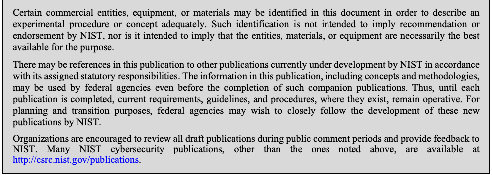
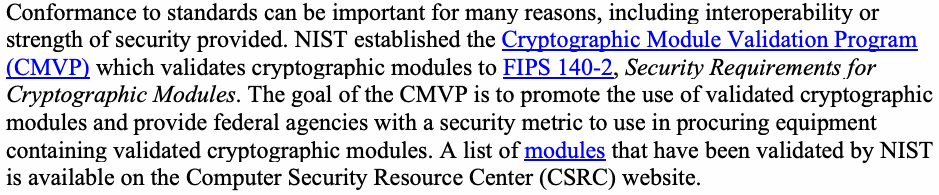

NIST SP 800-12 Rev. 1 日本語訳
英語タイトル : An Introduction to Information Security日本語タイトル : 情報セキュリティ入門
公開日 : 2017-06-22
原文URL : https://csrc.nist.gov/pubs/sp/800/12/r1/final
翻訳編集 : 自動生成
[要約] SP 800-12 Rev. 1 は、組織が各システムの情報セキュリティ上のニーズを理解するために活用できる、情報セキュリティの原則を紹介する入門書です。情報セキュリティの要素、役割と責任、脅威と脆弱性、ポリシー、リスク管理、保証、運用上の考慮事項、暗号を扱い、SP 800-53 で定義される管理策ファミリを説明します。情報セキュリティに初めて取り組む人や NIST の文書に不慣れな人の出発点であり、組織に要件を課すものではなく、管理策ファミリの適用手法と利点を示すことが目的です。
有志による非公式の日本語訳です。NIST および米国商務省が作成・承認・推奨したものではありません。要件の確認にはNIST の正式版 PDFを参照してください。
NIST Special Publication 800-12
NIST特別刊行物800-12
Revision 1
改訂第1版
An Introduction to Information Security
情報セキュリティ入門
Michael Nieles Kelley Dempsey Victoria Yan Pillitteri
Michael Nieles Kelley Dempsey Victoria Yan Pillitteri
This publication is available free of charge from: https://doi.org/10.6028/NIST.SP.800-12r1
本刊行物は、次のURLから無料で入手できる：https://doi.org/10.6028/NIST.SP.800-12r1
C O M P U T E R S E C U R I T Y
コンピュータセキュリティ
［NIST のロゴ。公的な標章のため、この非公式サイトには掲載していない。原本 PDF を参照。］
NIST Special Publication 800-12
NIST特別刊行物800-12
Revision 1
改訂第1版
An Introduction to Information Security
情報セキュリティ入門
Michael Nieles Kelley Dempsey Victoria Yan Pillitteri
Michael Nieles Kelley Dempsey Victoria Yan Pillitteri
Computer Security Division Information Technology Laboratory
コンピュータセキュリティ部門 情報技術研究所
This publication is available free of charge from: https://doi.org/10.6028/NIST.SP.800-12r1
本刊行物は、次のURLから無料で入手できる：https://doi.org/10.6028/NIST.SP.800-12r1
June 2017
2017年6月
U.S. Department of Commerce Wilbur L. Ross, Jr., Secretary
米国商務省 Wilbur L. Ross, Jr. 長官
National Institute of Standards and Technology
米国国立標準技術研究所
Kent Rochford, Acting NIST Director and Under Secretary of Commerce for Standards and Technology
Kent Rochford NIST所長代行および商務省標準技術担当次官
Authority
権限
This publication has been developed by NIST in accordance with its statutory responsibilities under the Federal Information Security Modernization Act (FISMA) of 2014, 44 U.S.C. § 3551 et seq., Public Law (P.L.) 113-283. NIST is responsible for developing information security standards and guidelines, including minimum requirements for federal systems, but such standards and guidelines shall not apply to national security systems without the express approval of appropriate federal officials exercising policy authority over such systems. This guideline is consistent with the requirements of the Office of Management and Budget (OMB) Circular A-130.
本刊行物は、2014年連邦情報セキュリティ近代化法（FISMA）、合衆国法典第44編§3551以降、公共法113-283に基づく法定責任に従い、NISTが作成した。NISTは、連邦システムの最低要件を含む情報セキュリティ標準および指針の策定に責任を負う。ただし、適切な連邦当局者が当該システムに関する政策権限を行使し明示的に承認しない限り、これらの標準および指針を国家安全保障システムに適用してはならない。本ガイドラインは、行政管理予算局（OMB）通達A-130の要件に整合している。
Nothing in this publication should be taken to contradict the standards and guidelines made mandatory and binding on federal agencies by the Secretary of Commerce under statutory authority. Nor should these guidelines be interpreted as altering or superseding the existing authorities of the Secretary of Commerce, Director of the OMB, or any other federal official. This publication may be used by nongovernmental organizations on a voluntary basis and is not subject to copyright in the United States. Attribution would, however, be appreciated by NIST.
本刊行物のいかなる記述も、法定権限に基づき商務長官が連邦機関に義務付け、拘束力を持たせた標準および指針に反すると解釈すべきではない。また、本指針は、商務長官、OMB長官、またはその他の連邦当局者の既存の権限を変更または置き換えるものと解釈すべきではない。本刊行物は非政府組織が自主的に使用でき、米国内では著作権の対象ではない。ただし、NISTへの帰属表示を歓迎する。
National Institute of Standards and Technology Special Publication 800-12 Revision 1 Natl. Inst. Stand. Technol. Spec. Publ. 800-12 Rev. 1, 101 pages (June 2017) CODEN: NSPUE2
米国国立標準技術研究所 Special Publication 800-12 Revision 1 Natl. Inst. Stand. Technol. Spec. Publ. 800-12 Rev. 1、101ページ（2017年6月） CODEN: NSPUE2
This publication is available free of charge from: https://doi.org/10.6028/NIST.SP.800-12r1
本刊行物は、次のURLから無料で入手できる：https://doi.org/10.6028/NIST.SP.800-12r1
Certain commercial entities, equipment, or materials may be identified in this document in order to describe an experimental procedure or concept adequately. Such identification is not intended to imply recommendation or endorsement by NIST, nor is it intended to imply that the entities, materials, or equipment are necessarily the best available for the purpose.
原本PDFの抜粋画像

この文書では、実験手順または概念を適切に説明するため、特定の商業組織、機器、または材料を挙げることがある。このような記載は、NISTによる推奨または承認を意味するものではなく、当該組織、材料、機器が目的に対して必ずしも最良の選択肢であることを意味するものでもない。
There may be references in this publication to other publications currently under development by NIST in accordance with its assigned statutory responsibilities. The information in this publication, including concepts and methodologies, may be used by federal agencies even before the completion of such companion publications. Thus, until each publication is completed, current requirements, guidelines, and procedures, where they exist, remain operative. For planning and transition purposes, federal agencies may wish to closely follow the development of these new publications by NIST.
本刊行物では、NISTが割り当てられた法定責任に基づいて現在策定中の他の刊行物を参照することがある。本刊行物に含まれる情報（概念および方法論を含む）は、関連刊行物が完成する前であっても連邦機関が使用してもよい。したがって、各刊行物が完成するまでは、既存の要件、指針、および手順がある場合、それらは引き続き有効である。計画および移行のため、連邦機関はNISTによるこれらの新刊行物の策定の進展を注意深く注視するとよい。
Organizations are encouraged to review all draft publications during public comment periods and provide feedback to NIST. Many NIST cybersecurity publications, other than the ones noted above, are available at http://csrc.nist.gov/publications.
組織は、パブリックコメント期間中にすべての刊行物草案を確認し、NISTにフィードバックを提供することが推奨される。上記以外のNISTサイバーセキュリティ刊行物の多くは、http://csrc.nist.gov/publications から入手できる。
Comments on this publication may be submitted to:
本刊行物に関するコメントは、次の宛先に提出することができる。
National Institute of Standards and Technology Attn: Computer Security Division, Information Technology Laboratory 100 Bureau Drive (Mail Stop 8930) Gaithersburg, MD 20899-8930 Email: sec-cert@nist.gov
米国国立標準技術研究所 宛先：情報技術研究所 コンピュータセキュリティ部門 100 Bureau Drive (Mail Stop 8930) Gaithersburg, MD 20899-8930 電子メール：sec-cert@nist.gov
All comments are subject to release under the Freedom of Information Act (FOIA).
すべてのコメントは、情報自由法（FOIA）に基づく公開の対象となる。
Reports on Computer Systems Technology
コンピュータシステム技術に関する報告書
The Information Technology Laboratory (ITL) at the National Institute of Standards and Technology (NIST) promotes the U.S. economy and public welfare by providing technical leadership for the Nation’s measurement and standards infrastructure. ITL develops tests, test methods, reference data, proof of concept implementations, and technical analyses to advance the development and productive use of information technology. ITL’s responsibilities include the development of management, administrative, technical, and physical standards and guidelines for the cost-effective security and privacy of other than national security-related information in federal systems. The Special Publication 800-series reports on ITL’s research, guidelines, and outreach efforts in systems security as well as its collaborative activities with industry, government, and academic organizations.
米国国立標準技術研究所（NIST）の情報技術研究所（ITL）は、国家の計測・標準インフラに技術的リーダーシップを提供し、米国経済と公共の福祉を促進する。ITLは、情報技術の発展と生産的利用を進めるため、試験、試験方法、参照データ、概念実証実装、および技術分析を開発する。ITLの責任には、連邦システムにおける国家安全保障関連以外の情報について、費用対効果の高いセキュリティおよびプライバシーを実現するための、マネジメント面、管理面、技術面、物理面の標準および指針の策定が含まれる。特別刊行物800シリーズは、システムセキュリティに関するITLの研究、指針、普及活動、および産業界、政府、学術機関との協力活動を報告する。
Abstract
概要
Organizations rely heavily on the use of information technology (IT) products and services to run their day-to-day activities. Ensuring the security of these products and services is of the utmost importance for the success of the organization. This publication introduces the information security principles that organizations may leverage to understand the information security needs of their respective systems.
組織は日々の活動を運営するため、情報技術（IT）製品およびサービスに大きく依存している。これらの製品およびサービスのセキュリティを確保することは、組織の成功にとって最も重要である。本刊行物では、組織がそれぞれのシステムの情報セキュリティ上のニーズを理解するために活用できる情報セキュリティの原則を紹介する。
Keywords
キーワード
assurance; computer security; information security; introduction; risk management; security controls; security requirements
保証、コンピュータセキュリティ、情報セキュリティ、入門、リスク管理、セキュリティ管理策、セキュリティ要件
Acknowledgements
謝辞
The authors would like to thank everyone who took the time to review and make comments on the draft of this publication, specifically Celia Paulsen, Ned Goren, Isabel Van Wyk, and Rathini Vijayaverl of the National Institute of Standards and Technology (NIST). The authors would also like to acknowledge the original authors, Barbara Guttman and Edward A. Roback, as well as all those individuals who contributed to the original version of this publication.
著者らは、本書の草案を時間をかけてレビューしコメントを寄せてくれたすべての人々、とりわけ米国国立標準技術研究所（NIST）のCelia Paulsen、Ned Goren、Isabel Van Wyk、Rathini Vijayaverlに感謝する。また、原著者であるBarbara GuttmanとEdward A. Roback、ならびに本書の初版に貢献したすべての人々に謝意を表する。
Table of Contents
目次
1 Introduction — 1
1 はじめに — 1
1.1 Purpose — 1
1.1 目的 — 1
1.2 Intended Audience — 1
1.2 想定読者 — 1
1.3 Organization — 1
1.3 本書の構成 — 1
1.4 Important Terminology — 2
1.4 重要な用語 — 2
1.5 Legal Foundation for Federal Information Security Programs — 3
1.5 連邦情報セキュリティプログラムの法的基盤 — 3
1.6 Related NIST Publications — 4
1.6 NISTの関連刊行物 — 4
2 Elements of Information Security — 7
2 情報セキュリティの要素 — 7
2.1 Information security supports the mission of the organization — 7
2.1 情報セキュリティは組織のミッションを支援する — 7
2.2 Information security is an integral element of sound management — 8
2.2 情報セキュリティは健全な管理の不可欠な要素である — 8
2.3 Information security protections are implemented so as to be commensurate with risk — 8
2.3 情報セキュリティ保護はリスクに見合うよう実装する — 8
2.4 Information security roles and responsibilities are made explicit — 9
2.4 情報セキュリティの役割と責任を明確にする — 9
2.5 Information security responsibilities for system owners go beyond their own organization — 9
2.5 システム所有者の情報セキュリティ責任は自らの組織の範囲を超える — 9
2.6 Information security requires a comprehensive and integrated approach — 9
2.6 情報セキュリティには包括的かつ統合的なアプローチが必要である — 9
2.6.1 Interdependencies of security controls — 10
2.6.1 セキュリティ管理策の相互依存関係 — 10
2.6.2 Other interdependencies — 10
2.6.2 その他の相互依存関係 — 10
2.7 Information security is assessed and monitored regularly — 10
2.7 情報セキュリティは定期的に評価・監視する — 10
2.8 Information security is constrained by societal and cultural factors — 11
2.8 情報セキュリティは社会的・文化的要因による制約を受ける — 11
3 Roles and Responsibilities — 13
3 役割と責任 — 13
3.1 Risk Executive Function (Senior Management) — 13
3.1 リスクエグゼクティブ機能（上級管理職） — 13
3.2 Chief Executive Officer (CEO) — 13
3.2 最高経営責任者（CEO） — 13
3.3 Chief Information Officer (CIO) — 14
3.3 最高情報責任者（CIO） — 14
3.4 Information Owner/Steward — 14
3.4 情報所有者／管理責任者 — 14
3.5 Senior Agency Information Security Officer (SAISO) — 14
3.5 上級機関情報セキュリティ責任者（SAISO） — 14
3.6 Authorizing Official (AO) — 15
3.6 認可担当者（AO） — 15
3.7 Authorizing Official Designated Representative — 15
3.7 認可担当者の指定代理人 — 15
3.8 Senior Agency Official for Privacy (SAOP) — 15
3.8 プライバシー担当上級機関職員（SAOP） — 15
3.9 Common Control Provider — 15
3.9 共通管理策提供者 — 15
3.10 System Owner — 16
3.10 システム所有者 — 16
3.11 System Security Officer (SSO) — 16
3.11 システムセキュリティ担当者（SSO） — 16
3.12 Information Security Architect — 16
3.12 情報セキュリティアーキテクト — 16
3.13 System Security Engineer (SSE) — 17
3.13 システムセキュリティエンジニア（SSE） — 17
3.14 Security Control Assessor — 17
3.14 セキュリティ管理策評価者 — 17
3.15 System Administrator — 17
3.15 システム管理者 — 17
3.16 User — 17
3.16 利用者 — 17
3.17 Supporting Roles — 18
3.17 支援的役割 — 18
4 Threats and Vulnerabilities: A Brief Overview — 20
4 脅威と脆弱性：概要 — 20
4.1 Examples of Adversarial Threat Sources and Events — 20
4.1 敵対的な脅威源および事象の例 — 20
4.1.1 Fraud and Theft — 21
4.1.1 詐欺および窃盗 — 21
4.1.2 Insider Threat — 22
4.1.2 内部者による脅威 — 22
4.1.3 Malicious Hacker — 22
4.1.3 悪意あるハッカー — 22
4.1.4 Malicious Code — 23
4.1.4 悪意あるコード — 23
4.2 Examples of Non-Adversarial Threat Sources and Events — 24
4.2 非敵対的な脅威源および事象の例 — 24
4.2.1 Errors and Omissions — 24
4.2.1 誤りおよび不作為 — 24
4.2.2 Loss of Physical and Infrastructure Support — 24
4.2.2 物理的・インフラ支援の喪失 — 24
4.2.3 Impacts to Personal Privacy of Information Sharing — 25
4.2.3 情報共有が個人プライバシーに及ぼす影響 — 25
5 Information Security Policy — 26
5 情報セキュリティ方針 — 26
5.1 Standards, Guidelines, and Procedures — 26
5.1 標準、ガイドライン、および手順 — 26
5.2 Program Policy — 27
5.2 プログラム方針 — 27
5.2.1 Basic Components of Program Policy — 27
5.2.1 プログラム方針の基本要素 — 27
5.3 Issue-Specific Policy — 28
5.3 課題固有方針 — 28
5.3.1 Example Topics for Issue-Specific Policy — 28
5.3.1 課題固有方針のトピック例 — 28
5.3.2 Basic Components of Issue-Specific Policy — 29
5.3.2 課題固有方針の基本要素 — 29
5.4 System-Specific Policy — 30
5.4 システム固有方針 — 30
5.4.1 Security Objectives — 31
5.4.1 セキュリティ目標 — 31
5.4.2 Operational Security Rules — 31
5.4.2 運用セキュリティ規則 — 31
5.4.3 System-Specific Policy Implementation — 32
5.4.3 システム固有方針の実装 — 32
5.5 Interdependencies — 32
5.5 相互依存関係 — 32
5.6 Cost Considerations — 33
5.6 費用上の考慮事項 — 33
6 Information Security Risk Management — 34
6 情報セキュリティリスク管理 — 34
6.1 Categorize — 36
6.1 分類 — 36
6.2 Select — 36
6.2 選択 — 36
6.3 Implement — 37
6.3 実装 — 37
6.4 Assess — 37
6.4 評価 — 37
6.5 Authorize — 37
6.5 認可 — 37
6.6 Monitor — 37
6.6 監視 — 37
7 Assurance — 38
7 保証 — 38
7.1 Authorization — 38
7.1 認可 — 38
7.1.1 Authorization and Assurance — 39
7.1.1 認可と保証 — 39
7.1.2 Authorization of Products to Operate in Similar Situation — 39
7.1.2 類似状況で運用する製品の認可 — 39
7.2 Security Engineering — 39
7.2 セキュリティエンジニアリング — 39
7.2.1 Planning and Assurance — 39
7.2.1 計画と保証 — 39
7.2.2 Design and Implementation Assurance — 39
7.2.2 設計および実装の保証 — 39
7.3 Operational Assurance — 41
7.3 運用保証 — 41
7.3.1 Security and Privacy Control Assessments — 42
7.3.1 セキュリティおよびプライバシー管理策の評価 — 42
7.3.2 Audit Methods and Tools — 42
7.3.2 監査方法およびツール — 42
7.3.3 Monitoring Methods and Tools — 44
7.3.3 監視方法およびツール — 44
7.4 Interdependencies — 46
7.4 相互依存関係 — 46
7.5 Cost Considerations — 46
7.5 費用上の考慮事項 — 46
8 Security Considerations in System Support and Operations — 47
8 システム支援および運用におけるセキュリティ上の考慮事項 — 47
8.1 User Support — 47
8.1 利用者支援 — 47
8.2 Software Support — 48
8.2 ソフトウェア支援 — 48
8.3 Configuration Management — 48
8.3 構成管理 — 48
8.4 Backups — 49
8.4 バックアップ — 49
8.5 Media Controls — 49
8.5 媒体管理策 — 49
8.6 Documentation — 49
8.6 文書化 — 49
8.7 Maintenance — 50
8.7 保守 — 50
8.8 Interdependencies — 50
8.8 相互依存関係 — 50
8.9 Cost Considerations — 51
8.9 費用上の考慮事項 — 51
9 Cryptography — 52
9 暗号技術 — 52
9.1 Uses of Cryptography — 52
9.1 暗号技術の用途 — 52
9.1.1 Data Encryption — 52
9.1.1 データ暗号化 — 52
9.1.2 Integrity — 53
9.1.2 完全性 — 53
9.1.3 Electronic Signatures — 53
9.1.3 電子署名 — 53
9.1.4 User Authentication — 54
9.1.4 利用者認証 — 54
9.2 Implementation Issues — 54
9.2 実装上の課題 — 54
9.2.1 Selecting Design and Implementation Standards — 55
9.2.1 設計および実装標準の選定 — 55
9.2.2 Deciding between Software, Hardware, or Firmware Implementations ..
9.2.2 ソフトウェア、ハードウェア、またはファームウェア実装の選択 …
— 55
— 55
9.2.3 Managing Keys — 55
9.2.3 鍵の管理 — 55
9.2.4 Security of Cryptographic Modules — 56
9.2.4 暗号モジュールのセキュリティ — 56
9.2.5 Applying Cryptography to Networks — 56
9.2.5 ネットワークへの暗号技術の適用 — 56
9.2.6 Complying with Export Rules — 57
9.2.6 輸出規則の遵守 — 57
9.3 Interdependencies — 57
9.3 相互依存関係 — 57
9.4 Cost Considerations — 58
9.4 費用上の考慮事項 — 58
9.4.1 Direct Costs — 58
9.4.1 直接費用 — 58
9.4.2 Indirect Costs — 58
9.4.2 間接費用 — 58
10 Control Families — 59
10 管理策ファミリー — 59
10.1 Access Control (AC) — 59
10.1 アクセス制御（AC）— 59
10.2 Awareness and Training (AT) — 59
10.2 意識向上および訓練（AT）— 59
10.3 Audit and Accountability (AU) — 60
10.3 監査および説明責任（AU）— 60
10.4 Assessment, Authorization, and Monitoring (CA) — 60
10.4 評価、認可、および監視（CA）— 60
10.5 Configuration Management (CM) — 61
10.5 構成管理（CM）— 61
10.6 Contingency Planning (CP) — 61
10.6 緊急時対応計画（CP）— 61
10.7 Identification and Authentication (IA) — 62
10.7 識別および認証（IA）— 62
10.8 Individual Participation (IP) — 63
10.8 個人の参加（IP）— 63
10.9 Incident Response (IR) — 64
10.9 インシデント対応（IR）— 64
10.10 Maintenance (MA) — 64
10.10 保守（MA）— 64
10.11 Media Protection (MP) — 65
10.11 媒体保護（MP）— 65
10.12 Privacy Authorization (PA) — 65
10.12 プライバシー認可（PA）— 65
10.13 Physical and Environmental Protection (PE) — 66
10.13 物理的および環境的保護（PE）— 66
10.14 Planning (PL) — 67
10.14 計画（PL）— 67
10.15 Program Management (PM) — 67
10.15 プログラム管理（PM）— 67
10.16 Personnel Security (PS) — 68
10.16 人事セキュリティ（PS）— 68
10.17 Risk Assessment (RA) — 68
10.17 リスク評価（RA）— 68
10.18 System and Services Acquisition (SA) — 69
10.18 システムおよびサービスの取得（SA）— 69
10.19 System and Communications Protection (SC) — 69
10.19 システムおよび通信の保護（SC）— 69
10.20 System and Information Integrity (SI).......................................................... 70
10.20 システムおよび情報の完全性（SI）.......................................................... 70
List of Appendices
付録一覧
Appendix A— References .......................................................................................... 71
付録A— 参考文献 .......................................................................................... 71
Appendix B— Glossary .............................................................................................. 76
付録B— 用語集 .............................................................................................. 76
Appendix C— Acronyms and Abbreviations ............................................................ 88
付録C— 頭字語および略語 ............................................................ 88
List of Figures
図一覧
Figure 1 - Risk Management Framework (RMF) Overview ........................................... 36
図1 - リスク管理フレームワーク（RMF）の概要 ........................................... 36
1 Introduction
1 はじめに
1.1 Purpose
1.1 目的
This publication serves as a starting-point for those new to information security as well as those unfamiliar with NIST information security publications and guidelines. The intent of this special publication is to provide a high-level overview of information security principles by introducing related concepts and the security control families (as defined in NIST SP 800-53, Security and Privacy Controls for Federal Information Systems and Organizations) that organizations can leverage to effectively secure their systems1 and information. To better understand the meaning and intent of the security control families described later, this publication begins by familiarizing the reader with various information security principles.
本書は、情報セキュリティに初めて取り組む者や、NISTの情報セキュリティに関する文書やガイドラインに馴染みのない者にとっての出発点となるものである。本特別刊行物の目的は、関連する概念と、組織がシステム1と情報を効果的に保護するために活用できるセキュリティ管理策ファミリ（NIST SP 800-53, Security and Privacy Controls for Federal Information Systems and Organizationsで定義されている）を紹介することにより、情報セキュリティの原則の概要を示すことである。後述するセキュリティ管理策ファミリの意味と意図をよりよく理解できるよう、本書ではまず読者にさまざまな情報セキュリティの原則を紹介する。
After the introduction of these security principles, the publication provides detailed descriptions of multiple security control families as well as the benefits of each control family. The point is not to impose requirements on organizations, but to explore available techniques for applying a specific control family to an organization’s system and to explain the benefit(s) of employing the selected controls.
これらのセキュリティ原則を紹介した後、本刊行物では複数のセキュリティ管理策ファミリーの詳細な説明と、それぞれの利点を示す。組織に要件を課すことが目的ではなく、特定の管理策ファミリーを組織のシステムに適用するために利用可能な手法を検討し、選択した管理策を採用する利点を説明する。
Since this publication provides an introduction to information security, detailed steps as to how security controls are implemented or how to check for security control effectiveness are not included. Rather, separate publications that may provide more detailed information about a specific topic will be noted as a reference.
本刊行物は情報セキュリティの入門書であるため、セキュリティ管理策の実装方法や有効性の確認方法に関する詳細な手順は含まない。代わりに、特定のトピックについてより詳しい情報を示す別の刊行物を参考文献として挙げる。
1.2 Intended Audience
1.2 想定読者
The target audience for this publication are those new to the information security principles and tenets needed to protect information and systems in a way that is commensurate with risk. This publication provides a basic foundation of concepts and ideas to any person tasked with or interested in understanding how to secure systems.
本書の対象読者は、リスクに見合った形で情報とシステムを保護するために必要な情報セキュリティの原則と基本理念に初めて触れる者である。本書は、システムを保護する方法の理解を任務とする者や、それに関心のある者に対して、概念と考え方の基本的な土台を提供する。
For that reason, this publication is a good resource for anyone seeking a better understanding of information security basics or a high-level view on the topic. The tips and techniques described in this publication may be applied to any type of information or system in any type of organization. While there may be differences in the way federal organizations, academia, and the private sector process, store, and disseminate information within their respective systems, the basic principles of information security are applicable to all.
そのため本書は、情報セキュリティの基礎をより深く理解したい者や、この分野を概観したい者にとって有用な資料である。本書で説明する助言と手法は、あらゆる種類の組織におけるあらゆる種類の情報やシステムに適用できる。連邦組織、学術機関、民間部門の間では、それぞれのシステム内で情報を処理、保存、配布する方法に違いがあるかもしれないが、情報セキュリティの基本原則はすべてに適用できる。
1.3 Organization
1.3 本書の構成
This publication is organized as follows:
本刊行物の構成は次のとおりである。
•Chapter 1 describes the purpose, target audience, important terms, the legal foundation for information security, and a list of NIST publications related to information security and information risk management.
•第1章では、本刊行物の目的、対象読者、重要な用語、情報セキュリティの法的基盤、および情報セキュリティと情報リスク管理に関連するNIST刊行物の一覧を説明する。
•Chapter 2 lists eight major elements regarding information security.
•第2章では、情報セキュリティに関する8つの主要な要素を列挙する。
•Chapter 3 outlines several roles, supporting roles, and the respective responsibilities attributed to those roles on providing information security to the organization.
•第3章では、複数の役割、支援的役割、および組織に情報セキュリティを提供するうえで各役割に割り当てられた責任を概説する。
•Chapter 4 introduces threats and vulnerabilities, distinguishes the difference between the two, and provides examples of different threat sources and events.
•第4章では、脅威と脆弱性を紹介し、両者の違いを区別するとともに、さまざまな脅威源および事象の例を示す。
•Chapter 5 discusses information security policy and the differences between Program Policy, Issue-Specific Policy, and System-Specific Policy.
•第5章では、情報セキュリティ方針と、プログラム方針、課題固有方針、システム固有方針の違いを説明する。
•Chapter 6 considers how to manage risk and briefly describes the six steps of the NIST Risk Management Framework (RMF).
•第6章では、リスク管理の方法を取り上げ、NISTリスク管理フレームワーク（RMF）の6段階を簡潔に説明する。
•Chapter 7 focuses on information assurance and what measures can be taken to protect information and systems.
•第7章では、情報保証と、情報およびシステムを保護するために講じられる措置に焦点を当てる。
•Chapter 8 introduces system support and operations, which collectively function to run a system.
•第8章では、システムを稼働させるために連携するシステム支援および運用を紹介する。
•Chapter 9 provides a brief overview of cryptography as well as several NIST 800-series Publications that contain additional, more detailed information on specific cryptographic technologies.
•第9章では、暗号技術の概要と、特定の暗号技術についてさらに詳しい情報を含む複数のNIST 800シリーズ刊行物を示す。
•Chapter 10 introduces the 20 information security and privacy control families.
•第10章では、情報セキュリティおよびプライバシーに関する20の管理策ファミリーを紹介する。
•Appendix A provides a list of References.
•付録Aでは、参考文献一覧を示す。
•Appendix B provides a Glossary of terms used throughout the document.
•付録Bでは、本書全体で使用する用語の用語集を示す。
•Appendix C provides a list of Acronyms and Abbreviations used throughout the document.
•付録Cでは、本書全体で使用する頭字語および略語の一覧を示す。
1.4 Important Terminology
1.4 重要な用語
The term Information System is defined by 44 U.S.C., Sec. 3502 as “a discrete set of information resources organized for the collection, processing, maintenance, use, sharing, dissemination, or disposition of information.” For this publication, the term system is used in lieu of the term information system to reflect the broader applicability of information resources of any size or complexity, organized expressly for the collection, processing, use, sharing, dissemination, maintenance, or disposition of data or information. Some other key terms to be familiar with are:2
「情報システム」という用語は、合衆国法典第44編第3502条において、「情報の収集、処理、保守、使用、共有、配布、または処分のために組織化された、情報資源の独立した一式」と定義されている。本刊行物では、データまたは情報の収集、処理、使用、共有、配布、保守、または処分のために明示的に組織化された、あらゆる規模または複雑さの情報資源へのより広い適用可能性を反映するため、「情報システム」の代わりに「システム」という用語を用いる。理解しておくべきその他の重要な用語は次のとおりである。2
•Information – (1) Facts or ideas, which can be represented (encoded) as various forms of data; (2) Knowledge (e.g., data, instructions) in any medium or form that can be communicated between system entities.
•情報 – (1) さまざまな形式のデータとして表現（符号化）できる事実または考え、(2) システム主体間で伝達できる、あらゆる媒体または形式の知識（例：データ、指示）。
•Information Security – The protection of information and information systems from unauthorized access, use, disclosure, disruption, modification, or destruction in order to ensure confidentiality, integrity, and availability.
•情報セキュリティ – 情報および情報システムを不正なアクセス、使用、開示、妨害、改変、または破壊から保護し、機密性、完全性、および可用性を確保すること。
•Confidentiality – Preserving authorized restrictions on information access and disclosure,
•機密性 – 情報へのアクセスおよび開示に対する、認可された制限を維持すること、
including means for protecting personal privacy and proprietary information.
個人のプライバシーおよび専有情報を保護する手段を含む。
•Integrity – Guarding against improper information modification or destruction and ensuring information non-repudiation and authenticity.
•完全性 – 不適切な情報の改変または破壊を防止し、情報の否認防止性および真正性を確保すること。
Data Integrity – The property that data has not been altered in an unauthorized o manner. Data integrity covers data in storage, during processing, and while in transit. System Integrity – The quality that a system has when it performs its intended o function in an unimpaired manner, free from unauthorized manipulation of the system, whether intentional or accidental.
データ完全性 – データが不正な方法で変更されていないという性質。データ完全性は、保存中、処理中、および転送中のデータを対象とする。システム完全性 – システムが意図された機能を損なわれずに実行し、意図的または偶発的な不正操作を受けていない場合に、そのシステムが備える品質。
•Availability – Ensuring timely and reliable access to and use of information.
•可用性 – 情報への適時かつ信頼できるアクセスおよび利用を確保すること。
•Security Controls3 – The management, operational, and technical controls (i.e., safeguards or countermeasures) prescribed for a system to protect the confidentiality, availability, and integrity of the system and its information.
•セキュリティ管理策3 – システムおよびその情報の機密性、可用性、完全性を保護するために、システムに規定される管理的、運用的、技術的な管理策（すなわち、保護手段または対抗策）。
1.5 Legal Foundation for Federal Information Security Programs
1.5 連邦情報セキュリティプログラムの法的基盤
Within the Federal Government, many laws and regulations mandate that federal organizations protect their systems, the information processed, stored, or transmitted by systems, and related technology resources (e.g., telecommunications). A sampling of these laws and regulations is listed below.
連邦政府では、多くの法律や規則により、連邦組織はシステム、システムが処理、保存、または伝送する情報、および関連する技術資源（例：電気通信）を保護するよう義務付けられている。以下に、これらの法律および規則の一部を示す。
•The Computer Security Act of 1987 required agencies to identify sensitive systems, conduct computer security training, and develop computer security plans. The Computer Security Act of 1987 was superseded by the Federal Information Security Management Act of 2002 (FISMA), described below.
•1987年コンピュータセキュリティ法は、機微なシステムの特定、コンピュータセキュリティ訓練の実施、およびコンピュータセキュリティ計画の策定を各機関に求めた。同法は、以下で説明する2002年連邦情報セキュリティ管理法（FISMA）に取って代わられた。
•The Federal Information Resource Management Regulation (FIRMR) was the primary regulation for the use, management, and acquisition of computer resources in the Federal Government. The law was abolished pursuant to the Information Technology Management Reform Act of 1996 (ITMRA), redesignated the Clinger-Cohen Act.
•連邦情報資源管理規則（FIRMR）は、連邦政府におけるコンピュータ資源の使用、管理、および取得に関する主要な規則であった。同規則は、1996年情報技術管理改革法（ITMRA）に基づき廃止され、同法はClinger-Cohen法と改称された。
•The E-Government Act of 2002 is intended to enhance the management and promotion of electronic government services and processes by establishing a Federal Chief Information Officer (CIO) within the Office of Management and Budget (OMB), and by establishing a broad framework of measures that require the use of Internet-based information technology to enhance citizens’ access to government information, services, and to make improvements in the way the government operates..
•2002年電子政府法は、行政管理予算局（OMB）内に連邦最高情報責任者（CIO）を設置し、かつ、政府情報およびサービスへの国民のアクセスを拡大し、政府運営の方法を改善するためにインターネットベースの情報技術の利用を求める広範な措置の枠組みを確立することにより、電子政府サービスおよびプロセスの管理と促進を強化することを意図している。
•The Federal Information Security Management Act (FISMA) was enacted as part of the E-Government Act of 2002 to address specific information security needs, which include, but are not limited to, providing: a comprehensive framework for ensuring the effectiveness of information security controls over information resources that support federal operations and assets; and the development and maintenance of minimum controls required to protect federal information and systems (as written in SEC. 301 of Public Law 107-347).
•連邦情報セキュリティ管理法（FISMA）は、特定の情報セキュリティニーズに対応するため、2002年電子政府法の一部として制定された。これには、連邦業務および資産を支援する情報資源に対する情報セキュリティ管理策の有効性を確保する包括的枠組み、ならびに連邦情報およびシステムを保護するために必要な最低限の管理策の策定・維持が含まれるが、これらに限定されない（公法107-347第301条の記述による）。
•The Federal Information Security Modernization Act of 2014 was an amendment to FISMA that made several modifications to modernize federal security practices as well as promote and strengthen the use of continuous monitoring.
•2014年連邦情報セキュリティ近代化法はFISMAを改正し、連邦のセキュリティ実務を近代化するとともに、継続的監視の利用を促進・強化するため、複数の変更を加えた。
•OMB Circular A-130, Management of Federal Information Resources, requires that federal agencies establish information security and privacy programs containing specified elements.
•OMB通達A-130「連邦情報資源の管理」は、連邦機関に対し、指定された要素を含む情報セキュリティおよびプライバシープログラムを確立するよう求める。
•OMB Memoranda as applicable.
•該当するOMB覚書。
This is not a comprehensive list of laws and regulations related to federal systems. There are more specific requirements imposed on federal agencies depending on the type of information they store, process, and disseminate. Additionally, some existing laws that affect non-government organizations were not included on this list. Examples of these laws include: the Health Insurance Portability and Accountability Act (HIPAA), which requires protection of the privacy and security of health information; and the Sarbanes-Oxley (SOX) Act, which requires protection for the public from accounting errors and fraudulent practices in financial systems.
これは連邦政府のシステムに関連する法律や規則を網羅したリストではない。連邦政府機関には、保存、処理、配布する情報の種類に応じて、より具体的な要件が課される。また、政府以外の組織に影響を及ぼす既存の法律の一部は、このリストに含めていない。そうした法律の例としては、医療情報のプライバシーとセキュリティの保護を求めるHealth Insurance Portability and Accountability Act（HIPAA）や、金融システムにおける会計上の誤りや不正行為から公衆を保護することを求めるSarbanes-Oxley（SOX）Actがある。
Federal managers are responsible for familiarizing themselves and complying with applicable legal requirements. However, laws and regulations do not typically provide detailed instructions for protecting information. Instead, they specify broad, flexible requirements such as restricting the availability of personal data to authorized users. This publication provides guidance on developing an effective, overall information security approach to meet applicable laws or policies.
連邦政府の管理者は、適用される法的要件を把握し、それを遵守する責任を負う。しかし、法律や規則は通常、情報を保護するための詳細な指示を示していない。代わりに、個人データの利用を認可された利用者に限定するといった、広範で柔軟な要件を定めている。本書は、適用される法律や方針を満たすための、効果的で全体的な情報セキュリティの取り組み方を策定する際の指針を示す。
1.6 Related NIST Publications
1.6 NISTの関連刊行物
When it comes to information security and risk management, there are a specific set of Federal Information Processing Standards (FIPS) and NIST Special Publications (SPs) that apply. They include:
情報セキュリティおよびリスク管理に関連して、適用される連邦情報処理標準（FIPS）およびNIST特別刊行物（SP）がある。これには次が含まれる。
•FIPS 199 – Standards for Security Categorization of Federal Information and Information Systems, lists standards for the categorization of information and systems, which in turn provides a common framework and understanding of expressing security in a way that promotes effective management and consistent reporting.
•FIPS 199 – 連邦情報および情報システムのセキュリティ分類標準。情報およびシステムを分類する標準を示し、これにより、効果的な管理と一貫した報告を促進する形でセキュリティを表現するための共通の枠組みと理解を提供する。
•• FIPS 200 – Minimum Security Requirements for Federal Information and Information Systems, specifies minimum security requirements for information and systems that support the executive agencies of the Federal Government as well as a risk-based process for selecting the security controls necessary to satisfy the minimum security requirements.
•• FIPS 200 – 連邦情報および情報システムの最低限のセキュリティ要件。連邦政府の行政機関を支援する情報およびシステムに対する最低限のセキュリティ要件と、その最低限のセキュリティ要件を満たすために必要なセキュリティ管理策を選択するリスクベースのプロセスを規定する。
•SP 800-18 – Guide for Developing Security Plans for Systems, describes the procedures for developing a system security plan, provides an overview of the security requirements of the system, and describes the controls in place or planned for meeting those requirements.
•SP 800-18 – システムのセキュリティ計画策定ガイド。システムセキュリティ計画の策定手順を説明し、システムのセキュリティ要件の概要と、それらの要件を満たすために実装済みまたは計画中の管理策を示す。
•SP 800-30 – Guide for Conducting Risk Assessments, provides guidance for conducting risk assessments of federal systems and organizations.
•SP 800-30 – リスク評価実施ガイド。連邦システムおよび組織のリスク評価を実施するための指針を示す。
•SP 800-34 – Contingency Planning Guide for Federal Information Systems, assists organizations in understanding the purpose, process, and format of information system contingency plans (ISCPs) development with practical, real-world guidelines.
•SP 800-34 – 連邦情報システム緊急時対応計画ガイド。情報システム緊急時対応計画（ISCP）の策定目的、プロセス、形式について、実践的で実例に即した指針を示し、組織の理解を支援する。
•SP 800-37 – Guide for Applying the Risk Management Framework to Systems: A Security Life Cycle Approach, provides guidelines for applying the Risk Management Framework to federal systems, including conducting the activities of security categorization, security control selection and implementation, security control assessment, system authorization, and security control monitoring.
•SP 800-37 – システムへのリスク管理フレームワーク適用ガイド：セキュリティライフサイクルアプローチ。セキュリティ分類、セキュリティ管理策の選択および実装、セキュリティ管理策評価、システム認可、セキュリティ管理策の監視を含め、連邦システムにリスク管理フレームワークを適用する指針を示す。
•SP 800-39 – Managing Information Security Risk: Organization, Mission, and Information System View, provides guidelines to establish an integrated, organization-wide program for managing information security risk to organizational operations (e.g., mission, functions, image, and reputation), assets, individuals, other organizations, and the Nation resulting from the operation and use of federal systems.
•SP 800-39 – 『情報セキュリティリスクの管理：組織、ミッション、および情報システムの視点』は、連邦システムの運用および使用に起因する、組織運営（例：ミッション、機能、イメージ、評判）、資産、個人、他組織、および国家に対する情報セキュリティリスクを管理するための、統合された組織全体のプログラムを確立する指針を示す。
•SP 800-53 – Security and Privacy Controls for Systems and Organizations, provides guidelines for selecting and specifying security controls for organizations and systems supporting the executive agencies of the Federal Government to meet the requirements of FIPS Publication 200.
•SP 800-53 – システムおよび組織のセキュリティおよびプライバシー管理策。FIPS Publication 200の要件を満たすため、連邦政府の行政機関を支援する組織およびシステム向けのセキュリティ管理策を選択し、仕様化する指針を示す。
•SP 800-53A – Assessing Security and Privacy Controls in Systems and Organizations: Building Effective Assessment Plans, provides (i) guidelines for building effective security assessment plans and privacy assessment plans; and (ii) a comprehensive set of procedures for assessing the effectiveness of security controls and privacy controls employed in systems and organizations supporting the executive agencies of the Federal Government.
•SP 800-53A – システムおよび組織のセキュリティおよびプライバシー管理策の評価：効果的な評価計画の策定。 (i) 効果的なセキュリティ評価計画およびプライバシー評価計画の策定指針、ならびに (ii) 連邦政府の行政機関を支援するシステムおよび組織で用いられるセキュリティ管理策およびプライバシー管理策の有効性を評価するための包括的な手順一式を提供する。
•SP 800-60 – Guide for Mapping Types of Information and Information Systems to Security Categories, assists agencies in consistently mapping security impact levels to types of: (i) information (e.g., privacy, medical, proprietary, financial, contractor sensitive, trade secret, investigation); and (ii) systems (e.g., mission critical, mission support, administrative).
•SP 800-60 – 情報および情報システムの種類をセキュリティカテゴリに対応付けるガイド。機関がセキュリティ影響レベルを、(i) 情報の種類（例：プライバシー、医療、専有、金融、請負業者の機微情報、企業秘密、調査情報）、および (ii) システムの種類（例：ミッションクリティカル、ミッション支援、管理系）に一貫して対応付けられるよう支援する。
•SP 800-128 – Guide for Security-Focused Configuration Management of Information Systems, provides guidance for organizations responsible for managing and administrating the security of federal systems and associated environments of operation.
•SP 800-128 – 情報システムのセキュリティ重視の構成管理ガイド。連邦システムおよび関連する運用環境のセキュリティ管理・運営を担う組織に指針を示す。
•SP 800-137 – Information Security Continuous Monitoring (ISCM) for Federal Information Systems and Organizations, assists organizations in the development of an ISCM strategy and the implementation of an ISCM program, which provide awareness of threats and vulnerabilities, visibility into organizational assets, and the effectiveness of deployed security controls.
•SP 800-137 – 連邦情報システムおよび組織の情報セキュリティ継続的監視（ISCM）。脅威および脆弱性の認識、組織資産の可視性、ならびに導入済みセキュリティ管理策の有効性の把握を可能にするISCM戦略の策定およびISCMプログラムの実装について、組織を支援する。
2 Elements of Information Security
2 情報セキュリティの要素
This publication addresses eight major elements regarding information security to help the reader gain a better understanding of how the security requirements and controls discussed in Chapter 10 support the overall operations of the organization. These eight concepts are:
本刊行物では、読者が情報セキュリティをよりよく理解できるよう、情報セキュリティに関する8つの主要な要素を扱う。これらの要素は、第10章で説明するセキュリティ要件および管理策が組織全体の運営をどのように支援するかを理解する助けとなる。8つの概念は次のとおりである。
1.Information security supports the mission of the organization.
1.情報セキュリティは組織のミッションを支援する。
2.Information security is an integral element of sound management.4
2.情報セキュリティは健全な管理の不可欠な要素である。4
3.Information security protections are implemented so as to be commensurate with risk.
3.情報セキュリティ保護はリスクに見合うよう実装する。
4.Information security roles and responsibilities are made explicit.
4.情報セキュリティの役割と責任を明確にする。
5.Information security responsibilities for system owners go beyond their own organization.
5.システム所有者の情報セキュリティ責任は自組織の範囲を超える。
6.Information security requires a comprehensive and integrated approach.
6.情報セキュリティには包括的かつ統合的なアプローチが必要である。
7.Information security is assessed and monitored regularly.
7.情報セキュリティは定期的に評価・監視する。
8.Information security is constrained by societal and cultural factors.
8.情報セキュリティは社会的・文化的要因による制約を受ける。
2.1 Information security supports the mission of the organization
2.1 情報セキュリティは組織のミッションを支援する
In Chapter 1, information security was defined as the protection of information and systems from unauthorized access, use, disclosure, disruption, modification, or destruction in order to provide confidentiality, integrity, and availability. The careful implementation of information security controls is vital to protecting an organization’s information assets as well as its reputation, legal position, personnel, and other tangible or intangible assets.
第1章では、情報セキュリティを、機密性、完全性、および可用性を確保するため、情報およびシステムを不正なアクセス、使用、開示、妨害、改変、または破壊から保護することと定義した。情報セキュリティ管理策を慎重に実装することは、組織の情報資産だけでなく、評判、法的立場、要員、その他の有形・無形資産を保護するうえで不可欠である。
An organization’s inability to select and implement appropriate security rules and procedures is likely to have a negative impact on the mission of the organization. However, well-chosen security rules and procedures that are put in place to protect important assets support the overall organizational mission. In today’s environment of malicious code, system breaches, and insider threats, publicized security issues can have dire consequences, especially to profitability and to the reputation of the organization. Private and public-sector organizations improve both profit and service to customers when appropriate security protections are in place. Information security, therefore, is a means to an end and not an end in itself.
適切なセキュリティ規則および手順を選択・実装できなければ、組織のミッションに悪影響が及ぶ可能性が高い。一方、重要な資産を保護するために適切に選ばれたセキュリティ規則および手順は、組織全体のミッションを支える。悪意あるコード、システム侵害、内部者による脅威が存在する今日、セキュリティ問題が公になると、特に収益性や組織の評判に深刻な結果をもたらし得る。適切なセキュリティ保護を整備すれば、民間部門・公共部門の組織は利益を高め、顧客へのサービスを向上できる。したがって、情報セキュリティは目的を達成するための手段であり、それ自体が目的ではない。
It is critical to understand the organizational mission and how each system supports that mission. After a system's role has been defined, the security requirements implicit in that role can also be defined. Security can then be explicitly stated in terms of the organization's mission.
組織のミッションと、各システムがそのミッションをどのように支援するかを理解することが重要である。システムの役割を定義すれば、その役割に内在するセキュリティ要件も定義できる。そうすれば、セキュリティを組織のミッションに即して明示できる。
The roles and functions of a system may not be constrained to a single organization. In an inter-organizational system, each organization benefits from securing the system. For example, for electronic commerce to be successful, each of the participants requires security controls to
システムの役割および機能は、単一の組織内に限定されないことがある。組織間システムでは、各組織がシステムを保護することで利益を得る。例えば、電子商取引を成功させるには、参加者それぞれにセキュリティ管理策が必要であり、その目的は
The roles and functions of a system may not be constrained to a single organization. In an inter-organizational system, each organization benefits from securing the system. For example, for electronic commerce to be successful, each of the participants requires security controls to protect their resources. Good security on the buyer's system also benefits the seller; the buyer's system is less likely to be used for fraud, to become unavailable, or to otherwise negatively affect the seller. (The reverse is also true.)
システムの役割と機能は、単一の組織に限定されるとは限らない。組織間で利用するシステムでは、システムのセキュリティを確保することが各組織の利益となる。例えば、電子商取引を成功させるには、参加者それぞれが自らの資源を保護するためのセキュリティ管理策を必要とする。購入者のシステムのセキュリティが良好であれば、販売者にも利益がある。購入者のシステムが不正行為に利用されたり、利用不能になったり、その他の形で販売者に悪影響を及ぼしたりする可能性が低くなるためである。（逆も同様である。）
2.2 Information security is an integral element of sound management
2.2 情報セキュリティは健全な管理の不可欠な要素である
Management personnel are ultimately responsible for determining the level of acceptable risk for a specific system and the organization as a whole, taking into account the cost of security controls. Since information security risk cannot be completely eliminated, the objective is to find the optimal balance between protecting the information or system and utilizing available resources. It is vital for systems and related processes to have the ability to protect information, financial assets, physical assets, and employees, while also taking resource availability into consideration.
管理担当者は、セキュリティ管理策の費用を考慮したうえで、個別システムおよび組織全体にとって許容可能なリスクレベルを最終的に決定する責任を負う。情報セキュリティリスクを完全に排除することはできないため、情報またはシステムを保護することと、利用可能な資源を活用することとの最適な均衡を見つけることが目標となる。資源の可用性も考慮しながら、システムおよび関連プロセスが情報、金融資産、物理的資産、職員を保護できることが不可欠である。
When an organization's information and systems are linked with external systems, management's responsibilities extend beyond organizational boundaries. This may require that management (1) know what general level or type of security is employed on the external system(s), and/or (2) seek assurance that the external system provides adequate security for the organization’s information and system. For example, cloud service providers (CSPs) and cloud supply chain participants may assume the management role for storing, processing, and transmitting organizational information. However, that does not leave the organization5 free of any security-related responsibility. It is up to the organization to ensure that the CSPs and cloud supply chain participants provide an appropriate level of security for the information being stored, processed, and transmitted.
組織の情報とシステムが外部のシステムと接続されている場合、管理者の責任は組織の境界を越えて及ぶ。この場合、管理者は(1)外部システムでどの程度または種類のセキュリティが採用されているかを把握すること、および／または(2)外部システムが組織の情報とシステムに対して十分なセキュリティを提供しているという保証を求めることが必要になる場合がある。たとえば、クラウドサービスプロバイダ（CSP）やクラウドのサプライチェーンの参加者が、組織の情報の保存、処理、送信の管理を担うことがある。しかし、それによって組織5がセキュリティに関するあらゆる責任から解放されるわけではない。保存、処理、送信される情報に対してCSPとクラウドのサプライチェーンの参加者が適切なレベルのセキュリティを提供することを確保するのは、組織の責任である。
2.3 Information security protections are implemented so as to be commensurate with risk
2.3 情報セキュリティ保護はリスクに見合うよう実装する
Risk to a system can never be completely eliminated. Therefore, it is crucial to manage risk by striking a balance between usability and the implementation of security protections. The primary objective of risk management is to implement security protections that are commensurate with risk. Applying unnecessary protections may waste resources and make systems more difficult to use and maintain. Conversely, not applying protections needed to protect the system may leave it and its information vulnerable to breaches in confidentiality, integrity, and availability, all of which could impede or even halt the mission of the organization.
システムに対するリスクを完全に排除することは決してできない。したがって、使いやすさとセキュリティ保護策の実装との間で均衡をとることによってリスクを管理することが極めて重要である。リスク管理の主な目的は、リスクに見合ったセキュリティ保護策を実装することである。不要な保護策を適用すると、資源を浪費し、システムの利用と保守を困難にするおそれがある。逆に、システムの保護に必要な保護策を適用しないと、システムとその情報が機密性、完全性、可用性の侵害に対して脆弱なままとなるおそれがあり、そのいずれもが組織のミッションを妨げ、さらには停止させかねない。
Federal organizations use impact levels (high, moderate, and low) to identify and categorize the impact that a loss of confidentiality, integrity, or availability of information and/or a system may have on the organization’s operations and allow them to identify appropriate protections. The accurate categorization of information and systems is integral in determining how to protect information commensurate with risk. Security categories convey the impact that a loss of confidentiality, integrity, or availability may have on the mission of the organization. To determine the impact level of a system, organizations may refer to the guidance in FIPS 199, NIST SP 800-30, and NIST SP 800-60.
連邦組織は、情報やシステムの機密性、完全性、可用性の喪失が組織の業務に及ぼしうる影響を特定し分類するために、影響レベル（高、中、低）を用いる。これにより、適切な保護策を特定できる。情報とシステムを正確に分類することは、リスクに見合った情報の保護方法を決定するうえで不可欠である。セキュリティ分類は、機密性、完全性、可用性の喪失が組織のミッションに及ぼしうる影響を表す。システムの影響レベルを決定するために、組織はFIPS 199、NIST SP 800-30、NIST SP 800-60の指針を参照できる。
An accurate determination of the system impact level provides the information needed to select an appropriate set of security controls from NIST SP 800-53. The selection process includes an assessment of the costs to implement and maintain the security controls and the expected security benefits (i.e., risk reduction) from applying those controls.
システムの影響レベルを正確に決定することで、NIST SP 800-53から適切なセキュリティ管理策の組を選定するのに必要な情報が得られる。選定の過程には、セキュリティ管理策の実装と維持にかかるコストと、それらの管理策の適用によって期待されるセキュリティ上の便益（すなわちリスクの低減）の評価が含まれる。
Security benefits have both direct and indirect costs. Direct costs include purchasing, installing, and administering security protections (e.g., access control software or fire-suppression systems). Indirect costs may affect both system and business performance, employee morale, or retraining requirements. In some cases, indirect costs may exceed the direct cost of the control. Organizational management is responsible for weighing the cost versus benefit of the appropriate protection implementation and making risk-based decisions.
セキュリティ上の便益には、直接コストと間接コストの両方が伴う。直接コストには、セキュリティ保護策（たとえばアクセス制御ソフトウェアや消火設備）の購入、導入、管理が含まれる。間接コストは、システムと業務の性能、従業員の士気、再訓練の必要性に影響を及ぼしうる。場合によっては、間接コストが管理策の直接コストを上回ることもある。組織の経営層は、適切な保護策の実装にかかるコストと便益を比較検討し、リスクに基づく判断を下す責任を負う。
2.4 Information security roles and responsibilities are made explicit
2.4 情報セキュリティの役割と責任を明確にする
The roles and responsibilities of system owners, common control providers, authorizing officials, system security officers, users, and others are clear and documented. If the responsibilities are not made explicit, management may find it difficult to hold personnel accountable for future outcomes.
システム所有者、共通管理策提供者、認可権限者、システムセキュリティ責任者、利用者、その他の者の役割と責任は明確であり、文書化されている。責任が明示されていなければ、管理者は将来の結果について要員に説明責任を負わせることが難しくなりうる。
Documenting information security responsibilities is not dependent on the size of the organization. Even small organizations can prepare a document that states the organizational policy and identifies the information security responsibilities for a system or for the entire organization.
情報セキュリティの責任の文書化は、組織の規模に左右されない。小規模な組織であっても、組織の方針を記述し、システムまたは組織全体の情報セキュリティの責任を明らかにする文書を作成できる。
Roles and responsibilities are discussed briefly in Chapter 3 of this publication. For more detailed information specific to key information security participants, refer to Appendix D of NIST SP 800-37.
役割と責任については、本書の第3章で簡単に述べる。主要な情報セキュリティ関係者に特化したより詳細な情報については、NIST SP 800-37の付録Dを参照されたい。
2.5 Information security responsibilities for system owners go beyond their own organization
2.5 システム所有者の情報セキュリティの責任は自組織の外にまで及ぶ
Users of a system are not always located within the boundary of the system they use or have access to. For example, when an interconnection between two or more systems is in place, information security responsibilities might be shared amongst the participating organizations. When such is the case, the system owners are responsible for sharing the security measures used by the organization to provide confidence to the user that the system is adequately secure and capable of meeting security requirements. In addition to sharing security-related information, the incident response team has a duty to respond to security incidents in a timely fashion in order to prevent damage to the organization, personnel, and other organizations.
システムの利用者は、自らが利用する、またはアクセス権を持つシステムの境界内に常にいるとは限らない。たとえば、二つ以上のシステム間に相互接続がある場合、情報セキュリティの責任は参加する組織の間で分担されることがある。その場合、システム所有者は、システムが十分に安全であり、セキュリティ要件を満たす能力があるという確信を利用者に与えるために、組織が用いるセキュリティ対策を共有する責任を負う。セキュリティ関連の情報を共有することに加えて、インシデント対応チームは、組織、要員、他の組織への損害を防ぐために、セキュリティインシデントに適時に対応する義務を負う。
2.6 Information security requires a comprehensive and integrated approach
2.6 情報セキュリティには包括的かつ統合的なアプローチが必要である
Providing effective information security requires a comprehensive approach that considers a variety of areas both within and outside of the information security field. This approach applies throughout the entire system life cycle.
効果的な情報セキュリティを提供するには、情報セキュリティ分野の内外にわたるさまざまな領域を考慮した包括的な取り組みが必要である。この取り組みは、システムライフサイクル全体を通じて適用される。
For example, defense-in-depth is a security principle used to protect organizational information and systems from threats by implementing multi-layered security countermeasures. Defense-in-depth utilizes administrative defenses (e.g., policies, procedures) and security technologies (e.g., intrusion detection systems, firewalls, configuration settings, and antivirus software) in tandem with physical security defenses (e.g., gates, guards) to minimize the probability of a successful attack on the system. These measures not only help reduce the likelihood that a security breach will compromise access to system assets or have detrimental effects on confidentiality, integrity, or availability, but also give the organization near-real time notification once an attack has been initiated.
たとえば、多層防御は、多層的なセキュリティ対抗策を実装することによって組織の情報とシステムを脅威から保護するために用いられるセキュリティ原則である。多層防御は、管理的な防御（たとえば方針、手順）とセキュリティ技術（たとえば侵入検知システム、ファイアウォール、構成設定、ウイルス対策ソフトウェア）を物理的セキュリティの防御（たとえば門、警備員）と組み合わせて用い、システムへの攻撃が成功する確率を最小化する。これらの対策は、セキュリティ侵害によってシステム資産へのアクセスが損なわれたり、機密性、完全性、可用性に有害な影響が及んだりする可能性の低減に役立つだけでなく、攻撃が開始された時点でほぼリアルタイムに組織へ通知する。
2.6.1 Interdependencies of security controls
2.6.1 セキュリティ管理策の相互依存関係
Security controls are seldom put in place as stand-alone solutions to a problem. They are typically more effective when paired with another control or set of controls. Security controls, when selected properly, can have a synergistic effect on the overall security of a system. Each security control in NIST SP 800-53 has a related controls section listing security control(s) that compliment that specific control. If users do not understand these interdependencies, the results can be detrimental to the system.
セキュリティ管理策が単独の解決策として実装されることはほとんどない。通常、別の管理策または管理策の組合せと併用すると、より効果的である。適切に選択したセキュリティ管理策は、システム全体のセキュリティに相乗効果をもたらす。NIST SP 800-53の各セキュリティ管理策には関連管理策の項目があり、その管理策に関連する他のセキュリティ管理策を列挙している。利用者がこうした相互依存関係を理解していないと、システムに悪影響が及ぶことがある。
2.6.2 Other interdependencies
2.6.2 その他の相互依存関係
Interdependencies between and amongst security controls are not the only factor that can influence the effectiveness of security controls. System management, legal constraints, quality assurance, privacy concerns, and internal and management controls can also affect the functionality of the selected controls. System managers must be able to recognize how information security relates to other security disciplines like physical and environmental security. Understanding how those relationships work together will prove beneficial when implementing a more holistic security strategy. NIST SP 800-160, Systems Security Engineering: Considerations for a Multidisciplinary Approach in the Engineering of Trustworthy Secure Systems, provides much more detailed information on considerations to engineering a trustworthy system.
セキュリティ管理策の有効性に影響を与えうる要因は、セキュリティ管理策同士の相互依存だけではない。システム管理、法的制約、品質保証、プライバシー上の懸念、内部統制および管理上の統制も、選定した管理策の機能に影響を及ぼしうる。システム管理者は、情報セキュリティが物理的・環境的セキュリティなどの他のセキュリティ分野とどのように関係しているかを認識できなければならない。それらの関係がどのように作用し合うかを理解することは、より全体的なセキュリティ戦略を実装する際に有益である。NIST SP 800-160, Systems Security Engineering: Considerations for a Multidisciplinary Approach in the Engineering of Trustworthy Secure Systemsは、信頼できるシステムを設計する際の考慮事項について、より詳細な情報を提供している。
Understanding the relationships between security controls is especially important when systems are connected to other systems or interconnected to a globally distributed supply chain ecosystem. Supply chains consist of public- and private-sector entities and use geographically-diverse routes to provide a highly-refined, cost-effective, reusable information and communications technology (ICT) solution. For more information on supply chain risk management, see NIST SP 800-161, Supply Chain Risk Management Practices for Federal Information Systems and Organizations.
セキュリティ管理策間の関係を理解することは、システムが他のシステムに接続されている場合や、世界規模で分散したサプライチェーンのエコシステムと相互接続されている場合に特に重要である。サプライチェーンは公共部門と民間部門の主体で構成され、地理的に多様な経路を用いて、高度に洗練され、費用対効果が高く、再利用可能な情報通信技術（ICT）ソリューションを提供する。サプライチェーンのリスク管理の詳細については、NIST SP 800-161, Supply Chain Risk Management Practices for Federal Information Systems and Organizationsを参照されたい。
2.7 Information security is assessed and monitored regularly
2.7 情報セキュリティは定期的に評価・監視する
Information security is not a static process and requires continuous monitoring and management to protect the confidentiality, integrity, and availability of information as well as to ensure that new vulnerabilities and evolving threats are quickly identified and responded to accordingly. In the presence of a constantly evolving workforce and technological environment it is essential that organizations provide timely and accurate information while operating at an acceptable level of risk.
情報セキュリティは静的なプロセスではなく、情報の機密性、完全性、可用性を保護するとともに、新たな脆弱性や進化する脅威を迅速に特定してそれに応じて対応できるよう、継続的な監視と管理を必要とする。人員と技術環境が絶えず変化するなかで、組織は許容可能なリスクレベルで運用しつつ、適時かつ正確な情報を提供することが不可欠である。
Information Security Continuous Monitoring (ISCM) is defined in NIST SP 800-137 as the maintenance of ongoing awareness of information security, vulnerabilities, and threats to support organizational risk management decisions. ISCM provides a clear understanding of organizational risk tolerance to assist officials in setting priorities and managing risk throughout the organization in a consistent manner. ISCM ensures that the selected security controls remain effective and maintains organizational awareness of threats and vulnerabilities.
NIST SP 800-137では、情報セキュリティ継続的監視（ISCM）を、組織のリスク管理上の判断を支援するために、情報セキュリティ、脆弱性、脅威を継続的に認識し続けることと定義している。ISCMは、組織のリスク許容度を明確に理解できるようにし、責任者が優先順位を設定し、組織全体で一貫した方法でリスクを管理するのを支援する。ISCMは、選定したセキュリティ管理策が有効であり続けることを確保し、脅威と脆弱性に対する組織の認識を維持する。
For more detailed information on continuous monitoring fundamentals and the continuous monitoring process, refer to NIST SP 800-137. NIST SP 800-53A can also be leveraged to provide insight on assessment procedures.
継続的監視の基本および継続的監視プロセスに関する詳細は、NIST SP 800-137を参照する。評価手順の理解にはNIST SP 800-53Aも活用できる。
2.8 Information security is constrained by societal and cultural factors
2.8 情報セキュリティは社会的・文化的要因による制約を受ける
Societal factors influence how individuals understand and use systems which consequently impacts the information security of the system and organization. Individuals perceive, reason, and make risk-based decisions in different ways. To address this, organizations make information security functions transparent, easy to use, and understandable. Additionally, providing regularly scheduled security awareness training mitigates individual differences of risk perception. As with societal factors, how an organization conducts business can serve as a culture factor worth considering when dealing with information security. An organization’s own culture can impact its response to information security. Careful explanation of the risks associated with the business practices can help in the transparency and acceptance of the recommended information security practices.
社会的要因は、個人がシステムをどのように理解し利用するかに影響し、その結果としてシステムと組織の情報セキュリティに影響を及ぼす。個人は、それぞれ異なる方法で知覚し、推論し、リスクに基づく判断を下す。これに対処するため、組織は情報セキュリティの機能を透明で、使いやすく、理解しやすいものにする。さらに、定期的なセキュリティ意識向上訓練を実施することで、リスク認識の個人差を緩和できる。社会的要因と同様に、組織の業務の進め方も、情報セキュリティに取り組むうえで考慮に値する文化的要因となりうる。組織自身の文化が、情報セキュリティへの対応に影響を与えることがある。業務慣行に伴うリスクを丁寧に説明することは、推奨される情報セキュリティ慣行の透明性と受容に役立つ。
It is incumbent on organizations to find a balance between information security requirements and usability. Organizations can leverage a variety of tools that meet the security requirements of their system(s) without unduly burdening the user. For example, consider a system that requires a user to input their username and password multiple times to access different applications during a single session. In that scenario, organizations can choose which types of applications, if any, will permit password and password hash storage based on a consideration of the risks versus the convenience of the users.
情報セキュリティ要件と使いやすさの均衡を見いだすことは、組織の責務である。組織は、利用者に過度な負担をかけることなく、自らのシステムのセキュリティ要件を満たすさまざまなツールを活用できる。たとえば、一つのセッション中に異なるアプリケーションにアクセスするために、利用者がユーザ名とパスワードを何度も入力しなければならないシステムを考える。そのような場合、組織は、リスクと利用者の利便性を比較考量したうえで、パスワードとパスワードハッシュの保存を許可するアプリケーションの種類を（許可するものがあれば）選択できる。
Privacy was once considered to be unrelated to information security—the two functions were discussed as if they could not co-exist in a system. Today, a symbiotic relationship between privacy and information security is essential. Organizations cannot protect the privacy of individuals without a basic foundation of information security. However, privacy is more than security as it also relates to problems that individuals may experience as a result of the authorized processing of their information throughout the data life cycle. Protecting the privacy of individuals is a fundamental responsibility of organizations that collect, use, maintain, share, and dispose of personally identifiable information (PII). For more detailed privacy information see NISTIR 8062, An Introduction to Privacy Engineering and Risk Management in Federal Systems and NIST SP 800-122, Guide to Protecting the Confidentiality of Personally Identifiable Information (PII).
かつてプライバシーは情報セキュリティとは無関係とみなされており、両者の機能はあたかも一つのシステム内で共存できないかのように論じられていた。今日では、プライバシーと情報セキュリティの共生関係が不可欠である。組織は、情報セキュリティの基本的な土台なしに個人のプライバシーを保護することはできない。しかし、プライバシーはセキュリティ以上のものである。データライフサイクル全体を通じて個人の情報が認可された形で処理される結果として、個人が経験しうる問題にも関わるからである。個人のプライバシーを保護することは、個人識別情報（PII）を収集、利用、保持、共有、廃棄する組織の基本的な責任である。プライバシーに関するより詳細な情報については、NISTIR 8062, An Introduction to Privacy Engineering and Risk Management in Federal SystemsおよびNIST SP 800-122, Guide to Protecting the Confidentiality of Personally Identifiable Information (PII)を参照されたい。
Overall, the relationship between security and societal norms need not necessarily be antagonistic. Societal norms can have both a positive and negative impact on information security. For example, a negative impact on information security can be seen in the form of a user writing down passwords and keeping them near their computer. A positive impact can be seen by a broader implementation of multi-factor authentication—where in order for a user to reset a password, more than one form of authentication is required (e.g., text message to user, physical token). Security can enhance the access and flow of data and information by providing more accurate and reliable information as well as greater availability of systems. Security mechanisms can also enhance individuals’ privacy (e.g., encryption). Some security mechanisms may present new vulnerabilities (e.g., single sign-on). Thus, it is important to consider how to implement security solutions in ways that optimize broader societal goals.
全体として、セキュリティと社会規範の関係は必ずしも対立的である必要はない。社会規範は、情報セキュリティに肯定的な影響と否定的な影響の両方を及ぼしうる。たとえば、情報セキュリティへの否定的な影響は、利用者がパスワードを書き留めてコンピュータの近くに置いておくという形で見られる。肯定的な影響は、多要素認証のより広範な実装に見られる。多要素認証では、利用者がパスワードをリセットするために複数の形態の認証（たとえば利用者へのテキストメッセージ、物理トークン）が求められる。セキュリティは、より正確で信頼性の高い情報と、より高いシステムの可用性を提供することによって、データと情報へのアクセスと流通を向上させうる。セキュリティメカニズムは個人のプライバシーを向上させることもできる（たとえば暗号化）。一方、新たな脆弱性をもたらすセキュリティメカニズムもある（たとえばシングルサインオン）。したがって、より広範な社会的目標を最適化する形でセキュリティソリューションを実装する方法を検討することが重要である。
Societal norms change and so too must the information security protections placed on systems. Security controls that are presently sufficient may not keep pace with the constantly changing computing environment. The culture and security environment of the organization also plays an important role in the employees’ perception of risk. Insufficient or non-existent security standards may lead to the degradation of the organization’s security posture. Providing updated and recurring training on what is and what is not an acceptable use of organizational systems helps safeguard the overall security of the system.
社会規範は変化するため、システムに適用する情報セキュリティ保護も変化させなければならない。現時点で十分なセキュリティ管理策でも、絶えず変化するコンピューティング環境に追随できない場合がある。組織の文化およびセキュリティ環境も、従業員のリスク認識に重要な役割を果たす。不十分または存在しないセキュリティ標準は、組織のセキュリティ態勢を低下させる可能性がある。組織システムの許容される利用と許容されない利用について、更新した訓練を繰り返し提供することは、システム全体のセキュリティを保護するうえで役立つ。
3 Roles and Responsibilities
3 役割と責任
The following chapter outlines specific organizational roles and their respective responsibilities. Clearly defined roles and responsibilities help the organization and its employees work in a more efficient manner by designating who is responsible for performing certain tasks. In a large organization, this will help by ensuring that no task is overlooked. In a small, less structured organization, the workload can be more evenly distributed as an employee may be required to take on more than one task.
本章では、組織における具体的な役割とそれぞれの責任を概説する。役割と責任を明確に定義すると、誰が特定の作業の実施に責任を負うかが指定されるため、組織とその従業員はより効率的に業務を行えるようになる。大規模な組織では、作業の見落としがなくなるという利点がある。小規模で構造化の度合いが低い組織では、一人の従業員が複数の作業を担うよう求められることがあるため、作業負荷をより均等に配分できる。
The list provided below is not intended to be a comprehensive list of all the possible roles within an organization. Each organization may define their own specific roles or have a different naming convention based on their mission or organizational structure. However, the basic functions remain the same. For a more detailed description of the responsibilities assigned to each role, see Appendix D in NIST SP 800-37.
以下に示すリストは、組織内で考えられるすべての役割を網羅することを意図したものではない。各組織は、自らのミッションや組織構造に基づいて独自の役割を定義したり、異なる命名規則を用いたりすることがある。しかし、基本的な機能は同じである。各役割に割り当てられる責任のより詳細な説明については、NIST SP 800-37の付録Dを参照されたい。
3.1 Risk Executive Function (Senior Management)
3.1 リスクエグゼクティブ機能（上級管理職）
The Risk Executive Function is an individual or group (e.g., board members, CEO, CIO) within an organization responsible for ensuring that: (i) risk-related considerations for individual systems are viewed from an organization-wide perspective, taking into consideration the overall strategic goals of the organization in carrying out its core missions and business functions, and (ii) the management of system-related security risks is consistent across the organization, reflects organizational risk tolerance, and is considered along with other types of risks in order to ensure mission/business success.
リスク担当役員機能（Risk Executive Function）とは、組織内の個人または集団（たとえば取締役、CEO、CIO）であり、次のことを確保する責任を負う。(i)個々のシステムに関するリスク関連の考慮事項が、組織の中核的なミッションと業務機能を遂行するうえでの組織全体の戦略目標を考慮しつつ、組織全体の観点から検討されること。(ii)システム関連のセキュリティリスクの管理が組織全体で一貫しており、組織のリスク許容度を反映し、ミッション／業務の成功を確保するために他の種類のリスクとあわせて検討されること。
Responsibilities include, but are not limited to:
責任には以下が含まれるが、これらに限定されない。
•Defining a holistic approach to addressing risk across the entire organization;
•組織全体のリスクに対処する包括的なアプローチを定義する。
•Developing an organizational risk management strategy;
•組織のリスク管理戦略を策定する。
•Supporting information-sharing amongst authorizing officials and other senior leaders within the organization; and
•認可担当者および組織内のその他の上級リーダー間の情報共有を支援する。
•Overseeing risk management related activities across the organization.
•組織全体のリスク管理関連活動を監督する。
3.2 Chief Executive Officer (CEO)
3.2 最高経営責任者（CEO）
The Chief Executive Officer is the highest-level senior official or executive in an organization with the overall responsibility to provide information security protections commensurate with the risk and magnitude of harm (i.e. impact) to organizational operations assets, individuals, other organizations, and the Nation that may result from unauthorized access, use, disclosure, disruption, modification, or destruction of: (i) information collected or maintained by or on behalf of the organization; and (ii) systems used or operated by an agency, or by a contractor of an agency, or another organization on behalf of an agency.
最高経営責任者は、組織における最上位の上級職員または幹部であり、（i）組織によって、または組織に代わって収集または維持される情報、および（ii）政府機関、政府機関の請負業者、または政府機関に代わる他の組織によって使用または運用されるシステムへの、認可されていないアクセス、使用、開示、中断、改変、または破壊から生じうる、組織の業務・資産、個人、他の組織、および国家に対するリスクと損害の大きさ（すなわち影響）に見合った情報セキュリティ保護を提供する全般的な責任を負う。
Responsibilities include, but are not limited to:
責任には次のものが含まれるが、これらに限定されない：
•Ensuring the integration of information security management processes with strategic and operational planning processes;
•情報セキュリティ管理プロセスが戦略計画および運用計画のプロセスと統合されていることを確保する。
•Making sure that the information and systems used to support organizational operations have proper information security safeguards; and
•組織の業務を支える情報およびシステムに適切な情報セキュリティ上の保護策が講じられていることを確実にすること、および
•Confirming that trained personnel are complying with related information security legislation, policies, directives, instructions, standards, and guidelines.
•訓練を受けた要員が関連する情報セキュリティ法令、方針、指令、指示、標準、および指針を遵守していることを確認する。
3.3 Chief Information Officer (CIO)
3.3 最高情報責任者（CIO）
The Chief Information Officer is an organizational official responsible for: (i) designating a senior agency information security officer; (ii) developing and maintaining security policies, procedures, and control techniques to address all applicable requirements; (iii) overseeing personnel with significant responsibilities for information security and ensuring that personnel are adequately trained; (iv) assisting senior organizational officials with their security responsibilities; and (v) in coordination with other senior officials, reporting annually on the overall effectiveness of the organization’s information security program, including progress of remedial actions. Responsibilities include, but are not limited to:
最高情報責任者は、(i) 上級機関情報セキュリティ責任者を指名すること、(ii) 適用されるすべての要件に対処するセキュリティ方針、手順、および管理技法を策定・維持すること、(iii) 情報セキュリティについて重要な責任を持つ職員を監督し、十分な訓練を受けていることを確保すること、(iv) 上級組織職員のセキュリティ責任遂行を支援すること、(v) 他の上級職員と連携し、是正措置の進捗を含む組織の情報セキュリティプログラム全体の有効性を毎年報告することを担う組織職員である。責任には以下が含まれるが、これらに限定されない。
•Allocating resources dedicated to the protection of the systems supporting the organization’s mission and business functions;
•組織のミッションおよび業務機能を支援するシステムの保護に充てる資源を割り当てる。
•Ensuring that systems are protected by approved security plans and are authorized to operate; and
•システムが承認済みのセキュリティ計画によって保護され、運用認可を受けていることを確保する。
•Making sure that there is an organization-wide information security program that is being effectively implemented.
•組織全体の情報セキュリティプログラムが効果的に実装されていることを確認する。
3.4 Information Owner/Steward
3.4 情報所有者／管理責任者
The Information Owner/Steward is an organizational official with statutory, management, or operational authority for specified information who is responsible for establishing the policies and procedures governing its generation, collection, processing, dissemination, and disposal. Responsibilities include, but are not limited to:
情報所有者／管理責任者は、特定の情報に関する法定、管理上、または運用上の権限を持つ組織職員であり、その情報の生成、収集、処理、配布、および処分を規定する方針および手順を定める責任を負う。責任には以下が含まれるが、これらに限定されない。
•Establishing the rules for the appropriate use and protection of the subject information; and
•対象情報の適切な使用および保護に関する規則を定める。
•Providing input to system owners regarding the security requirements and security controls needed to adequately protect the subject information.
•対象情報を十分に保護するために必要なセキュリティ要件およびセキュリティ管理策について、システム所有者に意見を提供する。
3.5 Senior Agency Information Security Officer (SAISO)
3.5 上級機関情報セキュリティ責任者（SAISO）
The Senior Agency Information Security Officer is an organizational official responsible for: (i) carrying out the chief information officer security responsibilities under FISMA; and (ii) serving as the primary liaison between the chief information officer and the organization’s authorizing officials, system owners, common control providers, and system security officers. In some organizations, this role might also be known as the Chief Information Security Officer (CISO). Responsibilities include, but are not limited to:
上級機関情報セキュリティ責任者は、(i) FISMAに基づく最高情報責任者のセキュリティ責任を遂行すること、(ii) 最高情報責任者と、組織の認可担当者、システム所有者、共通管理策提供者、およびシステムセキュリティ担当者との間の主要な連絡窓口を務めることを担う組織職員である。組織によっては、この役割を最高情報セキュリティ責任者（CISO）と呼ぶ場合もある。責任には以下が含まれるが、これらに限定されない。
•Managing and implementing an organization-wide information security program; and
•組織全体の情報セキュリティプログラムを管理し、実装する。
•Assuming the role of authorizing official designated representative or security control assessor when needed.
•必要に応じて、認可担当者の指定代理人またはセキュリティ管理策評価者の役割を担う。
3.6 Authorizing Official (AO)
3.6 認可担当者（AO）
The Authorizing Official is a senior official or executive with the authority to formally assume responsibility for operating a system at an acceptable level of risk to organizational operations and assets, individuals, and other organizations. Responsibilities include, but are not limited to:
認可担当者は、組織運営および資産、個人、他組織にとって許容可能なリスクレベルでシステムを運用する責任を正式に引き受ける権限を持つ上級職員または幹部である。責任には以下が含まれるが、これらに限定されない。
•Approving security plans, memorandums of agreement or understanding, plans of action and milestones, as well as determining whether significant changes in the system or environments of operation require reauthorization; and
•セキュリティ計画、合意覚書または了解覚書、行動計画およびマイルストーンを承認し、システムまたは運用環境に重大な変更があった場合に再認可が必要か判断する。
•Ensuring that authorizing official designated representatives carry out all activities and functions associated with security authorization.
•認可担当者の指定代理人が、セキュリティ認可に関連するすべての活動および機能を実施することを確保する。
3.7 Authorizing Official Designated Representative
3.7 認可担当者の指定代理人
The Authorizing Official Designated Representative is an organizational official who acts on behalf of an authorizing official to coordinate and conduct the required day-to-day activities associated by the security authorization process. The designated representative carries out the functions of the AO, but cannot accept risk for the system. Responsibilities include, but are not limited to:
認可担当者の指定代理人は、認可担当者に代わってセキュリティ認可プロセスに関連する日常的な必須活動を調整・実施する組織職員である。指定代理人はAOの機能を遂行するが、システムのリスクを受容することはできない。責任には以下が含まれるが、これらに限定されない。
•Carrying out the duties of the Authorizing Official as assigned;
•割り当てられた認可担当者の職務を遂行する。
•Making decisions with regard to planning and resourcing of the security authorization process, approval of the security plan, approving and monitoring the implementation of plans of action and milestones, and the assessment and/or determination of risk; and
•セキュリティ認可プロセスの計画およびリソース配分、セキュリティ計画の承認、行動計画およびマイルストーンの実施の承認・監視、ならびにリスクの評価および／または決定に関する判断を行う。
•Preparing the final authorization package, obtaining the authorizing official’s signature on the authorization decision document, and transmitting the authorization package to appropriate organizational officials.
•最終認可パッケージを作成し、認可担当者から認可判断文書への署名を得て、認可パッケージを適切な組織職員に送付する。
3.8 Senior Agency Official for Privacy (SAOP)
3.8 プライバシー担当上級機関職員（SAOP）
The Senior Agency Official for Privacy is a senior organizational official who has the overall responsibility and accountability for ensuring the agency’s implementation of information privacy protections, including the agency’s full compliance with federal laws, regulations, and policies relating to information privacy, such as the Privacy Act. Responsibilities include, but are not limited to:
プライバシー担当上級機関職員は、プライバシー法など、情報プライバシーに関する連邦法、規則、方針を機関が完全に遵守することを含め、機関による情報プライバシー保護の実装を確保する全般的な責任および説明責任を負う上級組織職員である。責任には以下が含まれるが、これらに限定されない。
•Overseeing, coordinating, and facilitating the agency’s privacy compliance efforts;
•機関のプライバシー遵守への取組を監督、調整、および促進する。
•Reviewing the agency’s information privacy procedures to ensure that they are comprehensive and up-to-date; and
•機関の情報プライバシー手順をレビューし、包括的かつ最新であることを確保する。
•Ensure the agency’s employees and contractors receive appropriate training and education programs regarding the information privacy laws, regulations, policies, and procedures governing the agency’s handling of personal information.
•機関による個人情報の取扱いを規定する情報プライバシー法、規則、方針、および手順について、機関の職員および請負業者が適切な訓練・教育プログラムを受けることを確保する。
3.9 Common Control Provider
3.9 共通管理策提供者
The Common Control Provider is an individual, group, or organization responsible for the development, implementation, assessment, and monitoring of common controls (i.e. security controls inherited by systems). Responsibilities include, but are not limited to:
共通管理策提供者は、共通管理策（すなわち、システムが継承するセキュリティ管理策）の策定、実装、評価、および監視を担う個人、グループ、または組織である。責任には以下が含まれるが、これらに限定されない。
•Documenting the organization-identified common controls in a security plan (or equivalent document prescribed by the organization); and
•組織が特定した共通管理策をセキュリティ計画（または組織が定める同等の文書）に記録する。
•Ensuring that required assessments of common controls are carried out by qualified assessors with an appropriate level of independence defined by the organization.
•必要な共通管理策の評価が、組織の定める適切な独立性レベルを備えた適格な評価者によって実施されることを確保する。
3.10 System Owner
3.10 システム所有者
The System Owner is an organizational official responsible for the procurement, development, integration, modification, operation, maintenance, and disposal of a system. Responsibilities include, but are not limited to:
システム所有者は、システムの調達、開発、統合、変更、運用、保守、および処分に責任を負う組織職員である。責任には以下が含まれるが、これらに限定されない。
•Addressing the operational interests of the user community (i.e., users who require access to the system to satisfy mission, business, or operational requirements);
•利用者コミュニティ（ミッション、業務、または運用上の要件を満たすためにシステムへのアクセスを必要とする利用者）の運用上の利害に対処する。
•Ensuring compliance with information security requirements; and
•情報セキュリティ要件への準拠を確保する。
•Developing and maintaining the system security plan and ensuring that the system is deployed and operated in accordance with the agreed-upon security controls.
•システムセキュリティ計画を策定・維持し、合意されたセキュリティ管理策に従ってシステムが配備・運用されることを確保する。
3.11 System Security Officer (SSO)
3.11 システムセキュリティ担当者（SSO）
The System Security Officer is responsible for ensuring that an appropriate operational security posture is maintained for a system and as such, works in close collaboration with the system owner. Responsibilities include, but are not limited to:
システムセキュリティ担当者は、システムの適切な運用セキュリティ態勢を維持する責任を負い、そのためシステム所有者と緊密に協力する。責任には以下が含まれるが、これらに限定されない。
•Overseeing the day-to-day security operations of a system; and
•システムの日常的なセキュリティ運用を監督する。
•Assisting in the development of the security policies and procedures and ensuring compliance with those policies and procedures.
•セキュリティ方針および手順の策定を支援し、それらの遵守を確保する。
3.12 Information Security Architect
3.12 情報セキュリティアーキテクト
The Information Security Architect is an individual, group, or organization responsible for ensuring that the information security requirements necessary to protect the organization’s core missions and business processes are adequately addressed in all aspects of enterprise architecture, including reference models, segment and solution models, and the resulting systems supporting those missions and business processes. Responsibilities include, but are not limited to:
情報セキュリティアーキテクトは、組織の中核的なミッションおよび業務プロセスを保護するために必要な情報セキュリティ要件が、参照モデル、セグメントモデル、ソリューションモデル、およびそれらのミッションや業務プロセスを支援する結果的なシステムを含むエンタープライズアーキテクチャのあらゆる側面で適切に扱われることを確保する個人、グループ、または組織である。責任には以下が含まれるが、これらに限定されない。
•Serving as the liaison between the enterprise architect and the information security engineer; and
•エンタープライズアーキテクトと情報セキュリティエンジニアの間の連絡役を務める。
•Coordinating with system owners, common control providers, and system security officers on the allocation of security controls as system-specific, hybrid, or common controls.
•システム所有者、共通管理策提供者、およびシステムセキュリティ担当者と連携し、セキュリティ管理策をシステム固有、ハイブリッド、または共通管理策として割り当てる。
3.13 System Security Engineer (SSE)
3.13 システムセキュリティエンジニア（SSE）
The System Security Engineer is an individual, group, or organization responsible for conducting system security engineering activities. Responsibilities include, but are not limited to:
システムセキュリティエンジニアは、システムセキュリティエンジニアリング活動を実施する個人、グループ、または組織である。責任には以下が含まれるが、これらに限定されない。
•Designing and developing organizational systems or upgrading legacy systems; and
•組織のシステムを設計・開発する、またはレガシーシステムをアップグレードする。
•Coordinating security-related activities with information security architects, senior agency information security officers, system owners, common control providers, and system security officers.
•情報セキュリティアーキテクト、上級機関情報セキュリティ責任者、システム所有者、共通管理策提供者、およびシステムセキュリティ担当者と、セキュリティ関連活動を調整する。
3.14 Security Control Assessor
3.14 セキュリティ管理策評価者
The Security Control Assessor is an individual, group, or organization responsible for conducting a comprehensive assessment of the managerial, operational, and technical security controls and control enhancements employed within or inherited by a system to determine the overall effectiveness of the controls (i.e., the extent to which the controls are implemented correctly, operating as intended, and producing the desired outcome with respect to meeting the security requirements for the system). Responsibilities include, but are not limited to:
セキュリティ管理策評価者は、システム内で使用される、またはシステムが継承する管理的、運用的、技術的なセキュリティ管理策および管理策の強化を包括的に評価し、管理策全体の有効性（すなわち、管理策が正しく実装され、意図したとおりに運用され、システムのセキュリティ要件を満たす望ましい結果を生み出している程度）を判断する個人、グループ、または組織である。責任には以下が含まれるが、これらに限定されない。
•Providing an assessment to identify weaknesses or deficiencies in the system and its environment of operation;
•システムおよびその運用環境の弱点または欠陥を特定する評価を行う。
•Recommending corrective actions to address identified vulnerabilities; and
•特定された脆弱性に対処する是正措置を推奨する。
•Preparing a security assessment report containing the results and findings from the assessment.
•評価結果および所見を含むセキュリティ評価報告書を作成する。
3.15 System Administrator
3.15 システム管理者
The System Administrator is an individual, group, or organization responsible for setting up and maintaining a system or specific components of a system. Responsibilities include, but are not limited to:
システム管理者は、システムまたはその特定のコンポーネントを設定・保守する個人、グループ、または組織である。責任には以下が含まれるが、これらに限定されない。
•Installing, configuring, and updating hardware and software;
•ハードウェアおよびソフトウェアをインストール、構成、更新する。
•Establishing and managing user accounts;
•利用者アカウントを設定・管理する。
•Overseeing backup and recovery tasks; and
•バックアップおよび復旧作業を監督する。
•Implementing technical security controls.
•技術的セキュリティ管理策を実装する。
3.16 User
3.16 利用者
The User is an individual, group, or organization granted access to organizational information in order to perform assigned duties. Responsibilities include, but are not limited to:
利用者は、割り当てられた職務を遂行するため、組織の情報へのアクセスを許可された個人、グループ、または組織である。責任には以下が含まれるが、これらに限定されない。
•Adhering to policies that govern acceptable use of organizational systems;
•組織システムの許容される利用を規定する方針を遵守する。
•Using the organization-provided IT resources for defined purposes only; and
•組織が提供するIT資源を、定められた目的に限って使用する。
•Reporting anomalies or suspicious system behavior.
•異常または疑わしいシステム動作を報告する。
3.17 Supporting Roles
3.17 支援的役割
•Auditor. Auditors are responsible for examining systems to determine: (i) whether the system is meeting stated security requirements and organization policies; and (ii) whether security controls are appropriate. Informal audits can be performed by those operating the system under review or by impartial third-party auditors.
•監査人。監査人は、(i) システムが定められたセキュリティ要件および組織方針を満たしているか、(ii) セキュリティ管理策が適切かを判断するため、システムを調査する責任を負う。非公式監査は、レビュー対象のシステムを運用する者、または公平な第三者監査人が実施できる。
•Physical Security Staff. The physical security office is responsible for developing and enforcing appropriate physical security controls, often in consultation with information security management, program and functional managers, and others. Physical security addresses central system installations, backup facilities, and office environments. In the government, this office is often responsible for processing personnel background checks and security clearances.
•物理セキュリティ担当者。物理セキュリティ部門は、情報セキュリティ管理者、プログラム管理者、機能管理者などと協議し、適切な物理セキュリティ管理策を策定・実施する責任を負う。物理セキュリティは、中央システム設置施設、バックアップ施設、およびオフィス環境を扱う。政府では、この部門が職員の身元調査およびセキュリティクリアランスの処理も担うことが多い。
•Disaster Recovery/Contingency Planning Staff. Some organizations have a separate disaster recovery/contingency planning staff. In such cases, the staff is typically responsible for contingency planning for the entire organization and works with program and functional managers/application owners, the information security staff, and others to obtain additional contingency planning support, as needed.
•災害復旧／緊急時対応計画担当者。一部の組織には、災害復旧／緊急時対応計画を担当する独立した職員がいる。この場合、通常、その職員は組織全体の緊急時対応計画を担い、プログラム管理者、機能管理者／アプリケーション所有者、情報セキュリティ担当者などと協力し、必要に応じて追加の緊急時対応計画支援を得る。
•Quality Assurance Staff. Many organizations have established a quality assurance program to improve the products and services they provide to their customers. The quality assurance staff should have a working knowledge of information security and how it can be used to enhance the quality of the program (e.g., ensuring the integrity of computer-based information, the availability of services, and the confidentiality of customer information).
•品質保証担当者。多くの組織は、顧客に提供する製品およびサービスを改善するため品質保証プログラムを設けている。品質保証担当者は、情報セキュリティと、それをプログラムの品質向上にどう活用できるか（例：コンピュータベースの情報の完全性、サービスの可用性、顧客情報の機密性の確保）を実務上理解しているべきである。
•Procurement Office Staff. The procurement (or acquisitions) office is responsible for ensuring that organizational procurements have been reviewed by appropriate officials. While the procurement office staff lacks the technical expertise to guarantee that goods and services meet information security expectation, it should nevertheless be knowledgeable of information security standards and should bring potential information security issues to the attention of those requesting such technology.
•調達部門職員。調達（または取得）部門は、組織の調達が適切な職員によって審査されることを確保する責任を負う。調達部門の職員には、物品・サービスが情報セキュリティ上の期待を満たすと保証する技術的専門知識がないが、それでも情報セキュリティ標準に精通し、潜在的な情報セキュリティ問題を当該技術の調達を申請する者に知らせるべきである。
•Training Office Staff. The organization determines whether the primary responsibility for training users, operators, and managers in information security rests with the training office or the information security program office. In either case, the two organizations should work together to develop an effective training program.
•訓練部門職員。利用者、運用担当者、管理者に情報セキュリティ訓練を行う主な責任を訓練部門と情報セキュリティプログラム部門のどちらが担うかは、組織が決定する。いずれの場合も、両部門は効果的な訓練プログラムを策定するため協力すべきである。
•Human Resources. The Human Resource office is often the first point-of-contact for managers who require assistance in determining whether or not a security background investigation is necessary for a particular position. The human resources and security offices generally work closely on issues involving background investigations. The human resources office may also be responsible for security-related exit procedures when employees leave an organization.
•人事部門。セキュリティ身元調査が特定の職位に必要かどうかの判断について支援を求める管理者にとって、人事部門が最初の連絡先となることが多い。人事部門とセキュリティ部門は通常、身元調査に関する問題で緊密に協力する。従業員が組織を離れる際のセキュリティ関連の退職手順を、人事部門が担う場合もある。
•• Risk Management/Planning Staff. Some organizations employ a full-time staff devoted to analyzing all manner of risks to which the organization may be exposed. Although this office normally focuses on organizational risk issues, it should also consider information security-related risks. Risk analyses for specific systems are not typically performed by this office.
•• リスク管理／計画担当者。一部の組織には、組織がさらされ得るあらゆる種類のリスクの分析を専門とする常勤職員がいる。この部門は通常、組織リスクの問題に重点を置くが、情報セキュリティ関連のリスクも考慮すべきである。個別システムのリスク分析は通常、この部門では実施しない。
•Physical Plant Staff. This office is responsible for ensuring the provision of the services necessary for the safe and secure operation of an organization's systems (e.g., electrical power and environmental controls). The office is often augmented by separate medical, fire, hazardous waste, or life safety personnel.
•施設設備担当者。この部門は、組織システムの安全かつ確実な運用に必要なサービス（例：電力、環境制御）の提供を確保する責任を負う。医療、防火、有害廃棄物、または人命安全を担当する別の職員が、この部門を補強することも多い。
•Privacy Office Staff. This office is responsible for maintaining a comprehensive privacy program that ensures compliance with applicable privacy requirements, develops and evaluates privacy policy, and manages privacy risks. This office includes a Senior Authorizing Official for Privacy, privacy compliance and risk assessment specialists, legal specialists, and other professionals focused on managing privacy risks, and particularly with respect to this publication those that may arise from information security measures.
•プライバシー部門職員。この部門は、適用されるプライバシー要件への準拠を確保し、プライバシー方針を策定・評価し、プライバシーリスクを管理する包括的なプライバシープログラムを維持する責任を負う。同部門には、プライバシー担当上級認可職員、プライバシー遵守およびリスク評価の専門家、法律専門家、その他のプライバシーリスク管理の専門家が含まれ、とりわけ本刊行物に関しては情報セキュリティ対策から生じ得るリスクを扱う。
4 Threats and Vulnerabilities: A Brief Overview
4 脅威と脆弱性の概要
A vulnerability is a weakness in a system, system security procedure, internal controls, or implementation that could be exploited by a threat source.6 Vulnerabilities leave systems susceptible to a multitude of activities that can result in significant and sometimes irreversible losses to an individual, group, or organization. These losses can range from a single damaged file on a laptop computer or mobile device to entire databases at an operations center being compromised. With the right tools and knowledge, an adversary can exploit system vulnerabilities and gain access to the information stored on them. The damage inflicted on compromised systems can vary depending on the threat source.
脆弱性とは、システム、システムのセキュリティ手順、内部統制、または実装における弱点のうち、脅威源によって悪用されうるものである。6脆弱性があると、システムはさまざまな活動の影響を受けやすくなり、個人、集団、または組織に重大な、ときには回復不能な損失をもたらしうる。こうした損失は、ラップトップコンピュータやモバイルデバイス上の1つのファイルの損傷から、運用センターのデータベース全体の侵害にまで及ぶ。適切なツールと知識があれば、攻撃者はシステムの脆弱性を悪用し、システムに格納された情報にアクセスできる。侵害されたシステムが受ける損害は、脅威源によって異なる。
A threat source can be adversarial or non-adversarial. Adversarial threat sources are individuals, groups, organizations, or entities that seek to exploit an organization’s dependence on cyber resources. Even employees, privileged users, and trusted users have been known to defraud organizational systems. Non-adversarial threat sources refer to natural disasters or erroneous actions taken by individuals in the course of executing their everyday responsibilities.
脅威源には、敵対的なものと非敵対的なものがある。敵対的脅威源とは、組織のサイバー資源への依存を悪用しようとする個人、集団、組織、または主体である。従業員、特権ユーザ、信頼されたユーザでさえ、組織のシステムを不正に利用した例が知られている。非敵対的脅威源とは、自然災害や、個人が日常の職務を遂行する過程で行う誤った行為を指す。
If the system is vulnerable, threat sources can lead to threat events. A threat event is an incident or situation that could potentially cause undesirable consequences or impacts. An example of a threat source leading to a threat event is a hacker installing a keystroke monitor on an organizational system. The damage that threat events may cause on systems varies considerably. Some affect the confidentiality and integrity of the information stored in a system while others only affect the availability of the system. For more information on threat sources and threat events, see NIST SP 800-30.
システムが脆弱であれば、脅威源は脅威事象につながりうる。脅威事象とは、望ましくない結果や影響を引き起こす可能性のあるインシデントまたは状況である。脅威源が脅威事象につながる例として、ハッカーが組織のシステムにキーストローク監視ツールを仕掛けることが挙げられる。脅威事象がシステムに与えうる損害は大きく異なる。システムに格納された情報の機密性と完全性に影響するものもあれば、システムの可用性にのみ影響するものもある。脅威源と脅威事象の詳細については、NIST SP 800-30 を参照のこと。
This chapter presents a broad overview of the environment in which systems operate today and may prove valuable to organizations seeking a better understanding of specific threat environment. The list provided herein is not intended to be an all-inclusive list. The scope of the information provided here may be too broad, and threats against specific systems could be quite different from what is discussed in this chapter.
本章では、今日のシステムが運用されている環境を広く概観する。特定の脅威環境をよりよく理解しようとする組織にとって有益となりうる。ここに示す一覧は、すべてを網羅することを意図したものではない。ここで提供する情報の範囲は広すぎる場合があり、特定のシステムに対する脅威は本章で論じる内容とは大きく異なる可能性がある。
In order to protect a system from risk and to implement the most cost-effective security measures, system owners, managers, and users need to know and understand the vulnerabilities of the system as well as the threat sources and events that may exploit the vulnerabilities. When determining the appropriate response to a discovered vulnerability, care should be taken to minimize the expenditure of resources on vulnerabilities where little or no threat is present. See Chapter 6, Information Security Risk Management, for more detailed information on how threats, vulnerabilities, safeguard selection, and risk response are related.
システムをリスクから保護し、最も費用対効果の高いセキュリティ対策を実装するために、システムオーナ、管理者、およびユーザは、システムの脆弱性と、その脆弱性を悪用しうる脅威源および脅威事象を知り、理解する必要がある。発見された脆弱性への適切な対応を決定する際には、脅威がほとんど、またはまったく存在しない脆弱性に資源を費やすことを最小限に抑えるよう注意すべきである。脅威、脆弱性、保護策の選択、およびリスク対応がどのように関連するかについての詳細は、第6章「情報セキュリティリスク管理」を参照のこと。
4.1 Examples of Adversarial Threat Sources and Events
4.1 敵対的な脅威源および事象の例
The previous section defined threat sources and threat events. This section provides several examples of each followed by a description.
前節では脅威源と脅威事象を定義した。本節では、それぞれの例をいくつか挙げて説明する。
4.1.1 Fraud and Theft
4.1.1 詐欺および窃盗
Systems can be exploited for fraud and theft by “automating” traditional methods of fraud or by utilizing new methods. System fraud and theft can be committed by insiders (i.e. authorized users) and outsiders. Authorized system administrators and users with access to and familiarity with the system (e.g., resources it controls, flaws) are often responsible for fraud. An organization’s former employees also pose a threat given their knowledge of the organization’s operations particularly if access is not terminated promptly.
システムは、従来の詐欺手法を「自動化」することや、新たな手法を利用することで、詐欺や窃盗に悪用され得る。システムを用いた詐欺や窃盗は、内部者（すなわち認可された利用者）と外部者のどちらも実行できる。システムにアクセスでき、その仕組み（例：制御する資源、欠陥）に詳しい認可済みのシステム管理者や利用者が、詐欺に関与することが多い。組織の元従業員も、特にアクセス権が速やかに停止されない場合、組織の業務に関する知識があるため脅威となる。
Financial gain is one of the chief motivators behind fraud and theft, but financial systems are not the only systems at risk. There are several techniques that an individual can use to gather information they would otherwise not have had access to. Some of these techniques include:
金銭的利益は詐欺や窃盗の主な動機の1つだが、リスクにさらされるシステムは金融システムだけではない。個人が通常ならアクセスできない情報を収集するために使える手法はいくつかある。例えば、次の手法がある。
•Social Media. The ubiquity of social media (e.g., Facebook, Twitter, LinkedIn) has allowed cyber criminals to exploit the platform to conduct targeted attacks. Using easily-made, fake, and unverified social media accounts, cyber criminals can impersonate co-workers, customer service representatives, or other trusted individuals in order to send links to malicious code that steal personal or sensitive organizational information. Social media exacerbates the ongoing issue of fraud, and organizations should see it as a serious concern when implementing systems. Social media accounts provide a means of gathering contact information, interests, and personal connections of a targeted individual which in turn can be used to conduct a social engineering attack.
•ソーシャルメディア。ソーシャルメディア（例：Facebook、Twitter、LinkedIn）が広く普及したことで、サイバー犯罪者はそのプラットフォームを悪用して標的型攻撃を行えるようになった。簡単に作成できる偽造・未確認のソーシャルメディアアカウントを使い、サイバー犯罪者は同僚、カスタマーサービス担当者、その他の信頼される人物になりすまして、個人情報または組織の機微情報を盗む悪意あるコードへのリンクを送信できる。ソーシャルメディアは詐欺という継続的な問題を悪化させており、組織はシステムを実装する際にこれを重大な懸念事項と捉えるべきである。ソーシャルメディアアカウントは、標的とする個人の連絡先、関心、個人的なつながりを収集する手段となり、それらの情報は、ソーシャルエンジニアリング攻撃を行うために利用され得る。
•Social Engineering. Social engineering, in the context of information security, is a technique that relies heavily on human interaction to influence an individual to violate security protocol and encourages the individual to divulge confidential information. These types of attacks are commonly committed via phone or online. Attacks perpetrated over the phone are the most basic social engineering attacks being committed. For example, an attacker may mislead a company into believing the attacker is an existing customer and have that company divulge information about that customer. Online, this technique is called phishing–an email-based attack intended to trick individuals into performing an action beneficial to the attacker (e.g., clicking a link or divulging personal information). Social engineering online attacks can also be accomplished by using attachments that contain malicious code, which target an individual’s address book. The information obtained allows the attacker to send malicious code to all the contacts in the victim’s address book, propagating the damage of the initial attack.
•ソーシャルエンジニアリング。情報セキュリティの文脈におけるソーシャルエンジニアリングとは、人間とのやり取りに大きく依存して個人に影響を与え、セキュリティ手順に違反させたり、機密情報を明かさせたりする手法である。この種の攻撃は電話またはオンラインで行われることが多い。電話による攻撃は、最も基本的なソーシャルエンジニアリング攻撃である。例えば、攻撃者は企業に対し、自らが既存顧客であると信じ込ませ、その顧客に関する情報を開示させることがある。オンラインでは、この手法をフィッシングと呼ぶ。攻撃者に有利な行動（例：リンクのクリック、個人情報の開示）を個人にさせることを狙う電子メールベースの攻撃である。オンラインのソーシャルエンジニアリング攻撃は、個人のアドレス帳を標的とする悪意あるコードを含む添付ファイルによって行われることもある。得られた情報を使って、攻撃者は被害者のアドレス帳にあるすべての連絡先へ悪意あるコードを送信し、最初の攻撃による被害を拡大できる。
•Advanced Persistent Threat (APT). An advanced persistent threat is a long-term intrusion that attempts to gain access to specific data and information. Instead of trying to cause damage, APT attacks are designed to harvest information from the network or target. Some APT attacks can be so complicated that to remain undetected by intrusion detection systems (IDSs) in the network, they require around the clock rewriting of the code by an administrator. Once enough information about the network has been gathered, the attacker can create a back door, which is a way of bypassing security mechanisms in systems, and gain undetected access to the network. An external command and control system is then used by the attacker to continuously monitor the system to extract information.
•高度持続的脅威（APT）。高度持続的脅威とは、特定のデータおよび情報へのアクセスを試みる長期的な侵入である。損害を与えるのではなく、APT攻撃はネットワークまたは標的から情報を収集するよう設計される。一部のAPT攻撃は非常に複雑で、ネットワーク内の侵入検知システム（IDS）に検出されないようにするため、管理者がコードを昼夜を問わず書き換える必要がある。ネットワークに関する十分な情報を収集すると、攻撃者はバックドア（システムのセキュリティ機構を迂回する手段）を作成し、検知されずにネットワークへアクセスする。続いて攻撃者は、外部の指揮統制システムを使ってシステムを継続的に監視し、情報を抜き取る。
4.1.2 Insider Threat
4.1.2 内部者による脅威
Employees can represent an insider threat to an organization given their familiarity with the employer’s systems and applications as well as what actions may cause the most damage, mischief, or disorder. Employee sabotage—often instigated by knowledge or threat of termination—is a critical issue for organizations and their systems. In an effort to mitigate the potential damage caused by employee sabotage, the terminated employee’s access to IT infrastructure should be immediately disabled, and the individual should be escorted off company premises.
従業員は、雇用主のシステムやアプリケーションに詳しく、どのような行為が最大の損害、妨害、混乱を引き起こすかも知っているため、組織にとって内部脅威となり得る。従業員による破壊工作は、解雇されると知ったことや解雇の恐れを契機として起きることが多く、組織とそのシステムにとって重大な問題である。従業員の破壊工作による潜在的な損害を緩和するため、解雇された従業員のITインフラへのアクセスを直ちに無効化し、付き添いの下で会社の敷地外へ退出させるべきである。
Examples of system-related employee sabotage include, but are not limited to:
システムに関わる従業員の破壊工作の例には、以下のものがあるが、これらに限定されない。
•Destroying hardware or facilities;
•ハードウェアまたは施設を破壊する。
•Planting malicious code that destroys programs or data;
•プログラムまたはデータを破壊する悪意あるコードを仕込む。
•Entering data incorrectly, holding data, or deleting data;
•データを誤って入力する、データを保留する、または削除する。
•Crashing systems; and
•システムをクラッシュさせる。
•Changing administrative passwords to prevent system access.
•システムへのアクセスを妨げるため、管理者パスワードを変更する。
4.1.3 Malicious Hacker
4.1.3 悪意あるハッカー
Malicious hacker is a term used to describe an individual or group who use an understanding of systems, networking, and programming to illegally access systems, cause damage, or steal information. Understanding the motivation that drives a malicious hacker can help an organization implement the proper security controls to prevent the likelihood of a system breach. Malicious hacker is a broad category of adversarial threats that can be broken out into smaller categories depending on the specific actions or intent of the malicious hacker. Some of the sub-categories adapted from NIST SP 800-82, Guide to Industrial Control Systems (ICS) Security, include:
悪意あるハッカーとは、システム、ネットワーク技術、プログラミングの知識を使って、システムへの違法なアクセス、損害の発生、または情報の窃取を行う個人や集団を表す用語である。悪意あるハッカーを駆り立てる動機を理解することは、組織がシステム侵害の発生を防ぐための適切なセキュリティ管理策を実装するのに役立つ。悪意あるハッカーは敵対的脅威の広い分類であり、その具体的な行為や意図に応じて、より小さな分類に分けられる。NIST SP 800-82、Guide to Industrial Control Systems (ICS) Securityを基にした下位分類には、次のものがある。
•Attackers. Attackers break into networks for the thrill and challenge or for bragging rights in the attacker community. While remote hacking once required considerable skills or computer knowledge, attackers can now download attack scripts and protocols from the Internet and launch them against victim sites. These attack tools have become both more sophisticated and easier to use. In some cases, attackers do not have the requisite expertise to threaten difficult targets such as critical government networks. Nevertheless, the worldwide population of attackers poses a relatively high threat of isolated or brief disruptions that could cause serious damage to business or infrastructure.
•攻撃者。攻撃者は、刺激や挑戦を求めたり、攻撃者コミュニティ内で自慢したりするためにネットワークへ侵入する。かつてリモートハッキングには相当な技能またはコンピュータ知識が必要だったが、現在では攻撃者はインターネットから攻撃スクリプトやプロトコルをダウンロードして被害者のサイトに対して実行できる。こうした攻撃ツールは高度化すると同時に使いやすくもなっている。攻撃者の中には、重要な政府ネットワークなど難度の高い標的を脅かすために必要な専門知識を持たない者もいる。それでも、世界中の攻撃者人口は、事業またはインフラに重大な損害を与え得る孤立した、または短時間の妨害に対し、比較的高い脅威となる。
•Bot-Network Operators. Bot-network operators assume control of multiple systems to coordinate attacks and distribute phishing schemes, spam, and malicious code. The services of compromised systems and networks can be found in underground markets online (e.g., purchasing a denial of service attack, using servers to relay spam or phishing attacks).
•ボットネット運用者。ボットネット運用者は、複数のシステムを掌握して攻撃を連携させ、フィッシング詐欺、スパム、悪意あるコードを拡散する。侵害されたシステムやネットワークのサービスは、オンラインの闇市場で取引されている（例：サービス拒否攻撃の購入、サーバーを使ったスパムまたはフィッシング攻撃の中継）。
•• Criminal Groups. Criminal groups seek to attack systems for monetary gain. Specifically, organized crime groups use spam, phishing, and spyware/malicious code to commit identity theft and online fraud. International corporate spies and organized crime organizations also pose threats to the Nation based on their ability to conduct industrial espionage, large-scale monetary theft, and the recruitment of new attackers. Some criminal groups may try to extort money from an organization by threatening a cyber-attack or by encrypting and disrupting its systems for ransom. Extortion or ransom attacks have disrupted numerous businesses and cost significant resources and planning to mitigate. Without effective backup plans and restoration procedures, many businesses have resorted to paying costly ransoms to restore their encrypted systems.
•• 犯罪グループ。犯罪グループは金銭的利益を得るためにシステムを攻撃する。特に、組織犯罪グループはスパム、フィッシング、スパイウェア／悪意あるコードを用いて、個人情報窃盗やオンライン詐欺を行う。国際的な産業スパイや組織犯罪組織も、産業スパイ活動、大規模な金銭窃盗、新たな攻撃者の勧誘を行う能力によって、国家に脅威をもたらす。犯罪グループの中には、サイバー攻撃を行うと脅したり、身代金を得るためにシステムを暗号化して妨害したりして、組織から金銭を脅し取ろうとする者もいる。恐喝または身代金攻撃は多くの企業の業務を妨げ、その緩和に多大な資源と計画を要してきた。効果的なバックアップ計画および復元手順がないために、暗号化されたシステムを復元しようと高額な身代金を支払うに至った企業も多い。
•Foreign Intelligence Services. Foreign intelligence services use cyber tools as part of their information gathering and espionage activities. In addition, several nations are aggressively working to develop information warfare doctrines, programs, and capabilities. Such capabilities enable a single entity to have a significant and serious impact by disrupting the supply, communications, and economic infrastructures that support military power – impacts that could affect the daily lives of U.S. citizens.
•外国の情報機関。外国の情報機関は、情報収集およびスパイ活動の一環としてサイバーツールを使用する。さらに、複数の国が情報戦のドクトリン、プログラム、能力の開発に積極的に取り組んでいる。こうした能力により、単一の主体が、軍事力を支える供給、通信、経済インフラを妨害し、重大な影響を及ぼし得る。その影響は米国市民の日常生活にも及ぶ可能性がある。
In some instances, threats posed by foreign government intelligence services may be present. In addition to possible economic espionage, foreign intelligence services may target unclassified systems to further their intelligence missions. Some unclassified information that may be of interest includes travel plans of senior officials, civil defense and emergency preparedness, manufacturing technologies, satellite data, personnel and payroll data, and law enforcement, investigative, and security files.
外国政府の情報機関がもたらす脅威が存在する場合もある。経済スパイ活動の可能性に加え、外国の情報機関は情報収集任務を進めるため、機密指定されていないシステムを標的にすることがある。関心の対象となり得る非機密情報には、上級職員の旅行計画、民間防衛および緊急事態への備え、製造技術、衛星データ、人事・給与データ、法執行、捜査、セキュリティ関連のファイルが含まれる。
•Phishers. Phishers are individuals or small groups that execute phishing schemes to steal identities or information for monetary gain. Phishers may also use spam and spyware/malicious code to accomplish their objectives.
•フィッシャー。フィッシャーは、金銭的利益を得るため、個人情報または情報を盗むフィッシング詐欺を実行する個人または小グループである。フィッシャーは目的を達成するため、スパムやスパイウェア／悪意あるコードを使うこともある。
•Spammers. Spammers are individuals or organizations that distribute unsolicited e-mail with hidden or false information to sell products, conduct phishing schemes, distribute spyware/malicious code, or attack organizations (e.g., DoS).
•スパマー。スパマーは、製品の販売、フィッシング詐欺、スパイウェア／悪意あるコードの配布、または組織への攻撃（例：DoS）を目的に、隠された情報または偽情報を含む未承諾メールを配布する個人または組織である。
•Spyware/Malicious Code Authors. Individuals or organizations who maliciously carry out attacks against users by producing and distributing spyware and malicious code. Destructive computer viruses and worms that have harmed files and hard drives include the Melissa Macro Virus, the Explore.Zip worm, the CIH (Chernobyl) Virus, Nimda, Code Red, Slammer, and Blaster.
•スパイウェア／悪意あるコードの作成者。スパイウェアおよび悪意あるコードを作成・配布し、利用者に対する攻撃を悪意をもって実行する個人または組織。ファイルやハードドライブに損害を与えた破壊的なコンピュータウイルスおよびワームには、Melissaマクロウイルス、Explore.Zipワーム、CIH（チェルノブイリ）ウイルス、Nimda、Code Red、Slammer、Blasterがある。
•Terrorists. Terrorists seek to destroy, incapacitate, or exploit critical infrastructures to threaten national security, cause mass casualties, weaken the U.S. economy, and damage public morale and confidence. Terrorists may use phishing schemes or spyware/malicious code to generate funds or gather sensitive information. They may also attack one target to divert attention or resources from other targets.
•テロリスト。テロリストは、国家安全保障を脅かし、多数の死傷者を生じさせ、米国経済を弱体化させ、国民の士気および信頼を損なうため、重要インフラを破壊、機能停止、または悪用しようとする。テロリストは資金を得たり機微情報を収集したりするために、フィッシング詐欺やスパイウェア／悪意あるコードを使うことがある。また、別の標的から注意や資源をそらすために、ある標的を攻撃する場合もある。
•Industrial Spies. Industrial espionage seeks to acquire intellectual property and know-how using clandestine methods.
•産業スパイ。産業スパイ活動は、秘密の手法を用いて知的財産およびノウハウを取得しようとする。
4.1.4 Malicious Code
4.1.4 悪意あるコード
Malicious code refers to viruses, Trojan horses, worms, logic bombs, and any other software created for the purpose of attacking a platform.
悪意あるコードとは、プラットフォームを攻撃する目的で作成されたウイルス、トロイの木馬、ワーム、ロジックボム、その他のソフトウェアを指す。
•Virus. A code segment that replicates by attaching copies of itself to existing executables. The new copy of the virus is executed when a user executes the new host program. The virus may include an additional "payload" that triggers when specific conditions are met.
•ウイルス。既存の実行可能ファイルに自らの複製を添付して増殖するコードの一部。利用者が新たなホストプログラムを実行すると、新しいウイルスの複製も実行される。ウイルスには、特定の条件が満たされたときに作動する追加の「ペイロード」が含まれることがある。
•Trojan Horse. A program that performs a desired task, but that also includes unexpected and undesirable functions. For example, consider an editing program for a multiuser system. This program could be modified to randomly and unexpectedly delete a user’s files each time they perform a useful function (e.g., editing).
•トロイの木馬。望まれるタスクを実行する一方、予期しない望ましくない機能も含むプログラム。例えば、複数利用者システム用の編集プログラムを考える。このプログラムを改変し、利用者が有用な機能（例：編集）を実行するたびに、利用者のファイルをランダムかつ予期せず削除させることができる。
•Worm. A self-replicating program that is self-contained and does not require a host program or user intervention. Worms commonly use network services to propagate to other host systems.
•ワーム。自己複製する自己完結型プログラムであり、ホストプログラムも利用者の介入も必要としない。ワームは通常、ネットワークサービスを利用して他のホストシステムへ拡散する。
•Logic Bomb. This type of malicious code is a set of instructions secretly and intentionally inserted into a program or software system to carry out a malicious function at a predisposed time and date or when a specific condition is met.
•ロジックボム。この種の悪意あるコードは、あらかじめ定めた日時、または特定の条件が満たされたときに悪意ある機能を実行するため、プログラムまたはソフトウェアシステムに秘密裏に意図的に埋め込まれた一連の命令である。
•Ransomware. Is a type of malicious code that blocks or limits access to a system by locking the entire screen or by locking down or encrypting specific files until a ransom is paid. There are two different types of ransomware attacks—encryptors and lockers. Encryptors block (encrypt) system files and demand a payment to unblock (or decrypt) those files. Encryptors, or crypto-ransomware, are the most common and most worrisome (e.g., WannaCry). Lockers are designed to lock users out of operating systems. The user still has access to the device and other files, but in order to unlock the infected computer, the user is asked to pay a ransom. To make matters worse, even if the user pays the ransom, there is no guarantee that the attacker will actually provide the decryption key or unlock the infected system.
•ランサムウェア。身代金が支払われるまで、画面全体をロックする、または特定のファイルをロック／暗号化することにより、システムへのアクセスを遮断または制限する悪意あるコードの一種である。ランサムウェア攻撃には、暗号化型とロッカー型の2種類がある。暗号化型はシステムファイルを暗号化してブロックし、ファイルのブロック解除（復号）と引き換えに支払いを要求する。暗号化型、または暗号ランサムウェアが最も一般的であり、最も懸念される（例：WannaCry）。ロッカー型は、利用者をオペレーティングシステムから締め出すよう設計されている。利用者は機器および他のファイルには引き続きアクセスできるが、感染したコンピュータのロック解除には身代金の支払いを求められる。さらに、利用者が身代金を支払っても、攻撃者が復号鍵を渡したり感染システムのロックを解除したりする保証はない。
4.2 Examples of Non-Adversarial Threat Sources and Events
4.2 非敵対的な脅威源および事象の例
4.2.1 Errors and Omissions
4.2.1 誤りおよび不作為
Errors and omissions can be inadvertently caused by system operators who process hundreds of transactions daily or by users who create and edit data on organizational systems. These errors and omissions can degrade data and system integrity. Software applications, regardless of the level of sophistication, are not capable of detecting all types of input errors and omissions. Therefore, it is the responsibility of the organization to establish a sound awareness and training program to reduce the number and severity of errors and omissions. Errors by users, system operators, or programmers may occur throughout the life cycle of a system and may directly or indirectly contribute to security problems. In some cases, the error is a threat, such as a data entry error or a programming error that crashes a system. In other cases, the errors cause vulnerabilities. Programming and development errors, often referred to as “bugs,” can range from benign to catastrophic.
誤りおよび不作為は、毎日何百もの取引を処理するシステム運用者や、組織システム上でデータを作成・編集する利用者によって、意図せず引き起こされることがある。こうした誤りや不作為は、データおよびシステムの完全性を損なう可能性がある。高度なソフトウェアアプリケーションであっても、あらゆる種類の入力誤りや不作為を検出できるわけではない。そのため、誤りおよび不作為の件数と深刻度を減らす健全な意識向上・訓練プログラムを確立する責任は組織にある。利用者、システム運用者、プログラマーによる誤りは、システムライフサイクル全体を通じて発生し、直接的または間接的にセキュリティ問題につながることがある。データ入力誤りやシステムをクラッシュさせるプログラミング誤りのように、誤り自体が脅威となる場合もある。別の場合には、誤りが脆弱性を生む。一般に「バグ」と呼ばれるプログラミングおよび開発上の誤りは、軽微なものから壊滅的なものまである。
4.2.2 Loss of Physical and Infrastructure Support
4.2.2 物理的・インフラ支援の喪失
The loss of supporting infrastructure includes power failures (e.g., outages, spikes, brownouts), loss of communications, water outages and leaks, sewer malfunctions, disruption of transportation services, fire, flood, civil unrest, and strikes. A loss of supporting infrastructure often results in system downtime in unexpected ways. For example, employees may not be able to get to work during a winter storm, although the systems at the work site may be functioning as normal. Additional information can be found in section 10.11, Physical and Environmental Protection.
支援インフラの喪失には、停電（例：供給停止、サージ、電圧低下）、通信の喪失、断水や漏水、下水設備の故障、交通サービスの途絶、火災、洪水、市民騒乱、ストライキが含まれる。支援インフラを失うと、予期しない形でシステム停止が生じることが多い。例えば、職場のシステムが正常に稼働していても、冬の嵐で従業員が出勤できない場合がある。詳細については、10.11節「物理的および環境的保護」を参照する。
4.2.3 Impacts to Personal Privacy of Information Sharing
4.2.3 情報共有が個人プライバシーに及ぼす影響
The accumulation of vast amounts of personally identifiable information by government and private organizations has created numerous opportunities for individuals to experience privacy problems as a byproduct or unintended consequence of a breach in security. For example, migrating information to a cloud service provider has become a viable option that many individuals and organizations utilize. The ease of accessing data from the cloud has made it a more attractive solution for long term storage. Everything that is written, uploaded, or posted is stored in a cloud system that individuals do not control. However, unbeknownst to the cloud service user, personal information can be accessed by a stranger with the right tools and technical skill sets. Individuals’ voluntarily sharing PII through social media has also contributed to new threats that allow malicious hackers to use that information for social engineering or to bypass common authentication measures. Linking all this information and technology together, malicious hackers have the ability to create accounts using someone else’s information or gain access to networks. Organizations may share information about cyber threats that includes PII. These disclosures could lead to unanticipated uses of such information, including surveillance or other law enforcement actions.
政府機関および民間組織が大量の個人識別可能情報を蓄積したことで、セキュリティ侵害の副次的または意図しない結果として、個人がプライバシー上の問題に直面する機会が数多く生じている。例えば、情報をクラウドサービスプロバイダーへ移行することは、多くの個人や組織が利用する現実的な選択肢となった。クラウドから容易にデータへアクセスできることから、長期保存の手段として魅力が高まっている。書き込む、アップロードする、または投稿するものはすべて、個人が管理できないクラウドシステムに保存される。しかし、クラウドサービス利用者が気付かないうちに、適切なツールと技術スキルを持つ見知らぬ者が個人情報にアクセスする可能性がある。個人がソーシャルメディアを通じて自発的にPIIを共有することも、新たな脅威につながっている。悪意あるハッカーはその情報をソーシャルエンジニアリングに用いたり、一般的な認証対策を迂回したりできる。これらすべての情報と技術を結び付けることで、悪意あるハッカーは他人の情報を使ってアカウントを作成したり、ネットワークへアクセスしたりできる。組織はPIIを含むサイバー脅威情報を共有する場合がある。こうした開示により、監視その他の法執行措置を含め、その情報が予期しない用途に使われる可能性がある。
5 Information Security Policy
5 情報セキュリティポリシー
The term policy has more than one definition when discussing information security. NIST SP 800-95, Guide to Secure Web Services, defines policy as “statements, rules or assertions that specify the correct or expected behavior of an entity.” For example, an authorization policy might specify the correct access control rules for a software component. The term policy can also refer to specific security rules for a system or even the specific managerial decisions that dictate an organization’s email privacy policy or remote access security policy.
情報セキュリティを論じる際、ポリシーという用語には複数の定義がある。NIST SP 800-95, Guide to Secure Web Services では、ポリシーを「エンティティの正しい振る舞いまたは期待される振る舞いを規定する記述、規則、または表明」と定義している。たとえば、認可ポリシーは、あるソフトウェアコンポーネントに対する正しいアクセス制御規則を規定する場合がある。ポリシーという用語は、システムに固有のセキュリティ規則を指すこともあれば、組織の電子メールのプライバシーポリシーやリモートアクセスのセキュリティポリシーを決める具体的な経営上の決定を指すこともある。
Information security policy is defined as an aggregate of directives, regulations, rules, and practices that prescribes how an organization manages, protects, and distributes information. In making these decisions, managers face difficult decisions with regard to resource allocation, competing objectives, and organizational strategy, all of which relate to protecting technical and information resources as well as guiding employee behavior. Managers at all levels make choices that can affect policy, with the scope of the policy’s applicability varying according to the scope of the manager’s authority.
情報セキュリティポリシーは、組織が情報をどのように管理、保護、配布するかを定める指令、規制、規則、および慣行の総体と定義される。こうした決定を行う際、管理者は資源の配分、相反する目標、組織の戦略に関して難しい判断を迫られる。これらはいずれも、技術資源および情報資源の保護と、従業員の行動の指導に関わる。あらゆる階層の管理者がポリシーに影響しうる選択を行い、ポリシーの適用範囲は管理者の権限の範囲に応じて異なる。
Managerial decisions on information security issues vary greatly. To differentiate various kinds of policy, this chapter categorizes them into three basic types: Program Policy, Issue-specific Policy, and System-specific Policy.
情報セキュリティの問題に関する経営上の決定は多岐にわたる。さまざまな種類のポリシーを区別するため、本章ではポリシーを、プログラムポリシー、個別課題ポリシー、システム固有ポリシーの3つの基本類型に分類する。
Policy controls are addressed by the “-1” controls for every security control family found in NIST SP 800-53. The “-1” controls establish policy and procedures for the effective implementation of the selected security control and control enhancement.
ポリシーに関する管理策は、NIST SP 800-53 にあるすべてのセキュリティ管理策ファミリの「-1」管理策で扱われている。「-1」管理策は、選択したセキュリティ管理策および管理策強化を効果的に実装するためのポリシーと手順を確立する。
5.1 Standards, Guidelines, and Procedures
5.1 標準、ガイドライン、および手順
Because policy is written at a broad level, organizations also develop standards, guidelines, and procedures that offer users, managers, system administrators, and others a clearer approach to implementing policy and meeting organizational goals. Standards and guidelines specify technologies and methodologies to be used to secure systems. Procedures are yet more detailed steps to be followed to accomplish security-related tasks. Standards, guidelines, and procedures may be promulgated throughout an organization via handbooks, regulations, or manuals.
方針は広範なレベルで記述されるため、組織は利用者、管理者、システム管理者などが方針を実装し組織目標を達成するための、より明確な方法を示す標準、ガイドライン、手順も策定する。標準とガイドラインは、システムの保護に用いる技術および方法論を指定する。手順はさらに詳細で、セキュリティ関連タスクを達成するために従うべき手順を示す。標準、ガイドライン、手順は、ハンドブック、規則、マニュアルなどを通じて組織全体に公布されることがある。
•Organizational standards (not to be confused with American National Standards, FIPS, Federal Standards, or other national or international standards) specify uniform use of specific technologies, parameters, or procedures when such uniform use will benefit an organization. Standardization of organization-wide identification badges is a typical example, providing ease of employee mobility and automation of entry/exit systems. Standards are normally compulsory within an organization.
•組織標準（米国国家規格、FIPS、連邦標準、その他の国内または国際標準と混同しないこと）は、統一的な使用が組織に利益をもたらす場合に、特定の技術、パラメータ、または手順の統一的な使用を指定する。組織全体で識別バッジを標準化することは典型例であり、従業員の移動を容易にし、入退室システムを自動化できる。組織内では通常、標準は必須である。
•Guidelines assist users, systems personnel, and others in effectively securing their systems. The nature of guidelines, however, immediately recognizes that systems vary considerably, and imposition of standards is not always achievable, appropriate, or cost-effective. For example, an organizational guideline may be used to help develop system-specific standard procedures. Guidelines are often used to help ensure that specific security measures are not overlooked, although they can be implemented, and correctly so, in more than one way.
•ガイドラインは、ユーザ、システム担当者、その他の者が自らのシステムを効果的に保護するのを支援する。ただし、ガイドラインはその性質上、システムが大きく異なること、そして標準を課すことが常に実現可能、適切、または費用対効果が高いとは限らないことを前提としている。たとえば、組織のガイドラインは、システム固有の標準手順の策定を支援するために用いられることがある。ガイドラインは、特定のセキュリティ対策が見落とされないようにするためにしばしば用いられるが、その対策は複数の方法で、しかもいずれも正しく実装されうる。
•Procedures describe how to implement applicable security policies, standards, and guidelines. They are detailed steps to be followed by users, system operations personnel, or others to accomplish a particular task (e.g., preparing new user accounts and assigning the appropriate privileges).
•手順は、適用されるセキュリティ方針、標準、ガイドラインをどのように実装するかを説明する。手順は、特定のタスク（例：新しい利用者アカウントの準備と適切な権限の割当て）を達成するために、利用者、システム運用担当者などが従う詳細な手順である。
Some organizations issue overall information security manuals, regulations, handbooks, or similar documents. These may mix policy, guidelines, standards, and procedures, since they are closely linked. While manuals and regulations can serve as important tools, it is often useful if they clearly distinguish between policy and its implementation. This can help in promoting flexibility and cost-effectiveness by offering alternative implementation approaches to achieving policy goals.
組織によっては、情報セキュリティ全般のマニュアル、規則、ハンドブック、または類似文書を発行する。方針、ガイドライン、標準、手順は密接に関連しているため、これらが混在する場合がある。マニュアルや規則は重要なツールとなり得るが、方針とその実装方法を明確に区別すると有用なことが多い。これにより、方針の目標を達成する代替的な実装方法を示し、柔軟性と費用対効果を高められる。
5.2 Program Policy
5.2 プログラム方針
Program policy is used to create an organization’s information security program. Program policies set the strategic direction for security and assign resources for its implementation within the organization. A management official—typically the SISO—issues program policy to establish or restructure the organization’s information security program. This high-level policy defines the purpose of the program and its scope within the organization, addresses compliance issues, and assigns responsibility to the information security organization for direct program implementation as well as other related responsibilities.
プログラム方針は、組織の情報セキュリティプログラムを作成するために用いる。プログラム方針は、セキュリティの戦略的方向性を定め、組織内で実装するための資源を割り当てる。管理職員（通常はSISO）がプログラム方針を発行し、組織の情報セキュリティプログラムを確立または再編する。この高位方針は、プログラムの目的と組織内での適用範囲を定義し、遵守上の問題を扱い、直接的なプログラム実装および関連するその他の責任を情報セキュリティ組織に割り当てる。
5.2.1 Basic Components of Program Policy
5.2.1 プログラム方針の基本要素
Program policy addresses the following:
プログラム方針は次を扱う。
•Purpose. Program policy often includes a statement describing the purpose and goals of the program. Security-related needs such as integrity, availability, and confidentiality can form the basis of organizational goals established in the policy. For instance, in an organization responsible for maintaining large mission-critical databases, a reduction in errors, data loss, data corruption, and recovery might be specifically stressed. However, in an organization responsible for maintaining confidential personal data, goals might emphasize stronger protection against unauthorized disclosure.
•目的。プログラム方針には、プログラムの目的および目標を説明する記述を含めることが多い。完全性、可用性、機密性などのセキュリティ上のニーズは、方針で定める組織目標の基礎となり得る。例えば、大規模でミッションクリティカルなデータベースを維持する組織では、誤り、データ損失、データ破損、復旧の削減を特に重視する場合がある。一方、機密性の高い個人データを維持する組織では、不正開示に対する強固な保護を目標として強調する場合がある。
•Scope. Program policies are clear as to which resources (e.g., facilities, hardware and software, information, and personnel) the information security program protects. In many cases, the program will encompass all systems and organizational personnel, while in others, it might be appropriate for an organization’s information security program to be more limited in scope. For example, a policy intended to protect information stored on a classified or high impact system will be much more stringent than that of a policy intended to secure a system deemed to be low impact.
•適用範囲。プログラム方針では、情報セキュリティプログラムが保護する資源（例：施設、ハードウェアおよびソフトウェア、情報、要員）を明確にする。多くの場合、プログラムはすべてのシステムおよび組織要員を対象とするが、組織の情報セキュリティプログラムの適用範囲をより限定するのが適切な場合もある。例えば、機密指定または高影響システムに保存された情報を保護する方針は、低影響と判断されたシステムを保護する方針よりもはるかに厳格となる。
•• Responsibilities. Once the information security program is established, its management is normally assigned to either a newly created or existing office. The responsibilities of officials and offices throughout the organization also need to be addressed. This section of the policy statement, for example, would distinguish between the responsibilities of information service providers and the managers of applications using the provided services. The policy would also establish operational security offices for major systems, particularly those at high risk or that are most critical to organizational operations. It can also serve as the basis for establishing employee accountability. Roles and responsibilities were addressed in Chapter 3 of this publication.
•• 責任。情報セキュリティプログラムが確立された後、その管理は通常、新設または既存の部門に割り当てられる。組織全体の職員および部門の責任についても扱う必要がある。例えば、方針声明のこの節では、情報サービス提供者の責任と、提供されたサービスを使用するアプリケーションの管理者の責任とを区別する。方針はまた、主要なシステム、特にリスクが高いシステムや組織運営にとって最も重要なシステムについて、運用セキュリティ部門を設置する。方針は、従業員の説明責任を確立する基礎としても利用できる。役割と責任は本刊行物の第3章で扱った。
•Compliance. Program policy typically addresses two compliance issues:
•遵守。プログラム方針は通常、次の2つの遵守上の問題を扱う。
1.General compliance to ensure meeting the requirements to establish a program and the responsibilities assigned therein to various organizational components. Often an oversight entity (e.g., the Inspector General) is assigned responsibility for monitoring compliance, including how well the organization is implementing management’s priorities for the program.
1.プログラムを確立する要件および各組織構成要素に割り当てられた責任を満たすための一般的な遵守。多くの場合、監察総監などの監督主体が、プログラムに関する管理者の優先事項を組織がどの程度実装しているかを含め、遵守状況の監視責任を担う。
2.The use of specified penalties and disciplinary actions. Since the security policy is a high-level document, specific penalties for various infractions are not normally detailed here. Instead, the policy may authorize the creation of compliance structures that include violations and specific disciplinary actions.
2.指定された罰則および懲戒措置の適用。セキュリティ方針は高位文書であるため、さまざまな違反に対する具体的な罰則は通常ここに詳述しない。代わりに、違反行為および具体的な懲戒措置を含む遵守体制の策定を方針で認めることがある。
An important aspect of developing compliance policy is to remember that an employee’s violation of policy may be unintentional. For example, nonconformance can often be the result of a lack of knowledge or training. The need to obtain guidance from appropriate legal counsel is critical when addressing issues involving penalties and disciplinary action for individuals. The policy does not need to restate penalties already addressed by law, although they can be listed if the policy will also be used as an awareness or training document.
遵守方針を策定するうえで重要なのは、従業員による方針違反が意図しない場合もあることを忘れないことである。例えば、知識または訓練の不足が不遵守の原因となることが多い。個人に対する罰則および懲戒措置の問題に対処する際は、適切な法律顧問から助言を得ることが極めて重要である。法律ですでに定められている罰則を方針に再掲する必要はないが、方針を意識向上または訓練資料としても使用する場合は記載してもよい。
5.3 Issue-Specific Policy
5.3 課題固有方針
Based on the guidance from the information security policy, issue-specific policies are developed to address areas of current relevance and concern to an organization. The intent is to provide specific guidance and instructions on proper usage of systems to employees within the organization. An issue-specific policy is meant for every technology the organization uses and is written in such a way that it will be clear to users. Unlike program policies, issue-specific policies must be reviewed on a regular basis due to frequent technological changes in an organization.
情報セキュリティ方針の指針に基づき、組織にとって現在重要で懸念される領域に対処するため、課題固有方針を策定する。その目的は、組織内の従業員にシステムの適切な使用に関する具体的な指針および指示を提供することである。課題固有方針は、組織が使用するすべての技術を対象とし、利用者に明確に伝わるよう記述する。組織では技術が頻繁に変化するため、プログラム方針とは異なり、課題固有方針は定期的にレビューする必要がある。
5.3.1 Example Topics for Issue-Specific Policy
5.3.1 課題固有方針のトピック例
There are many areas for which issue-specific policy may be appropriate. New technologies and the discovery of new threats often require the creation of an issue-specific policy. Examples of issue-specific policy include:
課題固有方針が適切となる領域は数多くある。新技術や新たな脅威の発見により、課題固有方針の策定が必要となることが多い。課題固有方針の例を以下に示す。
•Internet Access. Connecting to the Internet yields many benefits as well as many problems. Some issues an Internet access policy may address include identifying who will have access, what types of systems may be connected to the network, what types of information may be transmitted via the network, requirements for user authentication for Internet-connected systems, and the use of firewalls.
•インターネットアクセス。インターネット接続は多くの利点と問題をもたらす。インターネットアクセス方針では、アクセス権を持つ者、ネットワークに接続できるシステムの種類、ネットワーク経由で送信できる情報の種類、インターネット接続システムの利用者認証要件、ファイアウォールの使用などを扱う場合がある。
•Email Privacy. This policy will clarify what information is collected and stored and the way the information is being used. Management may wish to monitor the employee to ensure that they are only using organizational systems for business purposes, or to determine if the employee is distributing viruses, sending offensive content, or disclosing private business information. Users may be accorded a certain level of privacy regarding email, and this policy addresses what level of privacy to expect as well as the circumstances under which email may be read.
•電子メールのプライバシー。この方針では、収集・保存する情報とその利用方法を明確にする。管理者は、従業員が組織システムを業務目的に限って使用していることを確認したり、ウイルスの配布、不快な内容の送信、業務上の機密情報の開示がないかを判断したりするため、従業員を監視する場合がある。利用者に電子メールに関する一定のプライバシーが認められることもあり、この方針では期待されるプライバシーの程度と、電子メールを閲覧できる状況を定める。
•Bring Your Own Device (BYOD). Allows individuals to use personal devices in the workplace. Allowing BYOD can increase productivity and decrease costs to the organization. However, introducing different operating systems and user configurations to the organizations network can be challenging, not only to the security of the organizations information, but also to the privacy of the employee. A comprehensive BYOD policy has specific considerations for the device and the user as well as rules of behavior which must be adhered to in order to access organizational resources using personal devices.
•個人所有機器の業務利用（BYOD）。個人所有機器を職場で使用することを認める。BYODを許可すると生産性が向上し、組織の費用を削減できる。しかし、異なるオペレーティングシステムや利用者構成を組織のネットワークに導入すると、組織情報のセキュリティだけでなく従業員のプライバシーにも課題が生じる。包括的なBYOD方針では、機器と利用者に関する具体的な考慮事項、および個人所有機器で組織資源へアクセスする際に従うべき行動規則を定める。
•Social Media. Even if the organization does not have a social media presence, chances are their users will. Having a social media policy is crucial for protecting the organization and its employees. A social media policy provides guidelines for users that delineate expected behavior when using different social media platforms. Depending on the organization, the policy can be strict—not allowing the use of social media on organization provided resources—or a lenient policy that allows social media access within organization specified limitations.
•ソーシャルメディア。組織がソーシャルメディアを利用していなくても、利用者が利用している可能性は高い。組織と従業員を保護するには、ソーシャルメディア方針が極めて重要である。ソーシャルメディア方針は、各種ソーシャルメディアプラットフォームを利用する際に期待される行動を利用者に示す指針を提供する。組織によっては、組織提供の資源からのソーシャルメディア利用を禁止する厳格な方針も、組織が定めた制限内でのアクセスを認める緩やかな方針もあり得る。
Other topics that are candidates for issue-specific policy include, but are not limited to: approach to risk management and contingency planning, protection of confidential/proprietary information, unauthorized software, unauthorized use of equipment, violations of policy, use of external storage, rights of privacy, and physical emergencies.
課題固有方針の対象となり得るその他のトピックには、リスク管理および緊急時対応計画へのアプローチ、機密／専有情報の保護、未認可ソフトウェア、機器の未認可使用、方針違反、外部記憶装置の使用、プライバシーの権利、物理的緊急事態が含まれるが、これらに限定されない。
5.3.2 Basic Components of Issue-Specific Policy
5.3.2 課題固有方針の基本要素
An issue-specific policy can be broken down into the following components:
課題固有方針は、次の要素に分けられる。
•Issue statement. To formulate a policy on an issue, information owner/steward first define the issue with any relevant terms, distinctions, and conditions included. It is often useful to specify the goal or justification for the policy to facilitate compliance. For example, an organization might want to develop an issue-specific policy on the use of "unofficial software," which might be defined to mean any software not approved, purchased, screened, managed, or owned by the organization. Additionally, the applicable distinctions and conditions might then need to be included for some software, such as that for software privately owned by employees but approved for use at work, or owned and used by other businesses under contract to the organization.
•課題の記述。課題に関する方針を策定するには、情報所有者／管理責任者がまず、関連する用語、区別、条件を含めて課題を定義する。遵守を促すため、方針の目標または根拠を明示すると有用な場合が多い。例えば、組織は「非公式ソフトウェア」の使用に関する課題固有方針を策定し、非公式ソフトウェアを、組織が承認、購入、審査、管理、または所有していないソフトウェアと定義することがある。さらに、従業員が個人的に所有しているが職場での使用が承認されたソフトウェア、または組織と契約する他事業者が所有・使用するソフトウェアなど、一部のソフトウェアについては、該当する区別や条件を含める必要が生じることがある。
•Statements of the Organization’s Position. Once the issue is stated and related terms and conditions are detailed, this section is used to clearly state the organization's position (i.e., management's decision) on the issue. Per the previous example, this would mean stating whether the use of unofficial software as defined is prohibited in all or some cases, whether there are further guidelines for approval and use, or whether case-by-case exceptions may be granted, by whom, and on what basis.
•組織の立場に関する記述。課題を提示し、関連する用語および条件を詳述した後、この節で課題に関する組織の立場（すなわち管理者の決定）を明確に示す。前述の例では、定義した非公式ソフトウェアの使用をすべての場合または一部の場合に禁止するのか、承認および使用に関する追加指針があるのか、または個別例外を認めてよいか、認める場合は誰がどのような根拠で認めるのかを記述することになる。
•Applicability. Issue-specific policies also need to include statements of applicability. This means clarifying where, how, when, to whom, and to what a policy applies. For example, it could be that the hypothetical policy on unofficial software is intended to apply only to the organization's own on-site resources and employees and not to contractors with offices at other locations. Additionally, the policy's applicability might need to be clarified as it pertains to employees travelling among different sites, working from home, or who need to transport and use disks at multiple sites.
•適用性。課題固有方針には適用性に関する記述も必要である。これは方針がどこで、どのように、いつ、誰に、何に適用されるかを明確にすることである。例えば、非公式ソフトウェアに関する仮想的な方針は、組織自身のオンサイト資源および従業員にのみ適用し、他の場所に事務所を置く請負業者には適用しない意図である場合がある。また、従業員が複数の拠点間を移動する場合、自宅勤務の場合、または複数の拠点でディスクを持ち運び使用する必要がある場合に関して、方針の適用性を明確にする必要が生じることがある。
•Roles and Responsibilities. The assignment of roles and responsibilities is also usually included in issue-specific policies. For example, if the policy permits employees to use privately owned, unofficial software at work with the appropriate approvals, then the approval authority granting such permission would need to be stated. (Policy would stipulate, who, by position, has such authority.) Likewise, it would need to be clarified who would be responsible for ensuring that only approved software is used on organizational system resources and, possibly, for monitoring users regarding unofficial software.
•役割と責任。課題固有方針には通常、役割および責任の割当ても含める。例えば、適切な承認のもとで従業員が個人所有の非公式ソフトウェアを職場で使用できる方針であれば、その許可を与える承認権限者を明記する必要がある（方針では、その権限を持つ職位を指定する）。同様に、組織システム資源で承認済みソフトウェアのみが使われることを確保する責任者、および場合によっては非公式ソフトウェアに関して利用者を監視する責任者を明確にする必要がある。
•Compliance. For some types of policy, it may be appropriate to describe unacceptable infractions and the consequences of such behavior in greater detail. Penalties may be explicitly stated and consistent with organizational personnel policies and practices. When used, they can be coordinated with appropriate officials, offices, and even employee bargaining units. It may also be desirable to task a specific office in the organization with monitoring compliance.
•遵守。一部の種類の方針では、許容できない違反行為とその結果をより詳細に説明するのが適切な場合がある。罰則は明示して、組織の人事方針および実務と整合させることができる。罰則を設ける場合は、適切な職員、部門、さらには従業員の交渉単位とも調整できる。組織内の特定部門に遵守状況の監視を課すことも望ましい場合がある。
•Points of Contact and Supplementary Information. For any issue-specific policy, indicate the appropriate individuals to contact in the organization for further information, guidance, and compliance. Since positions tend to change less often than the individuals occupying them, specific positions may be preferable as the point of contact. For example, for some issues the point of contact might be a line manager; for other issues it might be a facility manager, technical support person, system administrator, or security program representative. Using the above example once more, employees would need to know whether the point of contact for questions and procedural information would be their immediate superior, a system administrator, or an information security official.
•連絡窓口および補足情報。課題固有方針には、追加情報、指針、遵守について組織内で問い合わせる適切な担当者を示す。担当者本人より職位の方が変わりにくいため、連絡窓口には具体的な職位を指定するのが望ましい場合がある。例えば、課題によって、連絡窓口は直属の上司、施設管理者、技術支援担当者、システム管理者、またはセキュリティプログラム担当者となり得る。前述の例を続けると、質問や手順情報の問い合わせ先が直属の上司、システム管理者、情報セキュリティ担当者のいずれかを従業員が把握できるようにする必要がある。
5.4 System-Specific Policy
5.4 システム固有方針
Program and issue-specific policies are broad, high-level policies written to encompass the entire organization where system-specific policies provide information and direction on what actions are permitted on a particular system. These policies are similar to issue-specific policies in that they relate to specific technologies throughout the organization. However, system-specific policies dictate the appropriate security configurations to the personnel responsible for implementing the required security controls in order to meet the organization’s information security needs. To develop a cohesive and comprehensive set of security policies, officials may use a management process that derives security rules from security goals. It is helpful to consider a two-level model for system security policy: security objectives and operational security rules. Closely linked and often difficult to distinguish, however, is the implementation of the policy in technology. Similar to issue-specific policies, it is recommended that system-specific policies be reviewed as required by organization defined time period to ensure conformance to the most current security procedures.
プログラムポリシーと個別課題ポリシーは、組織全体を対象として記述される広範で上位のポリシーであるのに対し、システム固有ポリシーは、特定のシステムでどのような行為が許可されるかについての情報と指示を提供する。システム固有ポリシーは、組織全体にわたる特定の技術に関わるという点で個別課題ポリシーと似ている。しかし、システム固有ポリシーは、組織の情報セキュリティ上のニーズを満たすために、必要なセキュリティ管理策の実装を担当する要員に対して適切なセキュリティ構成を指示する。一貫性があり包括的な一連のセキュリティポリシーを策定するために、担当者はセキュリティ目標からセキュリティ規則を導き出す管理プロセスを用いることができる。システムセキュリティポリシーについては、セキュリティ目的と運用上のセキュリティ規則という2階層のモデルで考えると有用である。ただし、これと密接に結び付き、しばしば区別が難しいのが、ポリシーの技術による実装である。個別課題ポリシーと同様に、システム固有ポリシーは、最新のセキュリティ手順への適合を確実にするため、組織が定めた期間に従ってレビューすることが推奨される。
5.4.1 Security Objectives
5.4.1 セキュリティ目標
The first step in the management process is to define security objectives commensurate with risk for the specific system. Although this process may begin with an analysis of the need for integrity, confidentiality, and availability, it may not stop there. A security objective needs to be specific, concrete, well defined, and stated in such a way that it is a clearly achievable objective. Stakeholders play an important role in developing comprehensive, yet practical, policy. Therefore, it is imperative to remember that policy is not created by management personnel only.
管理プロセスの最初の手順は、個別システムのリスクに見合ったセキュリティ目標を定義することである。このプロセスは完全性、機密性、可用性の必要性を分析するところから始められるが、それだけで終わるとは限らない。セキュリティ目標は具体的で、明確に定義され、達成可能であることが明確に分かる形で記述する必要がある。包括的でありながら実用的な方針を策定するうえで、利害関係者は重要な役割を果たす。したがって、方針は管理担当者だけが作成するものではないことを忘れてはならない。
5.4.2 Operational Security Rules
5.4.2 運用セキュリティ規則
After management determines the security objectives, rules for managing and operating a system can be identified and documented. For example, the rules may define authorized modifications— specifying individuals allowed to take certain actions under particular conditions with regard to specific classes and records of information. The degree of specificity needed for operational security varies from system-to-system. The more detailed the rules are, the easier it is for administrators to determine when a violation has occurred. A detailed description can also streamline automating policy enforcement.
管理者層がセキュリティ目的を決定した後、システムを管理・運用するための規則を特定し、文書化できる。たとえば、規則によって認可された変更を定義し、特定の種類の情報および記録について、特定の条件下で特定の行為を行うことが許される個人を指定することができる。運用上のセキュリティに必要な具体性の程度は、システムごとに異なる。規則が詳細であるほど、管理者は違反が発生したときにそれを判断しやすくなる。詳細な記述は、ポリシー執行の自動化を効率化することにもつながる。
In addition to deciding the level of detail, management determines the degree of formality in documenting the system-specific policy. Once again, the more formal the documentation, the easier it is to enforce and to follow the policy. For example, a helpful practice would be to draft a statement of the access privileges for a system as well as the assignment of security responsibilities. The rules for system usage and the consequences of noncompliance should also be addressed. Documenting access control policy can make it substantially easier to follow and to enforce.
詳細さの程度を決めることに加え、管理者層はシステム固有ポリシーを文書化する際の形式性の程度を決定する。ここでも、文書化が形式的であるほど、ポリシーの執行と遵守は容易になる。たとえば、システムのアクセス権限の記述と、セキュリティ責任の割り当てを文書として起草することは有用な慣行である。システム利用の規則と、遵守しなかった場合の結果についても扱うべきである。アクセス制御ポリシーを文書化することで、その遵守と執行は大幅に容易になりうる。
Policy decisions in other areas of information security, such as those described in this publication, are often documented in the risk analysis, accreditation statements, or procedural manuals. However, any controversial, atypical, or uncommon policies will also need formal statements. Atypical policies may include areas in which the system policy varies from organizational policy or from normal practice within the organization. The documentation for a typical policy contains a statement explaining the reason for deviation from the organization's standard policy.
本書で説明するような情報セキュリティの他の分野におけるポリシー上の決定は、リスク分析、認定声明書、または手順マニュアルに文書化されることが多い。しかし、議論の余地があるポリシー、典型的でないポリシー、または一般的でないポリシーについては、正式な記述も必要となる。典型的でないポリシーには、システムのポリシーが組織のポリシーや組織内の通常の慣行と異なる分野が含まれうる。典型的なポリシーの文書には、組織の標準ポリシーから逸脱する理由を説明する記述が含まれる。
5.4.3 System-Specific Policy Implementation
5.4.3 システム固有方針の実装
Technology plays an important role in enforcing system-specific policies but it is not solely responsible for meeting an organization’s security needs. When technology is used to enforce policy, it is important to consider manual methods. For example, technical system-based controls could be used to limit the printing of confidential reports to a specific printer. However, corresponding physical security measures would also have to be in place to limit access to the printer output or the desired security objective would not be achieved.
技術はシステム固有ポリシーの執行において重要な役割を果たすが、組織のセキュリティ上のニーズを満たす唯一の手段ではない。技術を用いてポリシーを執行する際には、人手による方法を考慮することが重要である。たとえば、技術的なシステムベースの管理策を用いて、機密報告書の印刷を特定のプリンタに限定することができる。しかし、それに対応する物理的セキュリティ対策を講じてプリンタの出力物へのアクセスも制限しなければ、目的とするセキュリティ目標は達成されない。
Technological methods frequently used to implement system-security policy are likely to include the use of logical access controls. Some examples of access controls would be: separation of duties, which is a control designed to address the potential for abuse of authorized privileges and helps reduce the risk of malevolent activity without collusion; and least privilege, which allows only authorized access for users or processes acting on behalf of users that is necessary to accomplish assigned tasks in accordance with organizational missions and business functions. However, there are other automated means of enforcing or supporting security policy that typically supplement logical access controls. For example, intrusion detection software can alert system administrators to suspicious activity or even take action to stop such activity.
システムセキュリティポリシーを実装するためによく用いられる技術的手法には、論理アクセス制御の使用が含まれることが多い。アクセス制御の例としては、職務の分離と最小権限がある。職務の分離は、認可された特権が濫用される可能性に対処するための管理策であり、共謀がない限り悪意ある活動のリスクを低減するのに役立つ。最小権限は、組織のミッションおよび業務機能に従って、割り当てられたタスクを遂行するのに必要な、ユーザまたはユーザに代わって動作するプロセスによる認可されたアクセスのみを許可するものである。しかし、セキュリティポリシーを執行または支援する自動化された手段は他にもあり、通常は論理アクセス制御を補完する。たとえば、侵入検知ソフトウェアは、不審な活動をシステム管理者に警告したり、その活動を阻止する措置を講じたりすることができる。
Technology-based enforcement of system-security policy has both advantages and disadvantages. A system, properly designed, programmed, installed, configured, and maintained, consistently enforces policy within the system, although no system can force users to follow all procedures. Management controls also play an important role in policy enforcement, so neglecting them would be detrimental to the organization. In addition, deviations from the policy may sometimes be necessary and appropriate; such deviations may be difficult to implement easily with some technical controls. This situation occurs frequently if implementation of the security policy is too rigid, which can occur when the system analysts fail to anticipate contingencies and prepare for them.
システムセキュリティポリシーを技術によって執行することには、利点と欠点の両方がある。適切に設計、プログラミング、インストール、構成、保守されたシステムは、システム内でポリシーを一貫して執行する。ただし、ユーザにすべての手順を守らせることができるシステムは存在しない。管理面の管理策もポリシーの執行において重要な役割を果たすため、これを軽視すると組織に悪影響が及ぶ。さらに、ポリシーからの逸脱が必要かつ適切な場合もあるが、技術的管理策によってはそうした逸脱を容易に実現することが難しい場合がある。この状況は、セキュリティポリシーの実装が硬直的すぎる場合に頻繁に生じ、システムアナリストが不測の事態を予見してそれに備えることを怠ったときに起こりうる。
5.5 Interdependencies
5.5 相互依存関係
Policy is related to many of the topics covered in this publication:
方針は、本刊行物で扱う多くのトピックに関連する。
•Program Management. Policy is used to establish an organization's information security program and is therefore closely tied to program management and administration. Both program and system-specific policy may be established in any of the areas covered in this publication. For example, an organization may wish to have a consistent approach to contingency planning for all its systems and would issue appropriate program policy to do so. On the other hand, it may decide that its systems are sufficiently independent of each other that system owners can deal with incidents on an individual basis.
•プログラム管理。方針は組織の情報セキュリティプログラムを確立するために用いられるため、プログラム管理および運営と密接に結び付いている。本刊行物で扱う各領域において、プログラム方針とシステム固有方針の両方を策定できる。例えば、組織はすべてのシステムに適用する一貫した緊急時対応計画を望み、そのための適切なプログラム方針を発行することがある。一方、各システムが互いに十分独立していると判断し、システム所有者が個別にインシデントへ対処することもある。
•Access Controls. System-specific policy is often implemented using access controls. For example, it may be a policy decision that only two individuals in an organization are authorized to run a check-printing program. Access controls are used by the system to implement or enforce this policy.
•アクセス制御。システム固有方針は、アクセス制御を使って実装されることが多い。例えば、組織内で小切手印刷プログラムを実行できる者を2人のみに認めるという方針上の決定があり得る。アクセス制御は、システム上でこの方針を実装または適用するために用いられる。
•• Links to Broader Organizational Policies. It is important to understand that information security policies are often extensions of other organizational policies. Support and coordination should be reciprocal between information security and other organizational policies to minimize confusion. For example, an organization's email policy would likely be relevant to its broader policy on privacy.
•• より広範な組織方針との関係。情報セキュリティ方針は、他の組織方針を拡張したものであることが多い点を理解することが重要である。混乱を最小限に抑えるため、情報セキュリティ方針と他の組織方針との間の支援と調整は相互に行うべきである。例えば、組織の電子メール方針は、より広範なプライバシー方針に関連する可能性が高い。
5.6 Cost Considerations
5.6 費用上の考慮事項
A number of potential costs are associated with developing and implementing information security policies. The most significant costs are implementing the policy and addressing its subsequent impacts on the organization, its resources, and personnel. The establishment of an information security program, accomplished through policy, likely does not come at a negligible cost. Other costs may be those incurred through the policy development process. Numerous administrative and management activities may be required for drafting, reviewing, coordinating, clearing, disseminating, and publicizing policies. In many organizations, successful policy implementation may require additional staffing and training. In general, the costs to an organization for information security policy development and implementation will be dependent upon how extensive the change must be in order for management to decide that an acceptable level of risk has been reached. The cost of securing information and systems is unavoidable. The objective is to ensure that security protections are commensurate with risk by striking a balance between the protections required to meet the security objectives of the organization and the cost of such protections.
情報セキュリティ方針の策定および実装には、いくつかの潜在的費用が伴う。最も大きな費用は、方針の実装と、それが組織、資源、職員に及ぼす後続の影響への対処に関するものである。方針を通じた情報セキュリティプログラムの確立に、ほとんど費用がかからないとは考えにくい。その他に、方針の策定過程で発生する費用もある。方針の起草、レビュー、調整、承認、配布、周知には、多くの管理・運営活動が必要となる場合がある。多くの組織では、方針を適切に実装するために追加の人員配置や訓練が必要になることがある。一般に、情報セキュリティ方針の策定および実装に要する費用は、許容可能なリスクレベルに達したと管理者が判断するために必要な変更の範囲によって決まる。情報およびシステムの保護に費用がかかることは避けられない。組織のセキュリティ目標を満たすために必要な保護と、その費用との均衡を取り、リスクに見合うセキュリティ保護を確保することが目的である。
6 Information Security Risk Management
6 情報セキュリティリスク管理
Risk is a measure of the extent an entity is threatened by a potential circumstance or event, and typically a function of: (i) the adverse impacts that would arise if the circumstance or event occurs; and (ii) the likelihood of occurrence. Individuals manage risks every day, though they may not be aware of it. Actions as routine as buckling a car safety belt, carrying an umbrella when rain is forecasted, or writing down a list of things to do rather than trusting to memory all fall under the purview of risk management. Individuals recognize various threats to their best interests and take precautions to guard against them or to minimize their effects.
リスクとは、ある主体が潜在的な状況または事象によって脅かされる程度の尺度であり、通常は（i）その状況または事象が発生した場合に生じる悪影響と、（ii）発生の可能性との関数である。人は、意識していなくても、日々リスクを管理している。車のシートベルトを締める、雨の予報が出ているときに傘を持つ、記憶に頼らずやることリストを書き出すといった日常的な行動は、いずれもリスク管理の範囲に入る。人は自らの利益に対するさまざまな脅威を認識し、それらを防いだり、その影響を最小化したりするための予防措置を講じている。
Both government and industry routinely manage a myriad of risks. For example, to maximize their return on investments, businesses must often choose between growth investment plans that are aggressive and high-risk or slow and secure. These decisions require analysis of risk relative to potential benefits, consideration of alternatives, and, finally, the implementation of what management determines to be the best course of action.
政府も産業界も、日常的に無数のリスクを管理している。たとえば企業は、投資収益を最大化するために、積極的で高リスクな成長投資計画と、緩やかで安全な成長投資計画のどちらかを選ばなければならないことが多い。こうした決定には、潜在的な便益と比較したリスクの分析、代替案の検討、そして最終的に経営陣が最善と判断した行動方針の実行が必要である。
With respect to information security, risk management is the process of minimizing risks to organizational operations (e.g., mission, functions, image, and reputation), organizational assets, individuals, other organizations, and the Nation resulting from the operation of a system. NIST SP 800-39 identifies four distinct steps for risk management. Risk management requires organizations to (i) frame risk, (ii) assess risk, (iii) respond to risk, and (iv) monitor risk.
情報セキュリティに関して言えば、リスク管理とは、システムの運用から生じる、組織の業務（ミッション、機能、イメージ、評判など）、組織の資産、個人、他の組織、および国家に対するリスクを最小化するプロセスである。NIST SP 800-39 は、リスク管理について4つの異なるステップを定めている。リスク管理では、組織は（i）リスクの枠組みを設定し、（ii）リスクを評価し、（iii）リスクに対応し、（iv）リスクを監視する必要がある。
•(i) Framing Risk – describes how organizations establish a risk context for the environment in which risk-based decisions are made. The purpose of the risk framing component is to produce a risk management strategy that addresses how organizations intend to assess, respond to, and monitor risk—while making explicit and transparent the risk perceptions that organizations routinely use in making both investment and operational decisions.
•（i）リスクの枠組み設定：リスクに基づく意思決定が行われる環境について、組織がどのようにリスクの文脈を確立するかを示す。リスクの枠組み設定の構成要素の目的は、組織がリスクをどのように評価し、対応し、監視するつもりであるかを扱うリスク管理戦略を策定し、同時に、組織が投資と運用の両方の意思決定で日常的に用いているリスク認識を明示的かつ透明にすることである。
(ii) Assessing Risk – describes how organizations analyze risk within the context of the organizational risk frame. The purpose of the risk assessment component is to identify: (i) threats to organizations operations and assets, individuals, other organizations, and the Nation; (ii) internal and external vulnerabilities of organizations; (iii) the harm (i.e., consequences/impact) to organizations that may occur given the potential for threats exploiting vulnerabilities; and (iv) the likelihood that harm will occur.
(ii) リスク評価 – 組織のリスク枠組みの文脈において、組織がリスクを分析する方法を説明する。リスク評価の構成要素の目的は、(i) 組織の業務および資産、個人、他組織、国家に対する脅威、(ii) 組織の内部および外部の脆弱性、(iii) 脅威が脆弱性を悪用する可能性を踏まえて組織に生じ得る損害（すなわち結果／影響）、ならびに (iv) 損害が発生する可能性を特定することである。
(iii) Responding to Risk – addresses how organizations respond to risk once that risk is determined based on the results of risk assessments. The purpose of the risk response component is to provide a consistent, organization-wide response to risk in accordance with the organizational risk frame by: (i) developing alternative courses of action for responding to risk; (ii) evaluating the alternative courses of action; (iii) determining appropriate courses of action consistent with organizational risk tolerance; and (iv) implementing risk responses based on selected courses of action.
(iii) リスク対応 – リスク評価の結果に基づいてリスクが判断された後、組織がそのリスクにどのように対応するかを扱う。リスク対応の構成要素の目的は、組織のリスク枠組みに従い、リスクに対して一貫性のある組織全体の対応を行うことであり、そのために (i) リスクに対応するための代替措置を策定し、(ii) その代替措置を評価し、(iii) 組織のリスク許容度に沿った適切な措置を決定し、(iv) 選択した措置に基づいてリスク対応を実施する。
(iv) Monitoring Risk – addresses how organizations monitor risk over time. The purpose of the risk monitoring component is to: (i) verify that planned risk response measures are implemented and that information security requirements derived from/traceable to organizational missions/business functions, federal legislation, directives, regulations, policies, standards, and guidelines are satisfied; (ii) determine the ongoing effectiveness of risk response measures following implementation; and (iii) identify risk-impacting changes to organizational systems and the environments in which the systems operate.
(iv) リスク監視 – 組織が時間の経過に伴うリスクを監視する方法を扱う。リスク監視の目的は、(i) 計画したリスク対応策が実施され、組織のミッション／業務機能、連邦法令、指令、規則、方針、標準、およびガイドラインから導出される、またはそれらに追跡可能な情報セキュリティ要件が満たされていることを検証し、(ii) 実施後のリスク対応策の継続的な有効性を判断し、(iii) 組織システムおよびシステムの運用環境に生じるリスク影響のある変更を特定することである。
To help organizations manage information security risk at the system level, NIST developed the Risk Management Framework (RMF). The RMF promotes the concepts of near real-time risk management and ongoing system authorization through the implementation of robust continuous monitoring processes. The RMF also provides senior leaders the necessary information to make cost-effective, risk-based decisions with regard to the organizational systems supporting their core missions and business functions, and integrates information security into the enterprise architecture and system development life cycle (SDLC). See NIST SP 800-160.
組織がシステムレベルで情報セキュリティリスクを管理するのを支援するため、NIST はリスク管理フレームワーク（RMF）を策定した。RMF は、堅牢な継続的監視プロセスの実装を通じて、ほぼリアルタイムのリスク管理と継続的なシステム認可という概念を推進する。RMF はまた、中核となるミッションおよび業務機能を支える組織のシステムに関して、費用対効果が高くリスクに基づく意思決定を行うのに必要な情報を上級幹部に提供し、情報セキュリティをエンタープライズアーキテクチャおよびシステム開発ライフサイクル（SDLC）に統合する。NIST SP 800-160 を参照のこと。
The six steps that comprise the RMF include:
RMF を構成する6つのステップは次のとおりである：
1.System Categorization;
1.システム分類；
2.Security Control Selection;
2.セキュリティ管理策の選択；
•3. Security Control Implementation;
•3. セキュリティ管理策の実装
4.Security Control Assessment;
4.セキュリティ管理策の評価；
5.System Authorization; and
5.システム認可；および
•6. Security Control Monitoring
•6. セキュリティ管理策の監視
![Figure 1 - Risk Management Framework (RMF) Overview. A circle with "Organization-wide Risk Management SP 800-39" in the center. Around it, six steps joined clockwise by arrows: Categorize System (at the top, marked Starting Point), Select Controls, Implement Controls, Assess Controls, Authorize System and Monitor Controls, which leads back to Categorize System. An outer dark blue ring names the supporting publications beside each step: FIPS 199 / SP 800-60 (Categorize), FIPS 200 / SP 800-53 (Select), Multiple NIST Publications* e.g., SP 800-34, SP 800-61, SP 800-128 (Implement), SP 800-53A (Assess), SP 800-37 (Authorize), and SP 800-137 / SP 800-37 / SP 800-53 A (Monitor).](assets/12r1/p0046-figure-01.png)
図1 – リスク管理フレームワーク（RMF）の概要。円の中央に「Organization-wide Risk Management SP 800-39」（組織全体のリスク管理 SP 800-39）とある。その周りに 6 つのステップが時計回りの矢印で結ばれている。上の Categorize System（システムの分類。Starting Point（開始点）と記されている）、Select Controls（管理策の選択）、Implement Controls（管理策の実装）、Assess Controls（管理策の評価）、Authorize System（システムの認可）、Monitor Controls（管理策の監視）であり、管理策の監視からシステムの分類へ戻る。外側の濃い青の輪には、各ステップの横に関連する刊行物が記されている。FIPS 199 / SP 800-60（分類）、FIPS 200 / SP 800-53（選択）、Multiple NIST Publications* e.g., SP 800-34, SP 800-61, SP 800-128（複数の NIST 刊行物、実装）、SP 800-53A（評価）、SP 800-37（認可）、SP 800-137 / SP 800-37 / SP 800-53 A（監視）である。
Figure 1 - Risk Management Framework (RMF) Overview
図1 – リスク管理フレームワーク（RMF）の概要
6.1 Categorize
6.1 分類
The first step of the RMF focuses on the categorization of the system. Here, organizations categorize the system and the information processed, stored, and transmitted by that system based on an impact analysis. Security categorization guidance for non-national security systems can be found in FIPS 199 and NIST SP 800-60.7
RMFの第1段階では、システムの分類に重点を置く。ここでは、影響分析に基づいて、システムおよびそのシステムが処理、保存、伝送する情報を組織が分類する。国家安全保障システム以外のセキュリティ分類に関する指針は、FIPS 199およびNIST SP 800-60に記載されている。7
6.2 Select
6.2 選択
The second step of the RMF process involves selecting an initial set of baseline security controls for the system based on the security categorization as well as tailoring and supplementing the security control baseline as needed based on an organizational assessment of risk and local conditions. Security control selection guidance is provided in NIST SP 800-53 and in FIPS 200.
RMFプロセスの第2段階では、セキュリティ分類に基づき、システムの初期セキュリティ管理策ベースラインを選択する。さらに、組織によるリスク評価および地域の状況に応じて、必要に応じてベースラインを調整・補完する。セキュリティ管理策の選択に関する指針は、NIST SP 800-53およびFIPS 200に示されている。
6.3 Implement
6.3 実装
In the third step, the organization is responsible for implementing security controls and describing how the controls are employed within the system and its environment of operation. Many NIST publications provide information on security control implementations and are available for reference on the Computer Security Resource Center website.
第3段階では、組織はセキュリティ管理策を実装し、システムおよびその運用環境内で管理策をどのように用いるかを記述する責任を負う。多くのNIST刊行物はセキュリティ管理策の実装に関する情報を提供しており、コンピュータセキュリティリソースセンターのウェブサイトで参照できる。
6.4 Assess
6.4 評価
The fourth step ensures that the organization assesses the security controls using appropriate assessment procedures and to determine the extent to which the controls are implemented correctly, operating as intended, and producing the desired outcome with respect to meeting the security requirements for the system. NIST SP 800-53A provides guidelines for the development of assessment methods and procedures to determine security control effectiveness in federal systems and for reporting assessment findings in the security assessment report.
第4段階では、適切な評価手順を用いて組織がセキュリティ管理策を評価し、管理策が正しく実装され、意図したとおりに運用され、システムのセキュリティ要件を満たす望ましい結果を生み出している程度を判断する。NIST SP 800-53Aは、連邦システムのセキュリティ管理策の有効性を判断する評価方法および手順の策定と、セキュリティ評価報告書における評価所見の報告に関する指針を示す。
6.5 Authorize
6.5 認可
In the fifth step, a senior manager officially authorizes a system to operate or continue to operate based on the results of a complete and thorough security control assessment. This decision is based on a determination of the risk to organizational operations and assets, individuals, other organizations, and the Nation resulting from the operation of the system and the decision that this risk is acceptable.
第5段階では、上級管理者が、完全かつ徹底したセキュリティ管理策評価の結果に基づき、システムの運用開始または運用継続を正式に認可する。この決定は、システム運用に起因する組織運営および資産、個人、他組織、国家へのリスクの判断と、そのリスクが許容可能であるという決定に基づく。
6.6 Monitor
6.6 監視
The sixth step of the RMF is to continuously monitor the security controls in the system to ensure that they are effective over time as changes occur in the system and the environment in which the system operates. Organizations monitor the security controls in the system on an ongoing basis, including assessing control effectiveness, documenting changes to the system or its environment of operation, conducting security impact analyses of the associated changes, and reporting the security state of the system to designated organizational officials. Specific guidance on continuous monitoring can be found in NIST SP 800-137.
RMFの第6段階では、システムおよびその運用環境に変化が生じても、セキュリティ管理策が長期にわたり有効であることを確保するため、システム内の管理策を継続的に監視する。組織は、管理策の有効性評価、システムまたは運用環境の変更の文書化、関連変更のセキュリティ影響分析、指定された組織職員へのシステムのセキュリティ状態の報告など、継続的な活動としてシステムのセキュリティ管理策を監視する。継続的監視に関する具体的な指針は、NIST SP 800-137に記載されている。
7 Assurance
7 保証
Information assurance is the degree of confidence one has that security measures protect and defend information and systems by ensuring their availability, integrity, authentication, confidentiality, and non-repudiation. These measures include providing for restoration of systems by incorporating protection, detection, and reaction capabilities.
情報保証とは、セキュリティ対策が、情報とシステムの可用性、完全性、認証、機密性、および否認防止を確保することによって、それらを保護・防御していることについて人が持つ確信の度合いである。これらの対策には、保護、検知、および対応の能力を組み込むことによって、システムの復旧に備えることが含まれる。
Assurance is not, however, an absolute guarantee that the measures will work as intended. Understanding this distinction is crucial as quantifying the security of a system can be daunting. Nevertheless, it is something individuals expect and obtain, often without realizing it. For example, an individual may routinely receive product recommendations from colleagues but may not consider such recommendations as providing assurance.
ただし、保証は、対策が意図どおりに機能することの絶対的な保証ではない。システムのセキュリティを定量化することは困難でありうるため、この区別を理解することは極めて重要である。とはいえ、保証は人が期待し、しばしば意識しないまま得ているものである。たとえば、人は同僚から日常的に製品の推薦を受けることがあるが、そうした推薦が保証を提供しているとは考えないかもしれない。
This chapter discusses planning for assurance and presents two categories of assurance methods and tools: the design and subsequent implementation of assurance and operational assurance (further categorized into audits and monitoring). The division between the two categories can be ambiguous at times as there is significant overlap. While such issues as configuration management or audits are discussed under operational assurance, they may also be vital during a system’s development. The discussion tends to focus more on technical issues during design and implementation assurance and is a mixture of management, operational, and technical issues under operational assurance.
本章では、保証の計画について論じ、保証の手法とツールを2つの区分で示す。設計とその後の実装における保証、そして運用上の保証（さらに監査と監視に分類される）である。この2つの区分は重なる部分が大きいため、その境界が曖昧になることもある。構成管理や監査といった問題は運用上の保証の下で論じるが、それらはシステムの開発中にも不可欠でありうる。設計・実装における保証の議論は技術的な問題に重点を置く傾向があり、運用上の保証の議論は管理面、運用面、技術面の問題が混在したものとなる。
7.1 Authorization
7.1 認可
Authorization is the official management decision to authorize the operation of a system. The authorizing official (a senior organizational executive) explicitly accepts the risk of operating the system to organizational operations (e.g., mission, functions, image, reputation), organizational assets, individuals, other organizations, and the Nation based on the implementation of an agreed-upon set of security and privacy controls. There is a need for a collaborative relationship between the authorizing official and the SAOP. OMB A-130 gives SAOPs review and approval of privacy plans prior to authorization, and review of authorization packages for systems with PII. Therefore, before making risk determination and acceptance decisions, the authorizing official communicates with the SAOP to address any privacy-related concerns before the final authorization decision is made. The authorization process requires managers and technical staff to work together to find practical, cost-effective solutions given security needs, technical and operational constraints, requirements of other system quality attributes such as privacy, and mission or business requirements.
認可とは、システムの運用を認可する経営上の公式な決定である。認可権者（組織の上級幹部）は、合意された一連のセキュリティ管理策およびプライバシー管理策の実装に基づき、組織の業務（ミッション、機能、イメージ、評判など）、組織の資産、個人、他の組織、および国家に対するシステム運用のリスクを明示的に受容する。認可権者と SAOP の間には協力関係が必要である。OMB A-130 は、SAOP に対し、認可に先立つプライバシー計画のレビューと承認、および PII を扱うシステムの認可パッケージのレビューの権限を与えている。したがって、認可権者は、リスクの判断と受容の決定を行う前に SAOP と連絡を取り、最終的な認可決定が行われる前にプライバシー関連の懸念に対処する。認可プロセスでは、セキュリティ上のニーズ、技術上および運用上の制約、プライバシーなど他のシステム品質特性の要件、そしてミッションまたは業務上の要件を踏まえて、管理者と技術スタッフが協力し、実用的で費用対効果の高い解決策を見いだす必要がある。
To facilitate sound risk-based decision making, decisions are based on reliable and current information about the implementation and effectiveness of both technical and nontechnical safeguards. These include:
リスクに基づく健全な意思決定を促進するため、決定は、技術的および非技術的な保護策の実装と有効性に関する信頼できる最新の情報に基づいて行われる。これには次のものが含まれる：
•Technical features (Do they operate as intended?);
•技術的機能（意図したとおりに動作するか）。
•Operational policies and practices (Is the system operated according to stated policies and practices?);
•運用方針および実務（定められた方針および実務に従ってシステムが運用されているか）。
•Overall security (Are there threats that the safeguards do not address?); and
•全体的なセキュリティ（保護策が対処していない脅威はあるか）、および
•Remaining risk (Is residual risk8 at an acceptable level?)
•残存するリスク（残存リスク8は許容可能な水準にあるか）
The Authorizing Official is responsible for authorizing the system before it is allowed to operate and have a plan in place for how that system will be continuously monitored.
認可担当者は、システムの運用を許可する前に認可し、そのシステムを継続的に監視する計画を整備する責任を負う。
7.1.1 Authorization and Assurance
7.1.1 認可と保証
Assurance is an integral element in making the decision to authorize a system to operate. Assurance addresses whether the technical measures and procedures are operating according to a set of security requirements and specifications as well as general quality principles.
保証は、システムの運用を認可する決定を行う上で不可欠な要素である。保証は、技術的対策と手順が、一連のセキュリティ要件および仕様、ならびに一般的な品質原則に従って機能しているかどうかを扱う。
The authorizing official makes the final decision on how much and what types of assurance are needed for a system. In order to make a sound decision, the authorizing official considers the system categorization/impact level and reviews the results of risk assessments. The authorizing official analyzes the benefits and disadvantages of the cost of assurance, cost of controls, and risks to the organization. When the authorization process is complete, it is the responsibility of the authorizing official to accept the residual risk in the system.
システムにどの程度の、またどの種類の保証が必要かについては、認可権者が最終決定を行う。健全な決定を行うために、認可権者はシステムの分類／影響レベルを考慮し、リスクアセスメントの結果をレビューする。認可権者は、保証のコスト、管理策のコスト、および組織に対するリスクについて、利点と欠点を分析する。認可プロセスが完了したとき、システムの残存リスクを受容するのは認可権者の責任である。
7.1.2 Authorization of Products to Operate in a Similar Situation
7.1.2 類似状況で運用する製品の認可
The authorization of another product or system to operate in a similar situation can be used to provide some assurance (e.g., reciprocity). However, it is important to realize that an authorization is specific to the environment and the system. Since authorization balances risks and advantages, the same product may be appropriately authorized for one environment but not for another, even by the same authorizing official. For instance, an authorizing official might approve the use of cloud storage for research data but not for human resource data under the purview of the same system.
類似状況で運用する別の製品またはシステムの認可は、一定の保証（例：相互承認）を提供するために利用できる。ただし、認可は環境およびシステムに固有であることを理解する必要がある。認可はリスクと利点の均衡を取るため、同じ認可担当者であっても、同一製品をある環境では適切と認可し、別の環境では認可しないことがある。例えば、同一システムの所管下でも、研究データにはクラウドストレージの使用を承認し、人事データには承認しない場合がある。
7.2 Security Engineering
7.2 セキュリティエンジニアリング
The size and complexity of today’s systems make building a trustworthy system a priority. Systems security engineering provides an elementary approach for building dependable systems in today’s complex computing environment. For more information on security engineering, refer to NIST SP 800-160.
今日のシステムの規模と複雑さを踏まえると、信頼できるシステムの構築が優先課題である。システムセキュリティエンジニアリングは、今日の複雑なコンピューティング環境において、信頼性の高いシステムを構築するための基本的なアプローチを提供する。セキュリティエンジニアリングの詳細については、NIST SP 800-160を参照する。
7.2.1 Planning and Assurance
7.2.1 計画と保証
For new systems or for system upgrades, assurance requirements begin during the planning phase of the system life cycle. Planning for assurance as part of system requirements also is practical and helps authorizing officials make cost-effective decisions when building a system or when purchasing the components/equipment required to provide assurance for an older system.
新規システムまたはシステムのアップグレードでは、保証要件をシステムライフサイクルの計画段階から検討する。システム要件の一部として保証を計画することは実務上有効であり、システムの構築時、または旧システムに保証を提供するために必要なコンポーネント／機器の購入時に、認可担当者が費用対効果の高い判断をする助けとなる。
7.2.2 Design and Implementation Assurance
7.2.2 設計および実装の保証
Design and implementation assurance addresses a system’s design as well as whether the features of a system, application, or component meet security requirements and specifications. Design and implementation assurance examines system design, development, and installation and is usually associated with the development/acquisition and implementation phase of the system life cycle. However, it may also be considered throughout the life cycle as the system is modified.
設計および実装の保証では、システムの設計と、システム、アプリケーション、またはコンポーネントの機能がセキュリティ要件および仕様を満たすかを扱う。設計・実装保証では、システムの設計、開発、設置を調査し、通常はシステムライフサイクルの開発／取得および実装段階に関連する。ただし、システムの変更に伴いライフサイクル全体を通じて検討する場合もある。
7.2.2.1 Use of Advanced or Trusted Development
7.2.2.1 高度または信頼された開発の利用
In the development of both commercial off-the-shelf (COTS) products and customized systems, the use of advanced or trusted system architectures, development methodologies, or software engineering techniques can provide assurance. Examples include security design and development reviews, formal modeling, mathematical proofs, ISO 9000 quality techniques, ISO 15288 (a systems security engineering standard), or the use of security architecture concepts, such as a trusted computing base (TCB).
市販の既製品（COTS）とカスタマイズされたシステムのいずれの開発においても、高度なシステムアーキテクチャまたは信頼できるシステムアーキテクチャ、開発方法論、ソフトウェア工学の技法を用いることで保証を得ることができる。例として、セキュリティ設計・開発レビュー、形式的モデリング、数学的証明、ISO 9000 の品質手法、ISO 15288（システムセキュリティエンジニアリングの標準）、あるいはトラステッドコンピューティングベース（TCB）などのセキュリティアーキテクチャの概念の利用が挙げられる。
Since assurance in information technology products cannot be fully guaranteed, there are recognized evaluation processes available to establish a level of confidence that the security functionality of these IT products and the assurance measures applied to these IT products meet certain requirements. The Common Criteria (CC) allows for the comparability of results between independent evaluations. The CC is useful as a guide for the development, evaluation, and procurement of IT products with security functionality. For more information about the CC, see http://www.commoncriteriaportal.org or https://buildsecurityin.us-cert.gov/articles/best-practices/requirements-engineering/the-common-criteria.
情報技術製品の保証は完全には担保できないため、これらの IT 製品のセキュリティ機能と、これらの IT 製品に適用される保証手段とが一定の要件を満たしていることについて、一定の信頼度を確立するための評価プロセスとして公認されたものが利用できる。Common Criteria（CC）は、独立に実施された評価の結果を相互に比較できるようにする。CC は、セキュリティ機能を備えた IT 製品の開発、評価、調達の指針として有用である。CC の詳細については、http://www.commoncriteriaportal.org または https://buildsecurityin.us-cert.gov/articles/best-practices/requirements-engineering/the-common-criteria を参照のこと。
7.2.2.2 Use of Reliable Architecture
7.2.2.2 信頼性の高いアーキテクチャの利用
Some system architectures are intrinsically more reliable, such as systems that use fault-tolerance, redundancy, shadowing, or redundant array of independent disks (RAID) features. These examples are primarily associated with system availability.
システムアーキテクチャの中には、フォールトトレランス、冗長化、シャドーイング、RAID（redundant array of independent disks）の機能を用いるシステムのように、本質的に信頼性が高いものがある。これらの例は主にシステムの可用性に関係する。
7.2.2.3 Use of Reliable Security
7.2.2.3 信頼性の高いセキュリティの利用
One factor in reliable security is the concept of ease of safe use, which postulates that a system that is easier to secure is more likely to actually be secure. Security features may be more likely utilized when the initial system defaults to the "most secure" option. In addition, a system's security may be deemed more reliable if it refrains from using new technology that has yet to be tested in the “real” world (often called “bleeding-edge” technology). Conversely, a system that uses older, well-tested software may be less likely to contain bugs.
信頼性の高いセキュリティの要因の1つに、安全に使いやすいという概念がある。この概念では、保護が容易なシステムほど、実際にも安全である可能性が高いと考える。システムの初期設定が「最も安全」な選択肢であれば、セキュリティ機能が利用される可能性は高まる。また、実世界でまだ検証されていない新技術（いわゆる「最先端すぎる」技術）を使わないシステムは、セキュリティの信頼性が高いと判断される場合がある。反対に、古く十分に検証されたソフトウェアを使うシステムは、バグを含む可能性が低いことがある。
7.2.2.4 Evaluations
7.2.2.4 評価
A product evaluation normally includes testing. Evaluations can be performed by many types of organizations, including: domestic and foreign government agencies; independent organizations such as trade and professional organizations; other vendors or commercial groups; or individual users or user consortia. Product reviews in trade literature are a form of evaluation, as are more formal reviews made against specific criteria. Important factors to consider when using evaluations are the degree of independence of the evaluating group, whether the evaluation criteria reflect needed security features, the rigor of the testing, the testing environment, the age of the evaluation, the competence of the evaluating organization, and the limitations placed on the evaluations by the evaluating group (e.g., assumptions about the threat or operating environment).
製品評価には通常、試験が含まれる。評価は、国内外の政府機関、業界団体や専門家団体などの独立組織、他のベンダーまたは商業グループ、個人利用者または利用者コンソーシアムなど、さまざまな組織が実施できる。業界誌に掲載される製品レビューも評価の一形態であり、特定の基準に照らしたより正式なレビューも同様である。評価を利用する際に考慮すべき重要な要因には、評価グループの独立性の程度、評価基準が必要なセキュリティ機能を反映しているか、試験の厳格さ、試験環境、評価の実施時期、評価組織の能力、評価グループが評価に課した制約（例：脅威または運用環境に関する前提）がある。
7.2.2.5 Assurance Documentation
7.2.2.5 保証文書
The ability to describe security requirements and how they were met can reflect the degree to which a system or product designer understands applicable security issues. Without a comprehensive understanding of the requirements, it is unlikely that the designer will be able to meet them.
セキュリティ要件と、それがどのように満たされたかを記述できる能力は、システムや製品の設計者が該当するセキュリティ上の問題をどの程度理解しているかを反映しうる。要件を包括的に理解していなければ、設計者がそれを満たせる見込みは低い。
Assurance documentation can address the security for a system or for specific components. System-level documentation describes the system's security requirements and how they have been implemented, including interrelationships among applications, the operating system, or networks. System-level documentation addresses more than just the operating system, the security system, and applications; it describes the system as integrated and implemented in a particular environment. Component documentation will generally be an off-the-shelf product, whereas the system designer or implementer will typically develop system documentation.
保証文書は、システム全体のセキュリティを扱う場合もあれば、特定のコンポーネントのセキュリティを扱う場合もある。システムレベルの文書は、システムのセキュリティ要件と、それがどのように実装されたかを、アプリケーション、オペレーティングシステム、ネットワークの間の相互関係も含めて記述する。システムレベルの文書は、オペレーティングシステム、セキュリティシステム、アプリケーションだけを扱うのではなく、特定の環境に統合され実装されたものとしてシステムを記述する。コンポーネントの文書は一般に既製品として提供されるのに対し、システムの文書は通常、システムの設計者または実装者が作成する。
7.2.2.6 Warranties, Integrity Statements, and Liabilities
7.2.2.6 保証、完全性表明、および責任
Warranties are an additional source of assurance. A manufacturer, producer, system developer, or integrator that is willing to correct errors within certain time frames or by the next release, gives the system manager a sense of commitment to the product and also speaks to the product’s quality. An integrity statement is a formal declaration or certification of the product. It can be augmented by a promise to (a) fix the item (i.e., warranty) or (b) pay for losses (i.e., liability) if the product does not conform to the integrity statement.
保証は追加的な保証源である。一定期間内または次回リリースまでに誤りを修正する意思のある製造業者、生産者、システム開発者、インテグレーターは、製品への責任感をシステム管理者に伝え、製品の品質を示す。完全性表明とは、製品に関する正式な宣言または認証である。製品が完全性表明に適合しない場合、(a) 製品を修正する（すなわち保証）、または (b) 損失を補償する（すなわち責任）という約束によって補強できる。
7.2.2.7 Manufacturer’s Published Assertions
7.2.2.7 製造業者が公表する表明
The published assertion or formal declarations of a manufacturer or developer provide a limited amount of assurance based on reputation. When there is a contract in place, reputation alone will be insufficient given the legal liabilities imposed on the manufacturer.
製造業者または開発者が公表する表明または正式な宣言は、評判に基づく限定的な保証を提供する。契約がある場合、製造業者に課される法的責任を踏まえると、評判だけでは不十分である。
7.2.2.8 Distribution Assurance
7.2.2.8 配布保証
It is often important to know that software has arrived unmodified, especially if it is distributed electronically. In such cases, check bits or digital signatures can provide high assurance that code has not been modified. Anti-virus software can be used to check software that comes from sources with unknown reliability (e.g., internet forum).
特に電子的に配布される場合、ソフトウェアが改変されずに届いたことを確認するのが重要なことが多い。その場合、チェックビットまたはデジタル署名により、コードが改変されていないことについて高い保証を得られる。信頼性が不明な情報源（例：インターネットフォーラム）から入手したソフトウェアの確認には、ウイルス対策ソフトウェアを利用できる。
7.3 Operational Assurance
7.3 運用保証
Design and implementation assurance addresses the quality of security features built into systems. Operational assurance addresses whether the system's technical features are being bypassed or have vulnerabilities and whether required procedures are being followed. It does not address changes in the system's security requirements, which could be caused by changes to the system and its operating or threat environment. (These changes are addressed in section 10.15).
設計・実装の保証は、システムに組み込まれたセキュリティ機能の品質を扱う。運用の保証は、システムの技術的機能が迂回されていないか、脆弱性を抱えていないか、また必要な手順が守られているかを扱う。運用の保証は、システムのセキュリティ要件の変化は扱わない。この変化は、システムやその運用環境・脅威環境の変化によって生じうる（これらの変化は 10.15 節で扱う）。
Security tends to degrade during the operational phase of the system life cycle. System users and operators discover new ways to intentionally or unintentionally bypass or subvert security, especially if there is a perception that bypassing security improves functionality or that there will be no repercussions to them or their systems. Strict adherence to procedures is rare. Policy becomes outdated, and errors in the system's administration commonly occur.
セキュリティは、システムライフサイクルの運用フェーズの間に低下する傾向がある。システムの利用者や運用者は、意図的または非意図的にセキュリティを迂回したり無効化したりする新たな方法を見つけ出す。セキュリティを迂回すると機能性が向上する、あるいは自分や自分のシステムに何の影響もないと受け止められている場合には、特にそうである。手順が厳格に守られることはまれである。ポリシーは陳腐化し、システムの管理における誤りは頻繁に発生する。
Organizations use three basic methods to maintain operational assurance:
組織は、運用の保証を維持するために三つの基本的な方法を用いる。
•System assessment. An event or a continuous process to evaluate security. An assessment can vary widely in scope: it may examine an entire system for the purpose of authorization or it may investigate a single anomalous event;
•システム評価。セキュリティを評価する一回の事象または継続的プロセス。評価の範囲は大きく異なり、認可のためシステム全体を調べる場合も、単一の異常事象を調査する場合もある。
•System audit. An independent review and examination of records and activities to assess the adequacy of system controls and to ensure compliance with established policies and operational procedures; and
•システム監査。システム管理策の適切性を評価し、確立された方針および運用手順への準拠を確保するため、記録および活動を独立してレビュー・検査すること。および
•System monitoring. A process for maintaining ongoing awareness of information security, vulnerabilities, and threats to support organizational risk management decisions.
•システム監視。組織のリスク管理上の判断を支援するため、情報セキュリティ、脆弱性、脅威に関する継続的な認識を維持するプロセス。
In general, the more "real-time" an activity is, the more it falls into the category of monitoring. This distinction can create some unnecessary linguistic hairsplitting, especially concerning system-generated audit trails. Daily or weekly reviewing of the audit trail for unauthorized access attempts is generally considered to be monitoring, while a historical review of several months' worth of the trail (e.g., tracing the actions of a specific user) is generally considered an audit. Overall, though, the specific terms applied to assurance-related activities are much less important than the real work of actually maintaining operational assurance.
一般に、活動が「リアルタイム」に近いほど、監視に分類される。特にシステムが生成する監査証跡について、この区別が不必要な言葉尻の議論を生むことがある。未認可アクセスの試みがないか監査証跡を毎日または毎週レビューするのは、通常、監視とみなされる。一方、数か月分の監査証跡を遡ってレビューする（例：特定利用者の行動を追跡する）ことは、通常、監査とみなされる。ただし全体として、保証関連活動にどの用語を用いるかは、運用保証を実際に維持する作業ほど重要ではない。
7.3.1 Security and Privacy Control Assessments
7.3.1 セキュリティおよびプライバシー管理策の評価
Assessments can address the quality of the system as built, implemented, or operated. Assessments can be performed throughout the development cycle, after system installation, and throughout its operational phase. Assessment methods include interviews, examinations, and testing. Some common testing techniques feature functional testing (to see if a given function works according to its requirements) or penetration testing (to see if security can be bypassed). These techniques can range from trying several test cases to in-depth studies using metrics, automated tools, or multiple detailed test cases. See NIST SP 800-53A for assessment guidance.
評価は、構築、実装、または運用されたシステムの品質を扱うことができる。評価は開発サイクル全体、システム設置後、運用段階全体で実施できる。評価方法には、面談、調査、試験が含まれる。一般的な試験技法には、機能試験（特定機能が要件どおり動作するかを確認）や侵入試験（セキュリティを迂回できるかを確認）がある。これらの技法は、複数の試験ケースを試すものから、測定基準、自動化ツール、または多数の詳細な試験ケースを用いる綿密な調査まで多岐にわたる。評価の指針についてはNIST SP 800-53Aを参照する。
7.3.2 Audit Methods and Tools
7.3.2 監査方法およびツール
An audit conducted to support operational assurance examines whether the system is meeting stated or implied security requirements as well as system and organization policies. Some audits also examine whether security requirements are appropriate, though this is outside of the scope of operational assurance. (See section 10.15.) Less formal audits are often called security reviews. Audits can be self-administered or independent—meaning they can be administered internally or externally. Both types can provide excellent information about technical, procedural, managerial, or other aspects of security. The essential difference between a self-audit and an independent audit is objectivity. Reviews conducted by system management staff—often called self-audits/assessments—present an inherent conflict of interest. The system management staff may have little incentive to report that the system was poorly designed or is carelessly operated. On the other hand, they may be motivated by a strong desire to improve the security of their system. In addition, they are knowledgeable about the system and may be able to find hidden problems. The independent auditor, by contrast, has no professional stake in the system. A person who performs an independent audit is organizationally independent and free from personal or external constraints that may impair their independence. An independent audit may be performed by a professional audit staff in accordance with generally accepted auditing standards.
運用保証を支援する監査では、システムが明示または暗黙のセキュリティ要件、ならびにシステム方針および組織方針を満たしているかを調査する。監査によっては、セキュリティ要件が適切かどうかも調査するが、これは運用保証の範囲外である。（10.15節を参照。）より非公式な監査は、セキュリティレビューと呼ばれることが多い。監査は自己実施も独立実施も可能であり、内部または外部で実施できる。どちらも、セキュリティの技術的、手続き的、管理的、その他の側面に関する優れた情報を提供し得る。自己監査と独立監査の本質的な違いは客観性である。システム管理職員が実施するレビュー（しばしば自己監査／自己評価と呼ぶ）には、利益相反が内在する。システム管理職員には、システムの設計不良や不注意な運用を報告する動機がほとんどない場合がある。一方で、システムのセキュリティ改善を強く望むこともある。また、システムに精通しており、隠れた問題を発見できる可能性もある。これに対して独立監査人は、システムに職業上の利害を持たない。独立監査を行う者は組織上独立しており、独立性を損なう可能性のある個人的または外部の制約を受けない。独立監査は、一般に認められた監査基準に従い、専門監査職員が実施することがある。
There are numerous methods and tools that can be used to audit, some of which are described here.
監査に利用できる方法およびツールは多数あり、その一部を以下で説明する。
7.3.2.1 Automated Tools
7.3.2.1 自動化ツール
Even for small multiuser systems, manually reviewing security features may require significant resources. Automated tools make it feasible to review even large systems for a variety of security flaws.
小規模なマルチユーザシステムであっても、セキュリティ機能を手作業でレビューするには多大なリソースを要することがある。自動化ツールを使えば、大規模なシステムであっても多様なセキュリティ上の欠陥についてレビューすることが現実的になる。
There are two types of automated tools: (1) active tools, which find vulnerabilities by trying to exploit them; and (2) passive tests, which only examine the system and infer the existence of problems from the state of the system.
自動化ツールには二つの種類がある。(1) 脆弱性を実際に悪用しようと試みることでそれを発見する能動的ツールと、(2) システムを調べるだけで、システムの状態から問題の存在を推論する受動的テストである。
Automated tools can be used to help uncover a variety of threats and vulnerabilities, such as improper access controls or access control configurations, weak passwords, lack of system software integrity, or not applying all relevant software updates and patches. These tools are often very successful at finding vulnerabilities and are sometimes used by hackers to break into systems. Utilizing these tools gives system administrators an advantage. Many of the tools are simple to use. However, some programs (e.g., access-control auditing tools for large mainframe systems) require specialized skill to use and interpret.
自動化ツールは、不適切なアクセス制御やアクセス制御の設定、脆弱なパスワード、システムソフトウェアの完全性の欠如、関連するソフトウェア更新やパッチの未適用など、さまざまな脅威や脆弱性の発見に役立てることができる。これらのツールは脆弱性の発見に非常に効果的であることが多く、ハッカーがシステムに侵入するために使うこともある。これらのツールを活用することで、システム管理者は優位に立てる。ツールの多くは使い方が簡単である。しかし、一部のプログラム（例：大型メインフレームシステム向けのアクセス制御監査ツール）は、使用と結果の解釈に専門的な技能を要する。
7.3.2.2 Internal Controls Audit
7.3.2.2 内部統制監査
An auditor can review controls in place and determine whether they are effective. The auditor will often analyze both system and non-system based controls. Techniques used include inquiry, observation, and testing of both the data and the controls themselves. The audit can also detect illegal acts, errors, irregularities, or a lack of compliance with laws and regulations. System Security Plans and penetration testing, discussed below, may be used.
監査人は実施中の管理策をレビューし、有効かどうかを判断できる。監査人はシステムベースと非システムベースの管理策をどちらも分析することが多い。使用する技法には、データおよび管理策自体に関する質問、観察、試験が含まれる。監査は、違法行為、誤り、不正、法令・規則への不遵守も検出できる。以下で説明するシステムセキュリティ計画および侵入試験を利用する場合がある。
7.3.2.3 Using the System Security Plan (SSP)
7.3.2.3 システムセキュリティ計画（SSP）の利用
The system security plan provides implementation details against which the system can be audited. This plan, discussed in section 10.12, outlines the major security considerations for a system, including management, operational, and technical issues. One advantage of using a system security plan is that it reflects the unique security environment of the system, rather than a generic list of controls. Security control sets can be developed, including national or organizational security policies and practices (often referred to as baselines). The SSP is also used for historical purposes and, in such instances where a system interconnection exists, may need to be shared with other organizations.
システムセキュリティ計画は、システム監査の基準となる実装の詳細を提供する。10.12節で説明するこの計画は、管理的、運用的、技術的問題を含め、システムに関する主なセキュリティ上の考慮事項を概説する。システムセキュリティ計画を利用する利点の1つは、一般的な管理策一覧ではなく、システム固有のセキュリティ環境を反映することである。国内または組織のセキュリティ方針・実務（ベースラインと呼ばれることが多い）を含め、セキュリティ管理策一式を策定できる。SSPは履歴記録としても用いられ、システム相互接続がある場合には他組織と共有する必要が生じることもある。
Baselines are the starting point of the security control selection process for systems. Three security control baselines have been identified corresponding to the low-impact, moderate-impact, and high-impact systems using the high-water mark9 defined in FIPS 200 to provide an initial set of security controls for each impact level. Once a security control baseline is selected, organizations use the tailoring guidance in NIST SP 800-53 to remove controls from the baseline
ベースラインは、システムのセキュリティ管理策の選定プロセスの出発点である。低影響、中影響、高影響のシステムに対応する三つのセキュリティ管理策ベースラインが定められており、FIPS 200 で定義されたハイウォーターマーク9を用いて、各影響レベルについてセキュリティ管理策の初期セットを提供する。セキュリティ管理策ベースラインを選定したら、組織は NIST SP 800-53 のテーラリングガイダンスを用いて、ベースラインから管理策を除外する
(with a justification based on risk) or to add compensating or supplemental controls to strengthen the security posture of a specific system.
（リスクに基づく正当化を伴って）、または特定のシステムのセキュリティ態勢を強化するために代償的もしくは補足的な管理策を追加するために。
Care needs to be taken to ensure that deviations from the baseline are based on an assessment of the associated risk as the changes may be appropriate for the system's particular environment or technical constraints.
ベースラインから逸脱する場合、その変更がシステム固有の環境または技術的制約に適切である可能性があるため、関連リスクの評価に基づくことを確保するよう注意する必要がある。
7.3.2.4 Penetration Testing
7.3.2.4 侵入試験
Penetration testing can use many methods to attempt a system break-in. In addition to using active automated tools as described above, penetration testing can be done "manually." The most useful type of penetration testing involves the use of methods that might be used against the system. For hosts on the Internet, this would certainly include automated tools. For many systems, lax procedures or a lack of internal controls on applications are common vulnerabilities that penetration testing can target. Another method is social engineering, which involves deceiving users or administrators into divulging information about systems, including their passwords.
侵入試験では、システム侵入を試みるために多くの方法を利用できる。前述の能動的自動化ツールに加えて、侵入試験は「手作業」でも実施できる。最も有用な侵入試験は、システムに対して実際に用いられ得る方法を使うものである。インターネット上のホストでは、当然、自動化ツールが含まれる。多くのシステムでは、手順の緩さやアプリケーションの内部統制の欠如が一般的な脆弱性であり、侵入試験の標的となり得る。別の方法にソーシャルエンジニアリングがある。これは、利用者または管理者を欺き、パスワードを含むシステム情報を明かさせるものである。
7.3.3 Monitoring Methods and Tools
7.3.3 監視方法およびツール
Security monitoring is an ongoing activity that seeks out vulnerabilities and security problems. Many of the methods are similar to those used for audits but are done more regularly or, for some automated tools, in real time.
セキュリティ監視は、脆弱性やセキュリティ問題を探す継続的な活動である。多くの方法は監査で用いるものと似ているが、より頻繁に実施するか、一部の自動化ツールではリアルタイムで行う。
7.3.3.1 Review of System Logs
7.3.3.1 システムログのレビュー
A periodic review or use of automated tools to analyze system-generated logs can detect security problems, including attempts to exceed access authority or gain system access during unusual hours (see section 10.15).
システム生成ログを定期的にレビューするか、自動化ツールで分析することにより、アクセス権限の超過や通常と異なる時間帯のシステムアクセスなど、セキュリティ問題を検出できる（10.15節を参照）。
7.3.3.2 Automated Tools
7.3.3.2 自動化ツール
Several types of automated tools monitor a system for security problems. Some examples follow:
セキュリティ問題についてシステムを監視する自動化ツールには、いくつかの種類がある。例を以下に示す。
•Malicious code scanners are a popular means of checking for malicious code infections. These programs test for the presence of malicious code in executable program files;
•悪意あるコードスキャナーは、悪意あるコード感染を検査する一般的な手段である。これらのプログラムは、実行可能プログラムファイル内に悪意あるコードが存在するかを検査する。
•Checksum functions generate a mathematical value used to detect changes in the data based on the contents of a file. When the integrity of the file is being verified, the checksum is generated on the current file and compared with the previously generated value. If the two values are equal, the integrity of the file is verified. Running a checksum on programs can detect malicious code, accidental changes to files, and other changes to files. However, they may be subject to covert replacement by a system intruder. A digital signature, which guards against more than just accidental changes to files and are vastly superior to a checksum, can also be used to verify the integrity of a file;
•チェックサム機能は、ファイルの内容に基づいてデータの変更を検出するための数学的な値を生成する。ファイルの完全性を検証する際、現在のファイルからチェックサムを生成し、以前に生成した値と比較する。2つの値が等しければ、ファイルの完全性が検証される。プログラムのチェックサムを実行すると、悪意あるコード、意図しないファイル変更、その他のファイル変更を検出できる。ただし、システム侵入者による密かな置換を受ける可能性がある。ファイルの偶発的変更だけでなく他の変更からも保護し、チェックサムより大幅に優れたデジタル署名も、ファイルの完全性検証に使用できる。
•• Password strength checkers test passwords against a dictionary (either a "regular" dictionary or a specialized one with easy-to-guess passwords, or both) and also check if passwords are common permutations of the user ID. Examples of special dictionary entries could be the names of regional sports teams and stars. Common permutations could be the user ID spelled backwards or the addition of numbers or special characters after common passwords;
•• パスワード強度チェッカーは、パスワードを辞書（「一般的な」辞書、推測しやすいパスワードを集めた専用の辞書、または両方）と照合し、パスワードが利用者IDのよくある変形でないかも調べる。専用の辞書の項目の例としては、地域のスポーツチーム名や人気選手名が考えられる。よくある変形としては、利用者IDを逆順に綴ったものや、一般的なパスワードの後に数字または特殊文字を付けたものが考えられる。
•Integrity verification programs can be used by applications to look for evidence of data tampering, errors, and omissions. Techniques include consistency and reasonableness checks and validation during data entry and processing. These techniques can check data elements—as input or as processed—against expected values or ranges of values; analyze transactions for proper flow, sequencing, and authorization; or examine data elements for expected relationships. Integrity verification programs comprise a crucial set of processes meant to assure individuals that inappropriate actions, whether accidental or intentional, will be caught. Many integrity verification programs rely on logging individual user activities;
•完全性検証プログラムは、アプリケーションがデータ改ざん、誤り、欠落の痕跡を探すために利用できる。技法には、一貫性・妥当性チェックや、データ入力・処理時の検証が含まれる。入力時または処理後のデータ要素を期待値または値の範囲と比較したり、取引が適切な流れ、順序、認可で処理されているか分析したり、データ要素間に期待される関係があるか調査したりできる。完全性検証プログラムは、偶発的か意図的かを問わず不適切な行為が検出されるという信頼を人々に与えるための重要なプロセス群である。多くの完全性検証プログラムは、個々の利用者活動の記録に依存する；
•Host-based intrusion detection systems analyze the system audit trail for activity that could represent unauthorized activity, particularly logons, connections, operating systems calls, and various command parameters. Intrusion detection is covered in sections 10.1 and 10.3; and
•ホストベースの侵入検知システムは、未認可活動を示す可能性のある行動、特にログオン、接続、オペレーティングシステム呼出し、さまざまなコマンドパラメータを検出するため、システム監査証跡を分析する。侵入検知については10.1節および10.3節で扱う。
•System performance monitoring analyzes system performance logs in real time to look for availability problems, including active attacks, system and network slowdowns, and crashes.
•システム性能監視は、可用性の問題（進行中の攻撃、システムやネットワークの遅延、クラッシュなど）がないかをリアルタイムで確認するため、システム性能ログを分析する。
7.3.3.3 Configuration Management
7.3.3.3 構成管理
Configuration management provides assurance that the system in operation has been configured to organizational needs and standards, that any changes to be made are reviewed for security implications, and that such changes have been approved by management prior to implementation. Configuration management can be used to help ensure that changes take place in an identifiable and controlled environment and that they do not unintentionally harm any of the system's properties, including its security. Some organizations, particularly those with very large systems (e.g., the Federal Government), use a configuration control board for configuration management. When such a board exists, it is crucial for an information security expert to participate. Changes to the system can have security implications. Such changes may introduce or mitigate vulnerabilities and may require updating the contingency plan, risk analysis, or authorization. For more details on configuration management, see section 10.5.
構成管理は、運用中のシステムが組織のニーズおよび標準に合わせて構成され、実施する変更がセキュリティへの影響についてレビューされ、実装前に管理者の承認を得ていることを保証する。構成管理を使うと、変更を識別可能で統制された環境で行い、セキュリティを含むシステムの特性を意図せず損なわないよう支援できる。特に大規模システムを持つ組織（例：連邦政府）では、構成管理のため構成管理委員会を設置する場合がある。そのような委員会がある場合、情報セキュリティ専門家が参加することが極めて重要である。システムへの変更はセキュリティに影響する可能性がある。変更によって脆弱性が生じたり緩和されたりし、緊急時対応計画、リスク分析、または認可の更新が必要になる場合もある。構成管理の詳細については10.5節を参照する。
7.3.3.4 Trade Literature/Publications/Electronic News
7.3.3.4 業界文献／刊行物／電子ニュース
In addition to monitoring the system, it is useful to monitor external sources for information. Such sources as trade literature, both printed and electronic, have information about security vulnerabilities, patches, and other areas that impact security. The Forum of Incident Response Teams (FIRST) has an electronic mailing list that receives information on threats, vulnerabilities, and patches. The National Vulnerability Database (NVD) is a repository of standards-based vulnerability management data represented using the Security Content Automation Protocol (SCAP). This data enables automation of vulnerability management, security measurement, and compliance. NVD includes databases of security checklists, security-related software flaws, misconfigurations, product names, and impact metrics. The United States Computer Emergency Readiness Team (US-CERT), a DHS component, responds to major incidents, analyzes threats, and exchanges critical cybersecurity information with trusted partners around the world. Also, Information Sharing and Analysis Centers (ISACs) communicate critical sector-specific information about physical, cyber threats, and mitigation in order to maintain sector-wide situational awareness.
システムの監視に加えて、外部の情報源を監視することも有用である。印刷物および電子媒体の業界文献などの情報源には、セキュリティ脆弱性、パッチ、その他セキュリティに影響する領域についての情報がある。インシデント対応チームフォーラム（FIRST）は、脅威、脆弱性、パッチに関する情報を受信する電子メール配信リストを運営している。国家脆弱性データベース（NVD）は、セキュリティコンテンツ自動化プロトコル（SCAP）を用いて表現された、標準ベースの脆弱性管理データのリポジトリである。このデータにより、脆弱性管理、セキュリティ測定、遵守状況の確認を自動化できる。NVDには、セキュリティチェックリスト、セキュリティ関連のソフトウェア欠陥、設定ミス、製品名、影響指標のデータベースが含まれる。国土安全保障省（DHS）の構成機関である米国コンピュータ緊急事態対応チーム（US-CERT）は、重大インシデントに対応し、脅威を分析し、世界中の信頼できるパートナーと重要なサイバーセキュリティ情報を交換する。また、情報共有分析センター（ISAC）は、分野全体の状況認識を維持するため、物理的脅威、サイバー脅威および緩和策に関する分野固有の重要な情報を伝達する。
7.4 Interdependencies
7.4 相互依存関係
Assurance is an issue for every control and safeguard discussed in this publication. One important point to reemphasize here is that assurance is not only for technical controls, but for operational controls as well. Although this chapter focused on systems assurance, it is also important to have assurance that management controls are working properly. Are user IDs and access privileges kept up to date? Has the contingency plan been tested? Can the audit trail be tampered with? Is the security program effective? Are policies understood and followed? As noted in the introduction to this chapter, the need for assurance is more widespread than individuals often realize.
保証は、本書で取り上げるすべての管理策と防護策に関わる問題である。ここで改めて強調しておくべき重要な点は、保証は技術的管理策だけでなく、運用的管理策にも必要だということである。本章ではシステムの保証に焦点を当てたが、マネジメント管理策が適切に機能していることの保証を得ることも重要である。ユーザ ID とアクセス権限は最新の状態に保たれているか。緊急時対応計画はテストされているか。監査証跡は改ざんされうるか。セキュリティプログラムは有効か。ポリシーは理解され、遵守されているか。本章の導入で述べたとおり、保証の必要性は、人々が通常認識しているよりも広範に及ぶ。
Assurance is closely linked to planning for security in the system life cycle. Systems can be designed to facilitate various kinds of testing against specified security requirements. By planning for such testing early in the process, costs can be reduced. Some kinds of assurance cannot be obtained without proper planning.
保証は、システムライフサイクルにおけるセキュリティの計画と密接に結びついている。システムは、規定されたセキュリティ要件に照らしたさまざまな種類のテストを行いやすいように設計できる。そのようなテストをプロセスの早い段階で計画しておくことで、コストを削減できる。保証の種類によっては、適切な計画なしには得られないものもある。
7.5 Cost Considerations
7.5 費用上の考慮事項
There are many methods of obtaining assurance that security features work as anticipated. Since assurance methods tend to be qualitative rather than quantitative, they will need to be evaluated. Assurance can also be quite expensive, especially if extensive testing is done. It is useful to evaluate the amount of assurance received for the cost to make a best-value decision. In general, personnel costs drive up the cost of assurance. Automated tools are generally limited to addressing specific problems, but they tend to be less expensive.
セキュリティ機能が予想どおりに働くことを保証する方法は多数ある。保証方法は定量的というより定性的であることが多いため、評価が必要となる。保証には多額の費用がかかることもあり、特に広範な試験を行う場合はその傾向が強い。費用に対して得られる保証の程度を評価し、最良の価値に基づく判断を行うと有用である。一般に、保証費用を押し上げるのは人件費である。自動化ツールは通常、特定の問題への対応に限られるが、費用は比較的低い。
8 Security Considerations in System Support and Operations
8 システムのサポートと運用におけるセキュリティ上の考慮事項
System support and operations refers to all aspects involved in running a system. This includes both system administration and tasks external to the system that support its operation (e.g., maintaining documentation). It does not include system planning or design. The support and operation of any system—from a three-person local area network to a worldwide application serving thousands of users—is critical to maintaining the security of a system. Support and operations are routine activities that enable systems to function correctly. These include fixing software or hardware problems, installing and maintaining software, and helping users resolve problems.
システムの支援と運用とは、システムの稼働に関わるあらゆる側面を指す。これには、システム管理と、その運用を支えるシステム外の作業（例：文書の維持）の両方が含まれる。システムの計画や設計は含まれない。3人で使うローカルエリアネットワークから、世界中の何千人もの利用者にサービスを提供するアプリケーションまで、どのようなシステムでも、その支援と運用はシステムのセキュリティを維持するうえで不可欠である。支援と運用は、システムを正しく機能させる日常的な活動である。これには、ソフトウェアやハードウェアの問題の修正、ソフトウェアのインストールと保守、利用者の問題解決の支援が含まれる。
The failure to consider security as part of the support and operations of systems, can be detrimental to the organization. Information security system literature includes examples of how organizations undermined their often-expensive security measures with poor documentation, old user accounts, conflicting software, or poor control of maintenance accounts. An organization’s policies and procedures often fail to address many of these important issues. Some major categories include:
システムのサポートと運用の一部としてセキュリティを考慮しないことは、組織に損害を与えうる。情報セキュリティシステムに関する文献には、不十分な文書化、古いユーザアカウント、競合するソフトウェア、保守用アカウントの不十分な管理によって、組織が多くの場合高価なセキュリティ対策を損なってしまった事例が含まれている。組織のポリシーと手順は、こうした重要な問題の多くに対処できていないことが多い。主なカテゴリには次のものがある。
•User support;
•利用者支援。
•Software support;
•ソフトウェア支援。
•Configuration management;
•構成管理。
•Backups;
•バックアップ。
•Media controls;
•媒体管理策。
•Documentation; and
•文書化、および
•Maintenance
•保守。
Even though the goals of system support and operation and information security are closely related, there is a distinction between the two. The primary goal of system support and operations is the continued and correct operation of the system, whereas the information security goals of a system include confidentiality, availability, and integrity.
システムのサポートと運用の目標と、情報セキュリティの目標とは密接に関連しているが、両者には違いがある。システムのサポートと運用の第一の目標はシステムを継続的かつ正しく運用することであるのに対し、システムの情報セキュリティの目標には機密性、可用性、完全性が含まれる。
This chapter addresses the support and operations activities directly related to security. Every control discussed in this publication relies, in one way or another, on system support and operations. However, this chapter focuses on areas not covered in other chapters. For example, operations personnel normally create user accounts on the system. This topic is covered in section 10.7. Similarly, the input from support and operations staff to the security awareness and training program is covered in section 10.2.
本章では、セキュリティに直接関係するサポートと運用の活動を扱う。本書で取り上げるすべての管理策は、何らかの形でシステムのサポートと運用に依存している。しかし本章では、他の章で扱っていない領域に焦点を当てる。たとえば、システム上のユーザアカウントは通常、運用担当者が作成する。この話題は 10.7 節で扱う。同様に、サポート・運用担当者からセキュリティ意識向上・トレーニングプログラムへのインプットについては 10.2 節で扱う。
8.1 User Support
8.1 利用者支援
In many organizations, user support takes place through a service desk. Service desks can support an entire organization, a subunit, a specific system, or a combination of these. For smaller systems, the system administrator typically provides direct user support. Experienced users provide informal user support on most systems. It is not unusual for user support to be closely linked to the organization’s ability to handle incident response.
多くの組織では、ユーザサポートはサービスデスクを通じて行われる。サービスデスクは、組織全体、下位組織、特定のシステム、またはそれらの組み合わせをサポートできる。小規模なシステムでは、通常はシステム管理者がユーザを直接サポートする。ほとんどのシステムでは、経験のある利用者が非公式にユーザサポートを提供している。ユーザサポートが組織のインシデント対応能力と密接に結びついていることは珍しくない。
An important security consideration for user support personnel is being able to recognize which problems (brought to their attention by users) are security-related. For example, users’ inability to log on to a system may result from the disabling of their accounts due to too many failed access attempts. This could indicate the presence of malicious users trying to guess a user’s password.
ユーザサポート担当者にとってセキュリティ上重要な考慮事項は、（利用者から持ち込まれた）問題のうちどれがセキュリティに関係するものかを見分けられることである。たとえば、利用者がシステムにログオンできないのは、アクセスの失敗回数が多すぎたためにアカウントが無効化されたことが原因である場合がある。これは、悪意のある利用者がある利用者のパスワードを推測しようとしていることを示している可能性がある。
In general, system support and operations staff need to be able to identify security problems, respond accordingly, and inform appropriate individuals. A wide range of possible security problems may exist; some will be internal to custom applications, while others apply to off-the-shelf products. Additionally, problems can be software- or hardware-based.
一般に、システムのサポート・運用担当者は、セキュリティ上の問題を特定し、それに応じて対応し、適切な人に知らせることができる必要がある。起こりうるセキュリティ上の問題は多岐にわたる。カスタムアプリケーションの内部の問題もあれば、既製品に当てはまる問題もある。さらに、問題はソフトウェアに起因する場合もハードウェアに起因する場合もある。
The more responsive and knowledgeable system support and operation staff personnel are, the less user support will be provided informally. The support other users provide can be valuable, but they may not be aware of all the issues across the organization or how they are related.
システムのサポート・運用担当者の対応が迅速で知識が豊富であるほど、非公式に提供されるユーザサポートは少なくなる。他の利用者が提供するサポートは有益でありうるが、そうした利用者は組織全体にわたるすべての問題や、それらがどのように関連しているかを把握しているとは限らない。
8.2 Software Support
8.2 ソフトウェア支援
Software is the heart of an organization's system operations, whatever the size and complexity of the system. Therefore, it is essential that software function correctly and be protected from corruption. There are many elements of software support.
システムの規模や複雑さにかかわらず、ソフトウェアは組織のシステム運用の中核である。したがって、ソフトウェアが正しく機能し、破損から保護されることが不可欠である。ソフトウェアサポートには多くの要素がある。
The first element is controlling what software is used on a system. If users or systems personnel can install and execute any software on a system, the system is more vulnerable to viruses, unexpected software interactions, and software that may subvert or bypass security controls. One method of controlling software is to inspect or test software before it is installed (e.g., determine compatibility with custom applications, identify other unforeseen interactions). This can apply to new software packages, upgrades, off-the-shelf products, or to custom software, as deemed appropriate. In addition to controlling the installation and execution of new software, organizations also oversee the configuration and use of powerful system utilities. System utilities can compromise the integrity of operating systems and logical access controls.
第一の要素は、システム上でどのソフトウェアを使用するかを管理することである。利用者やシステム担当者がシステム上に任意のソフトウェアをインストールして実行できる場合、システムは、ウイルス、予期しないソフトウェア間の相互作用、セキュリティ管理策を無効化または迂回しうるソフトウェアに対して脆弱になる。ソフトウェアを管理する方法の一つは、インストール前にソフトウェアを検査またはテストすることである（例：カスタムアプリケーションとの互換性を確認する、その他の予期しない相互作用を特定する）。これは、適切と判断される場合に、新しいソフトウェアパッケージ、アップグレード、既製品、カスタムソフトウェアに適用できる。新しいソフトウェアのインストールと実行の管理に加えて、組織は強力なシステムユーティリティの設定と使用も監督する。システムユーティリティは、オペレーティングシステムと論理アクセス制御の完全性を損なうおそれがある。
The second element in software support can be to ensure that software has not been modified without proper authorization. This involves the protection of software and backup copies and can be done with a combination of logical and physical access controls.
ソフトウェアサポートの第二の要素として、ソフトウェアが適切な認可なしに変更されていないことを確保することが挙げられる。これにはソフトウェアとそのバックアップコピーの保護が含まれ、論理アクセス制御と物理アクセス制御を組み合わせて実施できる。
Many organizations also include a program to ensure that software is properly licensed, as required. For example, an organization may audit systems for illegal copies of copyrighted software. This problem is primarily associated with user systems (or devices), but can apply to any type of system.
多くの組織は、必要に応じてソフトウェアが適切にライセンスされていることを確保するためのプログラムも設けている。たとえば、組織は著作権のあるソフトウェアの違法コピーがないかシステムを監査することがある。この問題は主に利用者のシステム（またはデバイス）に関係するが、あらゆる種類のシステムに当てはまりうる。
8.3 Configuration Management
8.3 構成管理
Closely related to software support is configuration management—the process of tracking and approving changes to the system. Configuration management can be formal or informal and normally addresses hardware, software, networking, and other changes. The primary security goal of configuration management is to ensure that changes to the system do not unintentionally or unknowingly diminish security. Some of the methods discussed under software support (e.g., such as inspecting and testing software changes) can be used. Chapter 7 discusses other methods.
ソフトウェアサポートと密接に関連するのが構成管理、すなわちシステムへの変更を追跡し承認するプロセスである。構成管理は公式なものでも非公式なものでもよく、通常はハードウェア、ソフトウェア、ネットワークなどの変更を扱う。構成管理のセキュリティ上の第一の目標は、システムへの変更によって意図せず、または知らないうちにセキュリティが低下しないようにすることである。ソフトウェアサポートの項で述べた方法の一部（例：ソフトウェアの変更の検査やテスト）を用いることができる。その他の方法については第 7 章で述べる。
Note that the security goal is to know what changes occur, not to prevent security from being changed. There may be circumstances under which reducing security is deemed an acceptable risk due to the need to accomplish the mission. In such cases, the decrease in security is based on a decision by the authorizing official who considered all appropriate factors. Furthermore, the resulting increase in risk is monitored on an ongoing basis.
なお、セキュリティ上の目標は、どのような変更が起きたかを把握することであって、セキュリティが変更されるのを防ぐことではない。ミッションを遂行する必要から、セキュリティを低下させることが許容可能なリスクと判断される状況もありうる。そのような場合、セキュリティの低下は、あらゆる適切な要因を考慮した認可権者の決定に基づく。さらに、その結果生じるリスクの増大は継続的に監視される。
A second security goal of configuration management is to ensure that changes to the system are reflected in other documentation, such as the contingency plan. If the change is major, it may be necessary to reanalyze some or all of the security of the system. This is discussed in section 10.15.
構成管理の第2のセキュリティ目標は、システムの変更が緊急時対応計画など他の文書にも反映されることを確保することである。大幅な変更の場合、システムのセキュリティの一部または全部を再分析する必要がある。これは10.15節で扱う。
8.4 Backups
8.4 バックアップ
Support and operations personnel and sometimes users back up software and data. This function is critical to contingency planning. The frequency of backups depends on how often data changes and how important those changes are. Consult with system administrators to determine what backup schedule is appropriate. Also, it is important to test that backup copies are actually usable. Finally, store backups securely (discussed below).
支援・運用担当者、場合によっては利用者がソフトウェアおよびデータをバックアップする。この機能は緊急時対応計画に不可欠である。バックアップ頻度は、データが変更される頻度と変更の重要性に応じて決める。適切なバックアップスケジュールを判断するため、システム管理者に相談する。また、バックアップコピーが実際に使用可能であることを試験することも重要である。最後に、バックアップを安全に保管する（以下で説明する）。
8.5 Media Controls
8.5 媒体管理策
Media controls include a variety of measures to provide physical and environmental protection and accountability for digital and non-digital media. Examples of digital media include diskettes, magnetic tapes, external/removable hard disk drives, flash drives, compact disks, and digital video disks. Examples of non-digital media include paper and microfilm. From a security perspective, media controls are designed to prevent the loss of confidentiality, integrity, or availability of information, including data or software, when stored or disseminated outside of the system. This can include storage of information before it is input into the system and after it is output.
媒体管理には、デジタル媒体と非デジタル媒体に対する物理的・環境的保護と説明責任を提供するさまざまな手段が含まれる。デジタル媒体の例には、ディスケット、磁気テープ、外付け／リムーバブルハードディスクドライブ、フラッシュドライブ、コンパクトディスク、デジタルビデオディスクがある。非デジタル媒体の例には、紙やマイクロフィルムがある。セキュリティの観点からは、媒体管理は、データやソフトウェアを含む情報がシステムの外部で保管または配布される際に、その機密性、完全性、可用性が失われるのを防ぐよう設計される。これには、システムへの入力前と出力後の情報の保管も含まれうる。
The extent of media control depends on many factors, including the type of data, the quantity of media, and the nature of the user environment. Physical and environmental protection is used to prevent unauthorized individuals from accessing the media and protects against such factors as heat, cold, or harmful magnetic fields. When necessary, logging the use of individual media (e.g., a tape cartridge) provides detailed accountability—so that the organizations may hold authorized individuals responsible for their actions. For more information on media protection, see section 10.10.
媒体管理の程度は、データの種類、媒体の量、利用者環境の性質など、多くの要因に左右される。物理的・環境的保護は、認可されていない者が媒体にアクセスするのを防ぐために用いられ、熱、低温、有害な磁界などの要因から媒体を保護する。必要な場合には、個々の媒体（例：テープカートリッジ）の使用を記録することで詳細な説明責任が確保され、組織は認可された者にその行為の責任を問うことができる。媒体保護の詳細については 10.10 節を参照のこと。
8.6 Documentation
8.6 文書化
Documentation of all aspects of system support and operations is important to ensure continuity and consistency. Formalizing operational practices and procedures with sufficient detail helps to eliminate security lapses and oversights, gives new personnel sufficiently detailed instructions, and provides a quality assurance function to help ensure that operations are performed correctly and efficiently.
継続性と一貫性を確保するためには、システムのサポートと運用のあらゆる側面を文書化することが重要である。運用上の慣行と手順を十分な詳細さで公式化することは、セキュリティ上の不備や見落としをなくすのに役立ち、新しい担当者に十分詳細な指示を与え、運用が正しくかつ効率的に行われることを確保する品質保証の機能を果たす。
The specific security implementation details of a system are also documented. This includes many types of documentation, such as security plans, contingency plans, risk analyses, and security policies and procedures. Much of this information, particularly risk and threat analyses, has to be protected against unauthorized disclosure. Security documentation also needs to be both current and accessible. Accessibility takes special factors into consideration such as the need to find the contingency plan during a disaster.
システムのセキュリティ実装の具体的な詳細も文書化する。これには、セキュリティ計画、緊急時対応計画、リスク分析、セキュリティポリシーと手順など、多くの種類の文書が含まれる。こうした情報の多く、特にリスク分析と脅威分析は、認可されていない開示から保護しなければならない。セキュリティ文書は、最新であると同時にアクセス可能である必要もある。アクセス可能性については、災害時に緊急時対応計画を見つけ出す必要性など、特別な要因を考慮する。
Some security documentation may need to be designed to fulfill the needs of different system roles. For this reason, many organizations separate documentation into policy and procedures. A security procedures manual may be written to inform system users on how to do their jobs securely. For systems operations and support staff, a security procedures manual may address a wide variety of technical and operational concerns in considerable detail.
セキュリティ文書の中には、システムにおける異なる役割のニーズを満たすよう設計する必要があるものもある。このため、多くの組織は文書をポリシーと手順に分けている。セキュリティ手順書は、システムの利用者に業務を安全に行う方法を知らせるために作成されることがある。システムの運用・サポート担当者向けのセキュリティ手順書は、多岐にわたる技術的・運用上の懸念事項をかなり詳細に扱うことがある。
8.7 Maintenance
8.7 保守
System maintenance requires either physical or logical access to the system. Support and operations staff, hardware or software vendors, or third-party service providers may maintain a system. Maintenance may be performed on-site or remotely via communications connections. It may also be necessary to move equipment to a repair site for maintenance. If someone who does not typically have access to the system performs maintenance, then a security vulnerability is introduced.
システムの保守には、システムへの物理的アクセスまたは論理的アクセスが必要である。システムの保守は、サポート・運用担当者、ハードウェアベンダーやソフトウェアベンダー、またはサードパーティのサービスプロバイダが行うことがある。保守は現地で行われる場合もあれば、通信接続を介してリモートで行われる場合もある。保守のために機器を修理拠点に移動させる必要が生じることもある。通常はシステムにアクセスしない者が保守を行う場合、セキュリティ上の脆弱性が持ち込まれる。
In some circumstances, it may be necessary to take additional precautions (e.g., background investigation of service personnel) to prevent some problems such as "snooping around" the physical area. However, once someone has access to the system, it is very difficult for supervision to prevent damage done through the maintenance process.
状況によっては、物理的な区域を「嗅ぎ回る」といった問題を防ぐために、追加の予防措置（例：保守要員の身元調査）が必要になることがある。しかし、いったんシステムにアクセスされてしまうと、保守作業を通じて生じる損害を監督によって防ぐことは非常に難しい。
Many systems provide maintenance accounts. These special login accounts are normally preconfigured at the factory with pre-set, widely-known passwords. It is critical to change these passwords or otherwise limit access to the accounts. Develop procedures to ensure that only authorized maintenance personnel have access to the preconfigured accounts. If the account is to be used remotely, authentication of the maintenance provider can be performed using call-back confirmation. This helps ensure that remote diagnostic activities actually originate from an established phone number at the vendor's site. Other helpful techniques include encryption and decryption of diagnostic communications, strong identification and authentication techniques such as tokens, and remote disconnect verification.
多くのシステムは保守用アカウントを備えている。こうした特別なログインアカウントは通常、広く知られた既定のパスワードで出荷時に設定済みである。これらのパスワードを変更するか、その他の方法でアカウントへのアクセスを制限することがきわめて重要である。認可された保守要員だけが設定済みアカウントにアクセスできるようにする手順を策定すること。アカウントをリモートで使用する場合には、コールバックによる確認を用いて保守事業者の認証を行うことができる。これにより、リモート診断作業が実際にベンダーの拠点の確立された電話番号から発信されていることを確保しやすくなる。その他の有用な手法には、診断通信の暗号化と復号、トークンなどの強力な識別・認証技術、リモート切断の検証がある。
Manufacturers of larger systems and third-party providers may offer more diagnostic and support services, and larger systems may have diagnostic ports. It is critical to ensure that these ports are only used by authorized personnel, cannot be accessed by malicious users, and are only active when required.
大規模なシステムの製造業者やサードパーティのプロバイダは、より多くの診断・サポートサービスを提供することがあり、大規模なシステムには診断ポートが備わっていることがある。これらのポートが、認可された担当者だけに使用され、悪意のある利用者からはアクセスできず、必要なときにだけ有効になるようにすることがきわめて重要である。
8.8 Interdependencies
8.8 相互依存関係
There are support and operations components in most of the controls discussed in this publication, such as:
本刊行物で論じた管理策の多くには、次のような支援・運用コンポーネントがある。
•Personnel. Most support and operations staff have special access to the system. Some organizations conduct background checks on individuals in these positions. (See section 10.13);
•職員。ほとんどの支援・運用職員はシステムへの特別なアクセス権を持つ。この職位の者に対して身元調査を行う組織もある。（10.13節を参照。）
•Incident Handling. Support and operations may include an organization's incident handling staff. Even if they are separate organizations, they need to work together to recognize and respond to incidents. (See section 10.8);
•インシデント対応。支援・運用には組織のインシデント対応職員が含まれる場合がある。別の組織であっても、インシデントを認識し対応するため協力する必要がある。（10.8節を参照。）
•Contingency Planning. Support and operations normally provides technical input to contingency planning and carries out the activities of creating backups, updating documentation, and practicing responses to contingencies. (See section 10.6);
•緊急時対応計画。支援・運用部門は通常、緊急時対応計画に技術的情報を提供し、バックアップの作成、文書の更新、緊急事態への対応訓練を実施する。（10.6節を参照。）
•Security Awareness, Training, and Education. Support and operations staff are trained in security procedures and aware of the importance of security. In addition, they provide technical expertise needed to teach users how to secure their systems. (See section 10.2);
•セキュリティ意識向上、訓練、教育。支援・運用職員はセキュリティ手順について訓練を受け、セキュリティの重要性を認識する。また、利用者にシステム保護の方法を教えるために必要な技術的専門知識を提供する。（10.2節を参照。）
•Physical and Environmental. Support and operations staff often control the immediate physical area around the system. (See section 10.11);
•物理的・環境的。支援・運用職員はシステム周辺の直接的な物理エリアを管理することが多い。（10.11節を参照。）
•Technical Controls. The technical controls are installed, maintained, and used by support and operations staff. They create the user accounts, add users to access control lists, review audit logs for unusual activity, control bulk encryption over telecommunications links, and perform the countless operational tasks needed to use technical controls effectively. In addition, support and operations staff provide needed input to the selection of controls based on their knowledge of system capabilities and operational constraints. (See Chapter 10); and
•技術的管理策。技術的管理策は支援・運用職員がインストール、保守、使用する。職員は利用者アカウントを作成し、利用者をアクセス制御リストに追加し、異常な活動がないか監査ログをレビューし、通信リンク上の大量暗号化を管理し、技術的管理策を効果的に使用するための数多くの運用作業を行う。また、システムの能力と運用上の制約についての知識に基づき、管理策の選択に必要な情報を提供する。（第10章を参照。）、および
•Assurance. Support and operations staff ensure that changes to a system do not introduce security vulnerabilities by using assurance methods to evaluate or test the changes and their effects on the system. Operational assurance is normally performed by support and operations staff. (See Chapter 7).
•保証。支援・運用職員は、保証方法を用いて変更とそのシステムへの影響を評価または試験し、システム変更がセキュリティ脆弱性を持ち込まないことを確保する。運用保証は通常、支援・運用職員が実施する。（第7章を参照。）
8.9 Cost Considerations
8.9 費用上の考慮事項
The cost of ensuring adequate security in day-to-day support and operations is largely dependent upon the size and characteristics of the operating environment and the nature of the processing being performed. It may not be necessary to hire additional support and operations security specialists. If sufficient support personnel are already available, it is important that they be trained in the security aspects of their assigned jobs. Initial and ongoing training is a cost of successfully incorporating security measures into support and operations activities.
日常のサポートと運用において適切なセキュリティを確保するためのコストは、主に運用環境の規模と特性、および実行される処理の性質に左右される。サポート・運用のセキュリティ専門家を追加で雇用する必要はないかもしれない。十分なサポート担当者がすでにいる場合には、担当業務のセキュリティ面について彼らにトレーニングを施すことが重要である。初期および継続的なトレーニングは、サポート・運用活動にセキュリティ対策をうまく組み込むためのコストである。
Another cost is that associated with creating and updating documentation to ensure that security concerns are appropriately reflected in support and operations policies, procedures, and duties.
もう一つのコストは、セキュリティ上の懸念がサポート・運用のポリシー、手順、職務に適切に反映されるよう、文書を作成・更新することに伴うものである。
9 Cryptography
9 暗号
Cryptography is a branch of mathematics based on the transformation of data. It is an important tool for protecting information and is used in many aspects of information security. For example, cryptography can help provide data confidentiality and integrity. These security objectives can be accomplished using various cryptographic algorithms such as electronic signatures, and advanced user authentication. Although modern cryptography relies upon advanced mathematics, users can reap its benefits without understanding its mathematical underpinnings.
暗号は、データの変換に基づく数学の一分野である。暗号は情報を保護するための重要なツールであり、情報セキュリティのさまざまな側面で用いられている。たとえば、暗号はデータの機密性と完全性の確保に役立つ。これらのセキュリティ目標は、電子署名や高度なユーザ認証など、さまざまな暗号アルゴリズムを用いて達成できる。現代の暗号は高度な数学に依拠しているが、利用者はその数学的基盤を理解しなくても恩恵を受けることができる。
NIST has published an array of Special Publications (SPs) and Federal Information Processing Standards (FIPS) that are applicable to the use of cryptography within the Federal Government. A list of such SPs and FIPS can be found in Appendix A of NIST SP 800-175B, Guideline for Using Crypto Standards: Cryptographic Mechanisms. Public Laws, Presidential Executive Orders and Directives, and other guidance from organizations in the Executive Office of the President drive the SPs and FIPS written by NIST. Legislative mandates, policies, and directives specific to cryptography are introduced in NIST SP 800-175A, Guideline for Using Crypto Standards: Directives, Mandates, and Policies.
NISTは、連邦政府内での暗号の利用に適用される一連のSpecial Publication（SP）および連邦情報処理標準（FIPS）を発行している。これらのSPおよびFIPSの一覧は、NIST SP 800-175B, Guideline for Using Crypto Standards: Cryptographic MechanismsのAppendix Aに掲載されている。NISTが作成するSPおよびFIPSは、公法、大統領令および大統領指令、ならびに大統領府内の組織が出すその他のガイダンスに基づいている。暗号に固有の法的要請、ポリシー、および指令は、NIST SP 800-175A, Guideline for Using Crypto Standards: Directives, Mandates, and Policiesで紹介されている。
Cryptography alone will not satisfy the information assurance needs of any organization. Rather, when combined with other security measures, cryptography is a useful tool for satisfying a wide spectrum of information security needs and requirements. This chapter describes fundamental aspects of the basic cryptographic technologies and some specific ways cryptography can be applied to improve security. The chapter also explores some of the important issues to be considered when incorporating cryptography into systems.
暗号だけでは、いかなる組織の情報保証のニーズも満たすことはできない。むしろ暗号は、他のセキュリティ対策と組み合わせることで、幅広い情報セキュリティのニーズと要件を満たすための有用なツールとなる。本章では、基本的な暗号技術の基礎的な側面と、セキュリティを向上させるために暗号を適用する具体的な方法をいくつか説明する。また、システムに暗号を組み込む際に検討すべき重要な問題のいくつかについても考察する。
9.1 Uses of Cryptography
9.1 暗号技術の用途
Cryptography is used to protect data both inside and outside the boundaries of a system. Data within a system may be sufficiently protected with logical and physical access controls (perhaps supplemented by cryptography). However, outside of the system, cryptography is sometimes the only way to protect data. For instance, data cannot be protected by the originator’s logical or physical access controls when in transit across communications lines or resident on another system. Cryptography provides a solution by protecting data even when the data is no longer in the control of the originator.
暗号技術は、システム内外のデータを保護するために用いられる。システム内のデータは、論理的・物理的アクセス制御（必要に応じて暗号技術を併用）で十分保護できる場合がある。しかしシステム外では、データを保護する唯一の手段が暗号技術であることもある。例えば、通信回線を通過中または別のシステムに保存されているデータは、元の送信者の論理的・物理的アクセス制御では保護できない。暗号技術を用いれば、送信者の管理下を離れた後もデータを保護できる。
9.1.1 Data Encryption
9.1.1 データ暗号化
One of the best ways to obtain cost-effective data confidentiality is through the use of encryption. Encryption transforms intelligible data, called plaintext, into an unintelligible form, called ciphertext. This is reversed through the process of decryption. One way to protect electronic data is by using the advanced encryption standard (AES). The AES algorithm is a cryptographic algorithm that can be used to encrypt and decrypt information. Once data is encrypted, the ciphertext does not have to be protected against disclosure. However, if ciphertext is modified, it will not decrypt correctly. A more comprehensive explanation of AES can be found in FIPS 197, Advanced Encryption Standard (AES).
費用対効果の高いデータの機密性を得る最善の方法の一つは、暗号化の利用である。暗号化は、平文と呼ばれる理解可能なデータを、暗号文と呼ばれる理解不能な形式に変換する。この変換は復号の処理によって元に戻される。電子データを保護する方法の一つは、Advanced Encryption Standard（AES）を使用することである。AESアルゴリズムは、情報の暗号化と復号に使用できる暗号アルゴリズムである。データが暗号化されれば、暗号文を開示から保護する必要はない。ただし、暗号文が改変されると、正しく復号されない。AESのより包括的な説明は、FIPS 197, Advanced Encryption Standard (AES)にある。
Both secret and public key cryptography can be used for data encryption although not all public key algorithms provide for data encryption. To use a secret key algorithm, data is encrypted using a specific key. The same key must be used to decrypt the data. When public key cryptography is used for encryption, any party may use any other party's public key to encrypt a message. However, only the party with the corresponding private key can decrypt, and thus read, the message. There are several reasons to choose one form of cryptography over the other. For example, an organization may decide to go with public key cryptography because it is more secure and convenient to use since private keys do not have to be transmitted to anyone. In order for secret-key cryptography to function, the secret keys must be transmitted due to the fact that the same key is used for the encryption and decryption of that specific data. More detailed guidance on public key infrastructure (PKI) is available in NIST SP 800-32, Introduction to Public Key Technology and the Federal PKI Infrastructure, NIST SP 800-57 Part 3, Recommendation for Key Management: Part 3 – Application Specific Key Management Guidance, and NIST SP 800-152, A Profile for U.S. Federal Cryptographic Key Management Systems (CKMS).
秘密鍵暗号と公開鍵暗号はいずれもデータの暗号化に使用できるが、すべての公開鍵アルゴリズムがデータの暗号化に対応しているわけではない。秘密鍵アルゴリズムを使用する場合、データは特定の鍵を用いて暗号化される。データの復号には同じ鍵を使用しなければならない。公開鍵暗号を暗号化に使用する場合、どの当事者も他の任意の当事者の公開鍵を使ってメッセージを暗号化できる。しかし、メッセージを復号し、したがって読むことができるのは、対応する秘密鍵を持つ当事者だけである。どちらの形式の暗号を選択するかには、いくつかの理由がある。たとえば、組織は、秘密鍵（private key）を誰にも送信する必要がないため、より安全で利用しやすいという理由で、公開鍵暗号の採用を決定することがある。秘密鍵暗号が機能するためには、特定のデータの暗号化と復号に同じ鍵が使用されるため、秘密鍵を送信しなければならない。公開鍵基盤（PKI）に関するより詳細なガイダンスは、NIST SP 800-32, Introduction to Public Key Technology and the Federal PKI Infrastructure、NIST SP 800-57 Part 3, Recommendation for Key Management: Part 3 – Application Specific Key Management Guidance、およびNIST SP 800-152, A Profile for U.S. Federal Cryptographic Key Management Systems (CKMS)で入手できる。
9.1.2 Integrity
9.1.2 完全性
Integrity is a property whereby data has not been altered in an unauthorized manner since it was created, transmitted, or stored. In systems, it is not always possible for humans to scan information to determine if data has been erased, added, or modified. Even if scanning were possible, the individual may have no way of knowing what the correct data is supposed to be. For example, "do" may be changed to "do not," or $1,000 may be changed to $10,000. It is therefore desirable to have an automated means of detecting both intentional and unintentional modifications of data.
完全性とは、データが作成、送信、または保存されて以降、認可されていない方法で改変されていないという特性である。システムにおいては、データが消去、追加、または変更されたかどうかを人間が情報を走査して判断できるとは限らない。走査が可能であったとしても、その個人には正しいデータがどうあるべきかを知る手段がない場合がある。たとえば、「do」が「do not」に変更されたり、$1,000が$10,000に変更されたりすることがある。したがって、データの意図的な改変と意図的でない改変の両方を検知する自動化された手段を持つことが望ましい。
While error detection codes (e.g., parity bits) have long been used in communications protocols, to detect unintentional modifications, an attacker intercepting and modifying the message can also replace the message’s error detection code. Cryptography can effectively detect both intentional and unintentional modification.
誤り検出符号（例：パリティビット）は、意図的でない改変を検知するために通信プロトコルで古くから使われてきたが、メッセージを傍受して改変する攻撃者は、そのメッセージの誤り検出符号も置き換えることができる。暗号は、意図的な改変と意図的でない改変の両方を効果的に検知できる。
9.1.3 Electronic Signatures
9.1.3 電子署名
Today's systems store and process documents in electronic form. Having documents in electronic form permits rapid processing and transmission and improves overall efficiency. The approval of a paper document has traditionally been indicated by a written signature. What is needed, therefore, is the electronic equivalent of a written signature that can be recognized as having the same legal status as a written signature. In addition to the integrity protections discussed above, cryptography can provide a means of linking a document with a particular person, as is done with a written signature. Electronic signatures can use either secret key or public key cryptography. However, public key methods are generally easier to use.
今日のシステムは、文書を電子形式で保存し処理している。文書を電子形式で保持することで、迅速な処理と送信が可能になり、全体的な効率が向上する。紙の文書の承認は、従来は手書きの署名によって示されてきた。したがって必要なのは、手書きの署名と同じ法的地位を持つと認められる、手書きの署名の電子的な同等物である。暗号は、前述の完全性の保護に加えて、手書きの署名と同様に、文書を特定の人物に結び付ける手段を提供できる。電子署名には、秘密鍵暗号と公開鍵暗号のいずれも使用できる。ただし、一般には公開鍵による方法の方が使いやすい。
Simply taking a digital picture of a written signature does not provide adequate security. Such a digitized written signature could easily be copied from one electronic document to another with no way to determine whether it is legitimate. Electronic signatures, on the other hand, can be validated uniquely for one message and only for that message. For example, a cryptographic hash function10, like SHA-3, can be used to increase the security and efficiency of a digital signature providing assurance that the original message could not have been altered to a different message with the same hash value, and hence, the same signature. To learn more about cryptographic hash functions, specifically SHA-3, see FIPS 202, SHA-3 Standard: Permutation-Based Hash and Extendable-Output Functions.
手書きの署名をデジタル写真に撮るだけでは、十分なセキュリティは得られない。そのようにデジタル化された手書き署名は、ある電子文書から別の電子文書へ容易にコピーでき、それが正当なものかどうかを判断する手段がない。これに対して電子署名は、一つのメッセージに固有に、かつそのメッセージに対してのみ検証できる。たとえば、SHA-3のような暗号学的ハッシュ関数10を用いると、デジタル署名のセキュリティと効率を高めることができ、元のメッセージが同じハッシュ値、したがって同じ署名を持つ別のメッセージに改変されることはありえないという保証が得られる。暗号学的ハッシュ関数、特にSHA-3についての詳細は、FIPS 202, SHA-3 Standard: Permutation-Based Hash and Extendable-Output Functionsを参照されたい。
9.1.3.1 Secret Key Electronic Signatures
9.1.3.1 共通鍵による電子署名
An electronic signature can be implemented using secret key message authentication codes, or MACs. For example, if two parties share a secret key, and one party receives data with a MAC that is correctly verified using the shared key, that party may assume that the other party signed the data. This also assumes that the two parties trust each other. Through the use of a MAC, data integrity and a form of electronic signature are obtained. Using additional controls, such as key notarization11 and key attributes12, it is possible to provide an electronic signature even if the two parties do not trust each other.
電子署名は、メッセージ認証コード（MAC）という共通鍵方式を使って実装できる。例えば、2者が秘密鍵を共有し、一方が共有鍵で正しく検証できるMAC付きデータを受け取った場合、双方が互いを信頼しているなら、受信者は他方がデータに署名したとみなせる。MACにより、データ完全性と電子署名の一形態が得られる。鍵の公証11や鍵属性12などの追加管理策を用いれば、2者が互いを信頼していなくても電子署名を提供できる。
9.1.3.2 Public Key Electronic Signatures
9.1.3.2 公開鍵による電子署名
Another type of electronic signature is called a digital signature and is implemented using public key cryptography. Data is electronically signed by applying the originator's private key to the data. (The exact mathematical process for doing this is not important for this discussion.) To increase the speed of the process, the private key is applied to a shorter form of the data, called a "hash" or "message digest," rather than to the entire set of data. The resulting digital signature can be stored or transmitted along with the data. The signature can be verified by any party using the public key of the signer. This feature is very useful, for example, when distributing signed copies of virus-free software. Any recipient can verify that the program remains virus-free. If the signature verifies properly, then the verifier has confidence that the data was not modified after being signed and that the owner of the public key was the signer. NIST has published standards for a digital signature and a secure hash for use by the federal government in FIPS 186-4, Digital Signature Standard and FIPS 180-4, Secure Hash Standard.
電子署名の別の形式をデジタル署名といい、公開鍵暗号を用いて実装する。送信者の秘密鍵をデータに適用して電子署名する（この数学的処理の詳細は本説明に必要ない）。処理を高速化するため、データ全体ではなく「ハッシュ」または「メッセージダイジェスト」と呼ばれる短縮形に秘密鍵を適用する。生成されたデジタル署名はデータとともに保存または送信できる。署名者の公開鍵を使えば誰でも署名を検証できる。例えば、ウイルスのないソフトウェアに署名して配布する場合に有用である。受信者はプログラムがウイルスに感染していない状態を維持しているか検証できる。署名が正しく検証されれば、署名後にデータが改変されておらず、公開鍵の所有者が署名者であると確信できる。連邦政府で使用するデジタル署名と安全なハッシュについて、NISTはFIPS 186-4『Digital Signature Standard』およびFIPS 180-4『Secure Hash Standard』を発行している。
9.1.4 User Authentication
9.1.4 利用者認証
Authentication is a process that provides assurance of the source of information to a receiving entity. Cryptography can increase security in user authentication techniques. As discussed in section 10.7, cryptography is the basis for several advanced authentication methods. Instead of communicating passwords over an open network, authentication can be performed by demonstrating knowledge of a cryptographic key. Using these methods, a one-time password, which is not susceptible to eavesdropping, can be used. User authentication can use either secret or public key cryptography.
認証とは、情報の受信側に情報源の保証を与えるプロセスである。暗号技術はユーザー認証方式の安全性を高められる。10.7節で述べるように、暗号技術はいくつかの高度な認証方式の基盤である。公開ネットワークでパスワードを通信する代わりに、暗号鍵を知っていることを証明して認証を行える。これにより、盗聴に弱くないワンタイムパスワードを使用できる。ユーザー認証には共通鍵暗号または公開鍵暗号を利用できる。
9.2 Implementation Issues
9.2 実装上の課題
This section explores several important issues to consider when using (e.g., designing, implementing, integrating) cryptography in a system. NIST has developed several FIPS and SPs that apply to the implementation of cryptography in federal information and federal systems. A list of these FIPS and SPs is located in Appendix A of NIST SP 800-175B.
本節では、システムに暗号技術を適用する（例：設計、実装、統合する）際に考慮すべき重要事項をいくつか扱う。NISTは連邦政府の情報およびシステムに暗号技術を実装するためのFIPSやSPを複数策定している。一覧はNIST SP 800-175B付録Aにある。
9.2.1 Selecting Design and Implementation Standards
9.2.1 設計・実装標準の選択
NIST and other organizations have developed numerous standards for designing, implementing, and using cryptography and for integrating it into automated systems. By using these standards, organizations can reduce costs and protect their investments in technology. Standards provide solutions that have been accepted by a wide community and reviewed by experts in relevant areas. Standards help ensure interoperability among different vendors' equipment, thus allowing an organization to select from various products in order to find cost-effective solutions.
NISTおよびその他の組織は、暗号の設計、実装、利用、および自動化されたシステムへの統合に関する数多くの標準を策定してきた。これらの標準を利用することで、組織はコストを削減し、技術への投資を保護できる。標準は、幅広いコミュニティに受け入れられ、関連分野の専門家によってレビューされた解決策を提供する。標準は、異なるベンダーの機器間の相互運用性の確保に役立ち、それにより組織はさまざまな製品から選択して費用対効果の高い解決策を見つけることができる。
Managers and users of systems choose the appropriate cryptographic standard based on a cost-effectiveness analysis, trends in the standard's acceptance, and interoperability requirements. In addition, each standard is carefully analyzed to determine if it is applicable to the organization and the desired application.
システムの管理者と利用者は、費用対効果の分析、標準の受容の動向、および相互運用性の要件に基づいて、適切な暗号標準を選択する。加えて、各標準は、組織と目的のアプリケーションに適用可能かどうかを判断するために慎重に分析される。
9.2.2 Deciding between Software, Hardware, or Firmware Implementations
9.2.2 ソフトウェア、ハードウェア、ファームウェア実装の選択
The trade-offs among security, cost, simplicity, efficiency, and ease of implementation need to be studied by managers acquiring various security products meeting a standard. Cryptography can be implemented in software, hardware, or firmware. Each has its related costs and benefits.
標準を満たす各種のセキュリティ製品を調達する管理者は、セキュリティ、コスト、簡潔さ、効率、および実装の容易さの間のトレードオフを検討する必要がある。暗号はソフトウェア、ハードウェア、またはファームウェアで実装できる。それぞれに固有のコストと利点がある。
In general, software is less expensive and slower than hardware, although for large applications, hardware may be less expensive. In addition, software may be less secure, since it is more easily modified or bypassed than equivalent hardware products. Tamper resistance in hardware is usually considered more reliable.
一般に、ソフトウェアはハードウェアよりも安価で低速であるが、大規模なアプリケーションではハードウェアの方が安価になる場合もある。加えて、ソフトウェアは同等のハードウェア製品よりも改変や迂回が容易であるため、安全性が低い場合がある。ハードウェアにおける耐タンパ性は、通常、より信頼性が高いと考えられている。
In many cases, cryptography is implemented in a hardware device (e.g., electronic chip, ROM-protected processor), but is controlled by software. This software requires integrity protection to ensure that the hardware device is provided with correct information (e.g., controls, data) and is not bypassed. Thus, a hybrid solution is generally provided, even when the basic cryptography is implemented in hardware. Effective security requires correct management of the entire hybrid solution.
多くの場合、暗号はハードウェアデバイス（例：電子チップ、ROMで保護されたプロセッサ）に実装されるが、ソフトウェアによって制御される。このソフトウェアには、ハードウェアデバイスに正しい情報（例：制御、データ）が提供され、ハードウェアデバイスが迂回されないことを確実にするための完全性保護が必要である。したがって、基本的な暗号がハードウェアに実装されている場合でも、一般にはハイブリッドな解決策が提供される。効果的なセキュリティには、ハイブリッドな解決策全体の正しい管理が必要である。
Firmware can be found in nearly every piece of technology used today, including cell phones, smart TVs, and even in USB keyboards. Thus, securing firmware implementations is critical. One way to protect your system is by purchasing hardware with built-in protection that prevents malicious firmware modification. For more information on hardening firmware, refer to NIST SP 800-147, BIOS Protection Guidelines, and NIST SP 800-155 (DRAFT), BIOS Integrity Measurement Guidelines.
ファームウェアは、携帯電話、スマートテレビ、さらにはUSBキーボードを含め、今日使われているほぼすべての技術製品に存在する。したがって、ファームウェアの実装を保護することは極めて重要である。システムを保護する方法の一つは、悪意のあるファームウェアの改変を防止する保護機能を内蔵したハードウェアを購入することである。ファームウェアの堅牢化の詳細については、NIST SP 800-147, BIOS Protection Guidelines、およびNIST SP 800-155（草案）, BIOS Integrity Measurement Guidelinesを参照されたい。
9.2.3 Managing Keys
9.2.3 鍵管理
The security of information protected by cryptography directly depends upon the protection afforded to keys. All keys need to be protected against modification, and secret and private keys require protection against unauthorized disclosure. Key management involves the procedures and protocols, both manual and automated, used throughout the entire life cycle of the keys. This includes the generation, distribution, storage, entry, use, destruction, and archiving of cryptographic keys.
暗号によって保護される情報のセキュリティは、鍵に与えられる保護に直接依存する。すべての鍵は改変から保護する必要があり、共通鍵と秘密鍵は不正な開示からの保護も必要とする。鍵管理には、鍵のライフサイクル全体を通じて使用される、手作業と自動化の両方の手順とプロトコルが含まれる。これには、暗号鍵の生成、配布、保管、入力、使用、破棄、アーカイブが含まれる。
In a small community of users, public keys and their "owners" can be strongly bound by simply exchanging public keys (e.g., putting them on a CD-ROM or other media). However, conducting electronic business on a larger scale—potentially involving geographically and organizationally distributed users—necessitates a means for obtaining public keys electronically with a high degree of confidence in their integrity and binding to individuals. The support for the binding between a key and its owner is generally referred to as a public key infrastructure.
少人数のユーザーのコミュニティでは、公開鍵を交換する（例：CD-ROM などの媒体に格納する）だけで、公開鍵とその「所有者」を強く結び付けることができる。しかし、より大規模な電子商取引を行うには、地理的にも組織的にも分散したユーザーが関わる可能性があり、公開鍵の完全性と個人への結び付きに高い信頼を置いて、公開鍵を電子的に入手する手段が必要になる。鍵とその所有者との結び付けを支える仕組みは、一般に公開鍵基盤と呼ばれる。
Users also need the ability to enter the community of key holders, generate keys (or have them generated on their behalf), disseminate public keys, revoke keys (for example, in case of compromise of the private key), and change keys. In addition, it may be necessary to incorporate time/date stamping and to archive keys for verification of old signatures.
ユーザーは、鍵保有者のコミュニティに参加し、鍵を生成し（または代理で生成してもらい）、公開鍵を配布し、（例えば秘密鍵が危殆化した場合に）鍵を失効させ、鍵を変更できることも必要とする。さらに、古い署名を検証するために、時刻・日付のスタンプを組み込み、鍵をアーカイブすることが必要な場合もある。
For more information on key management, see NIST SP 800-57 Part 1, Recommendation for Key Management, part 1: General, NIST SP 800-57 Part 2, Recommendation for Key Management, Part 2: Best Practices for Key Management Organization, and NIST SP 800-57 Part 3.
鍵管理の詳細は、NIST SP 800-57 Part 1『Recommendation for Key Management, part 1: General』、NIST SP 800-57 Part 2『Recommendation for Key Management, Part 2: Best Practices for Key Management Organization』、および NIST SP 800-57 Part 3 を参照されたい。
9.2.4 Security of Cryptographic Modules
9.2.4 暗号モジュールの安全性
Cryptography is typically implemented in a module of software, firmware, hardware, or some combination thereof. This module contains the cryptographic algorithm(s), certain control parameters, and temporary storage facilities for the key(s) being used by the algorithm(s). The proper functioning of cryptography requires the secure design, implementation, and use of the cryptographic module. This includes protecting the module against tampering.
暗号技術は通常、ソフトウェア、ファームウェア、ハードウェア、またはその組合せで構成されるモジュールに実装される。このモジュールには暗号アルゴリズム、特定の制御パラメーター、およびアルゴリズムが使用する鍵の一時保管機能が含まれる。暗号技術を正しく機能させるには、暗号モジュールを安全に設計、実装、使用する必要がある。これには、モジュールを改ざんから保護することも含まれる。
Conformance to standards can be important for many reasons, including interoperability or strength of security provided. NIST established the Cryptographic Module Validation Program (CMVP) which validates cryptographic modules to FIPS 140-2, Security Requirements for Cryptographic Modules. The goal of the CMVP is to promote the use of validated cryptographic modules and provide federal agencies with a security metric to use in procuring equipment containing validated cryptographic modules. A list of modules that have been validated by NIST is available on the Computer Security Resource Center (CSRC) website.
原本PDFの抜粋画像

標準への適合は、相互運用性や提供されるセキュリティの強度など、多くの理由で重要となりうる。NIST は、暗号モジュールを FIPS 140-2『Security Requirements for Cryptographic Modules』に照らして検証する Cryptographic Module Validation Program（CMVP）を設立した。CMVP の目標は、検証済みの暗号モジュールの利用を促進し、検証済みの暗号モジュールを含む機器を調達する際に使用するセキュリティ指標を連邦機関に提供することである。NIST が検証したモジュールの一覧は、Computer Security Resource Center（CSRC）のウェブサイトで確認できる。
FIPS 140-2 specifies the security requirements that will be satisfied by a cryptographic module utilized within a security system protecting sensitive but unclassified information. The standard defines four security levels for cryptographic modules, with each level providing a significant increase in security over the preceding level. The four levels allow for cost-effective solutions that are appropriate for varying degrees of data sensitivity and different application environments. The user can select the best module for any given application or system, avoiding the cost of unnecessary security features.
FIPS 140-2 は、機微ではあるが機密指定されていない情報を保護するセキュリティシステム内で利用される暗号モジュールが満たすべきセキュリティ要件を規定している。この標準は、暗号モジュールについて 4 つのセキュリティレベルを定義しており、各レベルは、前のレベルよりもセキュリティが大幅に向上する。4 つのレベルにより、さまざまなデータの機微性の度合いや異なるアプリケーション環境に適した、費用対効果の高いソリューションが可能になる。ユーザーは、任意のアプリケーションやシステムに最適なモジュールを選択でき、不要なセキュリティ機能のコストを避けられる。
9.2.5 Applying Cryptography to Networks
9.2.5 ネットワークへの暗号技術の適用
The use of cryptography within networking applications often requires special considerations. In these applications, the suitability of a cryptographic module may depend on its capability for handling special requirements imposed by locally attached communications equipment or by the network protocols and software.
ネットワークアプリケーションで暗号を使用する場合には、特別な考慮が必要になることが多い。このようなアプリケーションでは、暗号モジュールの適合性は、ローカルに接続された通信機器や、ネットワークプロトコルおよびソフトウェアによって課される特別な要件に対応する能力に依存することがある。
Encrypted information, MACs, or digital signatures may require transparent communications protocols or equipment to avoid being misinterpreted by the communications equipment or software as control information. It may be necessary to format the encrypted information, MAC, or digital signature to ensure that it does not confuse the communications equipment or software. It is essential that cryptography satisfy the requirements imposed by the communications equipment and does not interfere with the proper and efficient operation of the network.
暗号化された情報、MAC、デジタル署名は、通信機器やソフトウェアに制御情報と誤って解釈されることを避けるために、透過的な通信プロトコルや機器を必要とする場合がある。暗号化された情報、MAC、デジタル署名が通信機器やソフトウェアを混乱させないよう、それらを整形することが必要な場合もある。暗号が、通信機器によって課される要件を満たし、ネットワークの適切かつ効率的な運用を妨げないことが不可欠である。
Data is encrypted on a network using either link encryption or end-to-end encryption. In general, link encryption is performed by service providers, such as a data communications provider. Link encryption encrypts all of the data along a communications path (e.g., a satellite link, telephone circuit, T3 line). Since link encryption also encrypts routing data, communications nodes need to decrypt the data to continue routing. In end-to-end encryption, data is encrypted when being passed through a network, but routing information remains visible. End-to-end encryption is generally performed by the end user organization. Some examples of modern usage of end-to-end encryption include Pretty Good Privacy (PGP) and Secure/Multipurpose Internet Mail Extensions (S/MIME) for email. It is possible to combine both types of encryption.
ネットワーク上のデータは、リンク暗号化またはエンドツーエンド暗号化のいずれかで暗号化される。一般に、リンク暗号化は、データ通信事業者などのサービスプロバイダが行う。リンク暗号化は、通信経路（例：衛星リンク、電話回線、T3 回線）に沿ったすべてのデータを暗号化する。リンク暗号化はルーティングデータも暗号化するため、通信ノードは、ルーティングを続けるためにデータを復号する必要がある。エンドツーエンド暗号化では、データはネットワークを通過する際に暗号化されるが、ルーティング情報は可視のままである。エンドツーエンド暗号化は、一般にエンドユーザー組織が行う。エンドツーエンド暗号化の最近の利用例には、電子メール向けの Pretty Good Privacy（PGP）や Secure/Multipurpose Internet Mail Extensions（S/MIME）がある。両方の種類の暗号化を組み合わせることもできる。
9.2.6 Complying with Export Rules
9.2.6 輸出規則の遵守
The U.S. Government controls the export of cryptographic implementations. The rules governing export can be quite complex since they consider multiple factors. Additionally, cryptography is a rapidly evolving field, and rules may change from time to time. Address questions concerning the export of cryptographic implementations to the appropriate legal counsel.
米国政府は暗号実装の輸出を管理している。複数の要素を考慮するため、輸出規則は非常に複雑な場合がある。また暗号技術は急速に進歩する分野であり、規則は随時変更され得る。暗号実装の輸出に関する質問は、適切な法律顧問に相談すること。
9.3 Interdependencies
9.3 相互依存関係
There are many interdependencies among cryptography and other security controls highlighted in this publication. Cryptography both depends on other security safeguards and assists in providing them. For example:
本書で取り上げる暗号技術と他のセキュリティ管理策の間には、多くの相互依存関係がある。暗号技術は他の保護策に依存すると同時に、その提供にも役立つ。例えば：
•Physical Security. Physical protection of a cryptographic module is required to prevent— or at least detect—physical replacement or modification of the cryptographic system and the keys within it. In many environments (e.g., open offices, laptops), the cryptographic module itself has to provide the desired levels of physical security. In other environments (e.g., closed communications facilities, steel-encased Cash-Issuing Terminals), a cryptographic module may be safely employed within a secured facility.
•物理的セキュリティ。暗号システムや内部の鍵が物理的に交換・改変されることを防止、または少なくとも検知するには、暗号モジュールの物理的保護が必要である。オープンオフィスやノートPCなど多くの環境では、必要な物理的安全性を暗号モジュール自体が備える必要がある。一方、閉鎖型通信施設や鋼鉄製の現金支払端末などでは、保護された施設内で暗号モジュールを安全に使用できる。
•User Authentication. Cryptography can be used both to protect passwords that are stored in systems and to protect passwords that are communicated between systems. Furthermore, cryptographic-based authentication techniques may be used in conjunction with or in place of password-based techniques to provide stronger authentication of users.
•ユーザー認証。暗号技術はシステム内に保存されたパスワードと、システム間で通信されるパスワードの双方の保護に使える。また暗号ベースの認証方式をパスワード方式と併用または置換し、ユーザー認証を強化できる。
•Logical Access Control. In many cases, cryptographic software may be embedded within a host system, and it may not be feasible to provide extensive physical protection to the host system. In these cases, logical access control may provide a means of isolating the cryptographic software from other parts of the host system, protect the cryptographic software from tampering, and safeguard the keys from replacement or disclosure. The use of such controls provides the equivalent of physical protection.
•論理アクセス制御。暗号ソフトウェアがホストシステムに組み込まれ、ホストを十分に物理保護できない場合がある。その場合、論理アクセス制御により暗号ソフトウェアをホストの他部分から分離し、改ざんを防ぎ、鍵の置換や開示を防護できる。こうした管理策は物理的保護と同等の役割を果たす。
•• Audit Trails. Cryptography may play a useful role in audit trails, which are used to help support electronic signatures. Audit records may implement electronic signatures for integrity, and cryptography may be needed to protect audit records stored on systems from disclosure or modification.
•• 監査証跡。暗号技術は、電子署名を支援するために用いられる監査証跡で有用な役割を果たすことがある。監査記録には完全性のために電子署名を実装することがあり、システムに保存された監査記録を開示または改変から保護するために暗号技術が必要となる場合がある。
•Assurance. Assurance that a cryptographic module is properly and securely implemented is essential to the effective use of cryptography. NIST maintains validation programs for several of its standards for cryptography (see section 9.2.4). Vendors can have their products validated for conformance to the standard through a rigorous set of tests. Such testing provides increased assurance that a module meets stated standards, and system designers, integrators, and users can have greater confidence that validated products conform to accepted standards.
•保証。暗号モジュールが適切かつ安全に実装されているという保証は、暗号技術を有効に利用する上で不可欠である。NISTは複数の暗号標準について検証プログラムを運営している（9.2.4節参照）。ベンダーは厳格な試験を通じて標準適合の検証を受けられる。試験はモジュールが規定標準を満たすという保証を高め、システム設計者、インテグレーター、利用者は検証済み製品が受け入れられた標準に適合するとより確信できる。
Cryptographic systems are monitored and periodically audited to ensure that they are still satisfying their security objectives. All parameters associated with correct operation of the cryptographic system are reviewed; operation of the system itself is periodically tested; and the results are audited. Certain information, such as secret keys or private keys in public key systems, are not subject to audit. However, non-secret or non-private keys could be used in a simulated audit procedure.
暗号システムが引き続きセキュリティ目標を満たすよう、監視し定期監査する。正しい動作に関わる全パラメーターを確認し、システム動作を定期試験して結果を監査する。共通鍵や公開鍵方式の秘密鍵など、特定情報は監査対象にしない。ただし秘密でない鍵は模擬監査手順に利用できる。
9.4 Cost Considerations
9.4 コストに関する考慮事項
Using cryptography to protect information has both direct and indirect costs, which are determined in part by product availability. A wide variety of products exist for implementing cryptography in integrated circuits, add-on boards or adapters, and stand-alone units.
暗号技術による情報保護には直接費用と間接費用があり、製品の入手可能性にも左右される。暗号技術を実装する製品は、集積回路、追加ボード／アダプター、独立装置など多様である。
9.4.1 Direct Costs
9.4.1 直接費用
The direct costs of cryptography include:
暗号技術の直接費用には次がある。
•Acquiring or implementing the cryptographic module and integrating it into the system. The medium (i.e., hardware, software, firmware, or a combination thereof) and various other issues such as level of security, logical and physical configuration, and special processing requirements will have an impact on cost; and
•暗号モジュールの取得または実装、およびシステムへの統合。媒体（ハードウェア、ソフトウェア、ファームウェアまたはその組合せ）、安全性の水準、論理的・物理的構成、特別な処理要件などが費用に影響する。
•Managing the cryptography and the cryptographic key generation, distribution, archiving, and disposal as well as security measures to protect the keys.
•暗号技術、ならびに暗号鍵の生成、配布、アーカイブ、廃棄、および鍵を保護するためのセキュリティ対策の管理。
9.4.2 Indirect Costs
9.4.2 間接費用
The indirect costs of cryptography include:
暗号技術の間接費用には次がある。
•A decrease in system or network performance, resulting from the additional overhead of applying cryptographic protection to stored or communicated data; and
•保存または通信されるデータへ暗号保護を適用する追加処理による、システムまたはネットワーク性能の低下。
•Changes in the way users interact with the system, resulting from more stringent security enforcement. However, cryptography can be made nearly transparent to the users so that the impact is minimal.
•より厳格なセキュリティ執行に伴う、利用者のシステム操作方法の変更。ただし暗号技術を利用者にほぼ意識させないようにできるため、影響は最小限に抑えられる。
10 Control Families
10 管理策ファミリ
To ensure the protection of confidentiality, integrity, and availability, FIPS 200 specifies minimum security requirements in multiple security-related areas. The areas which are introduced below, represent a broad-based, balanced information security program that addresses the management, operational, and technical aspects of protecting federal information and systems.
機密性、完全性、および可用性の保護を確実にするため、FIPS 200は、セキュリティに関連する複数の領域について最低限のセキュリティ要件を規定している。以下で紹介する領域は、連邦の情報およびシステムの保護における管理面、運用面、および技術面に対処する、広範でバランスの取れた情報セキュリティプログラムを表している。
The intent of this section is to provide a brief description of each security control family. Each family has a list of controls that address a specific security goal. To view the complete security control catalog and a description of all controls, refer to NIST SP 800-53.
本節の目的は、各セキュリティ管理策ファミリを簡潔に説明することである。各ファミリには、特定のセキュリティ目標に対処する管理策の一覧がある。セキュリティ管理策カタログの全体とすべての管理策の説明については、NIST SP 800-53を参照されたい。
10.1 Access Control (AC)
10.1 アクセス制御（AC）
The requirements for using—and prohibitions against the use of—various system resources vary considerably from one system to another. For example, some information must be accessible to all users, some may be needed by several groups or departments, and some may be accessed by only a few individuals. While users must have access to specific information needed to perform their jobs, denial of access to non-job-related information may be required. It may also be important to control the kind of access that is permitted (e.g., the ability for the average user to execute, but not change, system programs). These types of access restrictions enforce policy and help ensure that unauthorized actions are not taken.
さまざまなシステム資源の使用に関する要件、および使用の禁止は、システムによって大きく異なる。たとえば、ある情報はすべての利用者がアクセスできなければならず、ある情報は複数のグループや部署が必要とする場合があり、またある情報は少数の個人のみがアクセスする場合がある。利用者は職務の遂行に必要な特定の情報にアクセスできなければならないが、職務に関係のない情報へのアクセスの拒否が求められる場合がある。また、許可するアクセスの種類を制御すること（例：一般の利用者に対し、システムプログラムの実行は許可するが変更は許可しない）が重要な場合もある。この種のアクセス制限はポリシーを強制し、認可されていない行為が行われないことの確保に役立つ。
Access is the ability to make use of any system resource. Access control is the process of granting or denying specific requests to: 1) obtain and use information and related information processing services; and 2) enter specific physical facilities (e.g., federal buildings, military establishments, border crossing entrances). System-based access controls are called logical access controls. Logical access controls can prescribe not only who or what (in the case of a process) is to have access to a specific system resource, but also the type of access that is permitted. These controls may be built into the operating system, incorporated into applications programs or major utilities (e.g., database management systems, communications systems), or implemented through add-on security packages. Logical access controls may be implemented internally to the system being protected or in external devices.
アクセスとは、任意のシステム資源を利用する能力である。アクセス制御とは、1）情報および関連する情報処理サービスを取得し利用すること、ならびに2）特定の物理的施設（例：連邦政府の建物、軍事施設、国境検問所の入口）に立ち入ること、に対する特定の要求を許可または拒否するプロセスである。システムに基づくアクセス制御は、論理アクセス制御と呼ばれる。論理アクセス制御は、特定のシステム資源に誰が（プロセスの場合は何が）アクセスできるかだけでなく、許可されるアクセスの種類も規定できる。これらの制御は、オペレーティングシステムに組み込むことも、アプリケーションプログラムや主要なユーティリティ（例：データベース管理システム、通信システム）に組み込むことも、アドオンのセキュリティパッケージによって実装することもできる。論理アクセス制御は、保護対象のシステムの内部に実装することも、外部のデバイスに実装することもできる。
Examples of access control security controls include: account management, separation of duties, least privilege, session lock, information flow enforcement, and session termination.
アクセス制御のセキュリティ管理策の例には、アカウント管理、職務の分離、最小権限、セッションロック、情報フローの強制、およびセッションの終了がある。
Organizations limit: (i) system access to authorized users; (ii) processes acting on behalf of authorized users; (iii) devices, including other systems; and (iv) the types of transactions and functions that authorized users are permitted to exercise.
組織は、（i）認可された利用者、（ii）認可された利用者に代わって動作するプロセス、（iii）他のシステムを含むデバイス、へのシステムアクセスを制限し、また（iv）認可された利用者が実行を許可されるトランザクションと機能の種類を制限する。
10.2 Awareness and Training (AT)
10.2 意識向上および訓練（AT）
Often, it is the user community that is recognized as being the weakest link in securing systems. This is due to users not being aware of how their actions may impact the security of a system. Making system users aware of their security responsibilities and teaching them correct practices helps change their behavior. It also supports individual accountability, which is one of the most important ways to improve information security. Without knowing the necessary security measures or how to use them, users cannot be truly accountable for their actions. The importance of this training is emphasized in the Computer Security Act, which requires training for those involved with the management, use, and operation of federal systems.
システム保護の最も弱い環と見なされるのは、しばしば利用者集団である。自らの行動がシステムのセキュリティにどう影響するか、利用者が認識していないためである。利用者にセキュリティ責任を認識させ、正しい実務を教えることで行動を変えられる。これは情報セキュリティ改善の最重要手段の一つである個人の説明責任も支援する。必要なセキュリティ対策や使用方法を知らなければ、利用者は自らの行動に真に責任を負えない。訓練の重要性は、連邦システムの管理、利用、運用に関わる者への訓練を義務付けるComputer Security Actで強調されている。
The purpose of information security awareness, training, and education is to enhance security by: (i) raising awareness of the need to protect system resources; (ii) developing skills and knowledge so system users can perform their jobs more securely; and (iii) building in-depth knowledge as needed to design, implement, or operate security programs for organizations and systems. The organization is responsible for making sure that managers and users are aware of the security risks associated with their activities and that organizational personnel are adequately trained to carry out their information security-related duties and responsibilities.
情報セキュリティの意識向上、トレーニング、および教育の目的は、（i）システム資源を保護する必要性についての意識を高めること、（ii）システム利用者がより安全に職務を遂行できるよう技能と知識を養うこと、（iii）組織とシステムのためのセキュリティプログラムを設計、実装、または運用するのに必要な深い知識を培うこと、によってセキュリティを強化することである。組織は、管理者と利用者が自らの活動に関連するセキュリティリスクを認識し、組織の要員が情報セキュリティに関連する職務と責任を遂行するための十分なトレーニングを受けることを確実にする責任を負う。
Examples of awareness and training security controls include: security awareness training, role-based security training, and security training records.
意識向上とトレーニングのセキュリティ管理策の例には、セキュリティ意識向上トレーニング、役割に基づくセキュリティトレーニング、およびセキュリティトレーニングの記録がある。
Organizations: (i) ensure that managers and users of organizational systems are made aware of the security risks associated with their activities and of the applicable laws, executive orders, directives, policies, standards, instructions, regulations, or procedures related to the security of organizational systems; and (ii) ensure that organizational personnel are adequately trained to carry out their assigned information security-related duties and responsibilities.
組織は、（i）組織のシステムの管理者と利用者に、自らの活動に関連するセキュリティリスク、ならびに組織のシステムのセキュリティに関連する適用可能な法律、大統領令、指令、ポリシー、標準、指示、規則、または手順を認識させることを確実にし、（ii）組織の要員が割り当てられた情報セキュリティ関連の職務と責任を遂行するための十分なトレーニングを受けることを確実にする。
10.3 Audit and Accountability (AU)
10.3 監査および説明責任（AU）
An audit is an independent review and examination of records and activities to assess the adequacy of system controls and ensure compliance with established policies and operational procedures. An audit trail is a record of individuals who have accessed a system as well as what operations the user has performed during a given period. Audit trails maintain a record of system activity both by system and application processes and by user activity of systems and applications. In conjunction with appropriate tools and procedures, audit trails can assist in detecting security violations, performance issues, and flaws in applications.
監査とは、システムの管理策の妥当性を評価し、確立されたポリシーと運用手順への準拠を確実にするための、記録と活動の独立したレビューおよび検査である。監査証跡とは、ある期間中にシステムにアクセスした個人と、その利用者が実行した操作の記録である。監査証跡は、システムおよびアプリケーションのプロセスによるシステム活動と、システムおよびアプリケーションの利用者の活動の両方の記録を保持する。適切なツールと手順と組み合わせることで、監査証跡は、セキュリティ違反、性能上の問題、およびアプリケーションの欠陥の検知に役立つ。
Audit trails may be used as a support for regular system operations, a kind of insurance policy, or both. As insurance, audit trails are maintained but not used unless needed (e.g., after a system outage). As a support for operations, audit trails are used to help system administrators ensure that the system or resources have not been harmed by hackers, insiders, or technical problems.
監査証跡は、通常のシステム運用の支援として、一種の保険として、またはその両方として使用できる。保険としては、監査証跡は維持されるが、必要になるまで（例：システム停止の後）は使用されない。運用の支援としては、監査証跡は、システムや資源がハッカー、内部者、または技術的問題によって損なわれていないことをシステム管理者が確認するのを助けるために使用される。
Examples of audit and accountability controls include: audit events, time stamps, non-repudiation, protection of audit information, audit record retention, and session audit.
監査と説明責任の管理策の例には、監査イベント、タイムスタンプ、否認防止、監査情報の保護、監査記録の保持、およびセッション監査がある。
Organizations: (i) create, protect, and retain system audit records to the extent needed to enable the monitoring, analysis, investigation, and reporting of unlawful, unauthorized, or inappropriate system activity; and (ii) ensure that the actions of individual system users can be uniquely traced to those users so they can be held accountable.
組織は、（i）違法な、認可されていない、または不適切なシステム活動の監視、分析、調査、および報告を可能にするために必要な範囲で、システムの監査記録を作成、保護、および保持し、（ii）個々のシステム利用者の行為をその利用者まで一意に追跡でき、その利用者に説明責任を負わせられることを確実にする。
10.4 Assessment, Authorization, and Monitoring (CA)
10.4 評価、認可および監視（CA）
A security control assessment is the testing and/or evaluation of the management, operational, and technical security controls on a system to determine the extent to which the controls are implemented correctly, operating as intended, and producing the desired outcome with respect to meeting the security requirements for the system. The assessment also helps determine if the implemented controls are the most effective and cost-efficient solution for the function they are intended to serve. Assessment of the security controls is done on a continuous basis to support a near real-time analysis of the organization’s current security posture.
セキュリティ管理策のアセスメントとは、システムの管理面、運用面、および技術面のセキュリティ管理策をテストおよび／または評価し、それらの管理策が正しく実装され、意図したとおりに動作し、システムのセキュリティ要件を満たすうえで望ましい結果を生んでいる程度を判断することである。アセスメントは、実装された管理策が、その果たすべき機能にとって最も効果的で費用効率の高い解決策であるかどうかの判断にも役立つ。セキュリティ管理策のアセスメントは、組織の現在のセキュリティ態勢をほぼリアルタイムで分析することを支援するため、継続的に実施される。
Following a complete and thorough security control assessment, the authorizing official makes the decision to authorize the system to operate (for a new system) or to continue to operate.
完全かつ徹底したセキュリティ管理策のアセスメントの後、認可権限者は、システムの運用を認可するか（新規システムの場合）、運用の継続を認可するかを決定する。
Examples of security assessment and authorization controls include: security assessments, system interconnections, plans of action and milestones, and continuous monitoring.
セキュリティアセスメントと認可の管理策の例には、セキュリティアセスメント、システム相互接続、行動計画とマイルストーン、および継続的監視がある。
Organizations: (i) periodically assess the security controls in organizational systems to determine if the controls are effective in their application; (ii) develop and implement plans of action designed to correct deficiencies and reduce or eliminate vulnerabilities in organizational systems; (iii) authorize the operation of organizational systems and any associated system connections; and (iv) monitor security controls on an ongoing basis to ensure the continued effectiveness of the controls.
組織は、（i）組織のシステムにおけるセキュリティ管理策を定期的にアセスメントし、その適用において管理策が有効かどうかを判断し、（ii）組織のシステムの欠陥を是正し、脆弱性を低減または排除するよう設計された行動計画を策定して実施し、（iii）組織のシステムおよび関連するシステム接続の運用を認可し、（iv）管理策の継続的な有効性を確保するため、セキュリティ管理策を継続的に監視する。
10.5 Configuration Management (CM)
10.5 構成管理（CM）
Configuration management is a collection of activities focused on establishing and maintaining the integrity of information technology products and systems through the control of processes for initializing, changing, and monitoring the configurations of those products and systems throughout the SDLC. Configuration management consists of determining and documenting the appropriate specific settings for a system, conducting security impact analyses, and managing changes through a change control board. It allows the entire system to be reviewed to help ensure that a change made on one system does not have adverse effects on another system. For more information on configuration management, see NIST SP 800-128.
構成管理とは、情報技術製品とシステムの構成を、SDLC全体を通じて初期設定、変更、および監視するプロセスを制御することにより、それらの製品とシステムの完全性を確立し維持することに焦点を当てた一連の活動である。構成管理は、システムに適した特定の設定を決定して文書化すること、セキュリティ影響分析を実施すること、および変更管理委員会を通じて変更を管理することからなる。構成管理によりシステム全体をレビューでき、あるシステムに加えた変更が別のシステムに悪影響を及ぼさないことの確保に役立つ。構成管理の詳細については、NIST SP 800-128を参照されたい。
Common secure configurations (also known as security configuration checklists) provide recognized, standardized, and established benchmarks that stipulate secure configuration settings for information technology platforms and products. Once implemented, checklists can be used to verify that changes to the system have been reviewed from a security point-of-view. A common audit examines the system's configuration to see if major changes (such as connecting to the Internet) have occurred that have not yet been analyzed. The NIST checklist repository, maintained as part of the National Vulnerability Database (NVD), provides multiple checklists which can be used to check compliance with the secure configuration specified in the system security plan. The checklists can be accessed at https://web.nvd.nist.gov/view/ncp/repository.
共通のセキュアな構成（セキュリティ構成チェックリストとも呼ばれる）は、情報技術のプラットフォームと製品のセキュアな構成設定を規定する、認知され、標準化され、確立されたベンチマークを提供する。チェックリストは、いったん実装されれば、システムへの変更がセキュリティの観点からレビューされたことを検証するために使用できる。一般的な監査では、システムの構成を調べ、まだ分析されていない大きな変更（インターネットへの接続など）が生じていないかを確認する。National Vulnerability Database（NVD）の一部として維持されているNISTのチェックリストリポジトリは、システムセキュリティ計画で規定されたセキュアな構成への準拠を確認するために使用できる複数のチェックリストを提供している。チェックリストには https://web.nvd.nist.gov/view/ncp/repository でアクセスできる。
Examples of configuration management controls include: baseline configuration, configuration change control, security impact analysis, least functionality, and software usage restrictions.
構成管理の管理策の例には、ベースライン構成、構成変更管理、セキュリティ影響分析、最小機能、およびソフトウェアの使用制限がある。
Organizations: (i) establish and maintain baseline configurations and inventories of organizational systems, including hardware, software, firmware, and documentation throughout the respective SDLC; and (ii) establish and enforce security configuration settings for information technology products employed in organizational systems.
組織は、（i）ハードウェア、ソフトウェア、ファームウェア、および文書を含む組織のシステムのベースライン構成とインベントリを、それぞれのSDLC全体を通じて確立し維持し、（ii）組織のシステムで使用される情報技術製品のセキュリティ構成設定を確立し強制する。
10.6 Contingency Planning (CP)
10.6 緊急時対応計画（CP）
An information security contingency is an event with the potential to disrupt system operations, thereby disrupting critical mission and business functions. Such an event could be a power outage, hardware failure, fire, or storm. Particularly destructive events are often referred to as “disasters.” To avert potential contingencies and disasters or minimize the damage they cause, organizations can take early steps to control the outcome of the event. Generally, this activity is called contingency planning.
情報セキュリティにおけるコンティンジェンシーとは、システムの運用を妨げ、重要なミッションや業務機能を中断させる可能性のある事象である。そのような事象には、停電、ハードウェア障害、火災、暴風雨などがある。特に破壊的な事象は、しばしば「災害」と呼ばれる。潜在的なコンティンジェンシーや災害を回避し、またはそれらによる被害を最小限に抑えるために、組織は事象の結果を制御するための早期の措置をとることができる。一般に、この活動はコンティンジェンシープランニングと呼ばれる。
A contingency plan is a management policy and procedure used to guide organizational response to a perceived loss of mission capability. The System Contingency Plan (SCP) is used by risk managers to determine what happened, why, and what to do. The SCP may point to the Continuity of Operations Plan (COOP) or Disaster Recovery Plan (DRP) for major disruptions. Contingency planning involves more than planning for a move offsite after a disaster destroys a data center. It also addresses how to keep an organization's critical functions operational in the event of disruptions, both large and small. This broader perspective on contingency planning is based on the distribution of system support throughout an organization. For more information on contingency planning, see NIST SP 800-34.
コンティンジェンシープランは、ミッション能力の喪失が認識されたときに組織の対応を導くために用いる、マネジメントの方針と手順である。システムコンティンジェンシープラン（SCP）は、リスク管理者が、何が起こったか、なぜ起こったか、何をすべきかを判断するために使用される。SCP は、大規模な中断に対して、事業継続計画（COOP）や災害復旧計画（DRP）を指し示すことがある。コンティンジェンシープランニングは、災害でデータセンターが破壊された後にオフサイトへ移転する計画を立てるだけにとどまらない。大小を問わず、中断が発生した場合に組織の重要な機能を稼働させ続ける方法も扱う。コンティンジェンシープランニングに対するこのより広い視点は、システムの支援が組織全体に分散していることに基づいている。コンティンジェンシープランニングの詳細は、NIST SP 800-34 を参照されたい。
Examples of contingency planning controls include: contingency plan, contingency training, contingency plan testing, system backup, and system recovery and reconstitution.
コンティンジェンシープランニングの管理策の例には、コンティンジェンシープラン、コンティンジェンシー訓練、コンティンジェンシープランのテスト、システムのバックアップ、システムの復旧と再構築がある。
Organizations: (i) establish, maintain, and effectively implement plans for emergency response, (ii) backup operations, and (iii) oversee post-disaster recovery for organizational systems to ensure the availability of critical information resources and the continuity of operations in emergency situations.
組織は、緊急時における重要な情報資源の可用性と業務の継続性を確保するために、組織のシステムについて、(i) 緊急時対応の計画を確立し、維持し、効果的に実施し、(ii) 運用のバックアップを行い、(iii) 災害後の復旧を監督する。
10.7 Identification and Authentication (IA)
10.7 識別および認証（IA）
For most systems, identification and authentication is often the first line of defense. Identification is the means of verifying the identity of a user, process, or device, typically as a prerequisite for granting access to resources in a system. Identification and authentication is a technical measure that prevents unauthorized individuals or processes from entering a system.
ほとんどのシステムにとって、識別と認証は、多くの場合、防御の最前線である。識別とは、ユーザー、プロセス、またはデバイスの識別情報を検証する手段であり、通常、システム内のリソースへのアクセスを許可するための前提条件となる。識別と認証は、権限のない個人やプロセスがシステムに入ることを防ぐ技術的対策である。
Identification and authentication is a critical building block of information security since it is the basis for most types of access control and for establishing user accountability. Access control often requires that the system be able to identify and differentiate between users. For example, access control is often based on least privilege, which refers to granting users only those accesses required to perform their duties. User accountability requires linking activities on a system to specific individuals and, therefore, requires the system to identify users.
識別と認証は、ほとんどの種類のアクセス制御やユーザーの責任追跡性の確立の基盤となるため、情報セキュリティの重要な構成要素である。アクセス制御では、システムがユーザーを識別し区別できることが求められることが多い。例えば、アクセス制御は、ユーザーに職務の遂行に必要なアクセスのみを許可することを指す最小権限に基づくことが多い。ユーザーの責任追跡性には、システム上の活動を特定の個人に結び付けることが必要であり、そのためにはシステムがユーザーを識別する必要がある。
Systems recognize individuals based on the authentication data the systems receive. Authentication presents several challenges: collecting authentication data, transmitting the data securely, and knowing whether the individual who was originally authenticated is still the individual using the system. For example, a user may walk away from a terminal while still logged on, and another person may start using it.
システムは、受け取った認証データに基づいて個人を認識する。認証には、認証データの収集、データの安全な送信、最初に認証された個人が今もシステムを使用している同じ個人かどうかの把握という、いくつかの課題がある。例えば、ユーザーがログオンしたままの状態で端末から離れ、別の人がその端末を使い始めることがある。
There are four means of authenticating a user's identity that can be used alone or in combination. User identity can be authenticated based on:
ユーザーの識別情報を認証する手段は 4 つあり、単独でも組み合わせても使用できる。ユーザーの識別情報は、次に基づいて認証できる。
•something the individual knows – e.g., a password or Personal Identification Number (PIN);
•本人が知っているもの－例：パスワード、個人識別番号（PIN）。
•something the individual possesses (a token) – e.g., an ATM card or a smart card;
•本人が所持するもの（トークン）－例：ATMカード、スマートカード。
•something the individual is (static biometric) – e.g., fingerprint, retina, face; and
•本人の身体的特徴（静的バイオメトリクス）－例：指紋、網膜、顔。
•something the individual does (dynamic biometrics) – e.g., voice pattern, handwriting, typing rhythm
•本人の行動的特徴（動的バイオメトリクス）－例：声紋、筆跡、タイピングのリズム。
While it may appear that any of these individual methods could provide strong authentication, there are problems associated with each. If an individual wanted to impersonate someone else on a system, they can guess or learn another user’s password or steal or fabricate tokens. Each method also has drawbacks for legitimate users and system administrators: users forget passwords and may lose tokens, and administrative overhead for keeping track of identification and authorization data and tokens can be substantial. Biometric systems have significant technical, user acceptance, and cost problems as well.
これらの個々の方法のいずれも強力な認証を提供できるように見えるかもしれないが、それぞれに問題がある。システム上で他人になりすまそうとする者は、他のユーザーのパスワードを推測または知得したり、トークンを盗んだり偽造したりできる。各方法には、正規のユーザーやシステム管理者にとっての欠点もある。ユーザーはパスワードを忘れ、トークンを紛失することがあり、識別情報、認可情報、トークンを追跡するための管理上の負担は大きくなりうる。バイオメトリクスシステムにも、技術面、ユーザーの受容性、コストの面で重大な問題がある。
Examples of identification and authentication controls include: device identification and authentication, identifier management, authenticator management, authenticator feedback, and re-authentication.
識別と認証の管理策の例には、デバイスの識別と認証、識別子管理、認証子管理、認証子のフィードバック、再認証がある。
Organizations: (i) identify system users, processes acting on behalf of users, or devices and (ii) authenticate or verify the identities of those users, processes, or devices, as a prerequisite to allowing access to organizational systems.
組織は、組織のシステムへのアクセスを許可するための前提条件として、(i) システムユーザー、ユーザーに代わって動作するプロセス、またはデバイスを識別し、(ii) それらのユーザー、プロセス、またはデバイスの識別情報を認証または検証する。
10.8 Individual Participation (IP)
10.8 個人の参加（IP）
Engagement with individuals whose information is being processed by a system is an important aspect of privacy protection and the development of trustworthy systems. System functioning can have significant impacts on people’s quality of life and their ability to be autonomous individuals. Effective engagement can help to mitigate these risks and prevent a range of problems. For example, individuals may feel surveilled by a system, which may create chilling effects on ordinary behavior or cause them to alter their interactions with the system in unexpected ways. They may feel information has been appropriated – or used for profit or organizational gain without their permission or sufficient economic benefit. Excluding access to information can affect data quality that could lead to adverse decision-making about users, including inappropriate restrictions on access to products or services or other types of discrimination. The Individual Participation controls address user interaction with the system to enable them to develop reliable assumptions about how the system is processing information about them. In addition, these controls create touch points so that users can better engage with the system and the management of their information. Users who have the ability to participate in decisions about their information processing may be more likely to have trust in the system and engage with it in constructive ways. Furthermore, enabling users to correct inaccurate information can improve system functioning, and protect these users from experiencing problems arising from system actions based on the processing of inaccurate information. With Individual Participation controls, organizations keep individuals notified about the processing of their PII. These controls also, when appropriate, engage individuals as active participants in the decision-making process regarding their PII through information access and consent options, and provide them the ability to have their PII corrected or amended through appropriate redress mechanisms. Examples of individual participation controls include: consent, redress, privacy notice, privacy act statements for federal agencies, and individual access. Organizations: (i) request consent for processing PII; (ii) provide access to PII and redress opportunities for individual to amend or correct PII; and (iii) provide notice to individuals regarding the processing of PII.
システムによって情報が処理される個人との関わり（エンゲージメント）は、プライバシー保護および信頼できるシステムの開発における重要な側面である。システムの機能は、人々の生活の質や、自律した個人であり続ける能力に重大な影響を及ぼし得る。効果的な関与は、これらのリスクを緩和し、さまざまな問題を防ぐ助けとなり得る。例えば、個人はシステムに監視されていると感じることがあり、それが通常の行動に対する萎縮効果を生じさせたり、システムとのやり取りを予想外の形で変えさせたりする場合がある。また、自分の情報が、本人の許可や十分な経済的利益のないまま、利益または組織の便益のために流用または利用されていると感じることもある。情報へのアクセスを除外することは、データの品質に影響を及ぼし、製品やサービスへのアクセスに対する不適切な制限やその他の種類の差別など、利用者に関する不利益な意思決定につながり得る。個人参加管理策は、利用者とシステムとのやり取りを扱い、システムが自分に関する情報をどのように処理しているかについて、利用者が信頼できる想定を形成できるようにする。さらに、これらの管理策は接点を設け、利用者がシステムおよび自らの情報の管理により適切に関与できるようにする。自らの情報処理に関する意思決定に参加できる利用者は、システムを信頼し、建設的な形でシステムに関与する可能性が高くなり得る。さらに、利用者が不正確な情報を訂正できるようにすることは、システムの機能を改善し、不正確な情報の処理に基づくシステムの動作から生じる問題を、これらの利用者が被ることから守ることができる。個人参加管理策により、組織は個人に対し、そのPIIの処理について通知し続ける。これらの管理策はまた、適切な場合には、情報アクセスおよび同意の選択肢を通じて、PIIに関する意思決定プロセスに個人を積極的な参加者として関与させ、適切な救済メカニズムを通じてPIIの訂正または修正を行える能力を個人に提供する。個人参加管理策の例には、同意、救済、プライバシー通知、連邦機関向けのプライバシー法声明、および個人によるアクセスがある。組織は、(i) PIIの処理について同意を求め、(ii) PIIへのアクセスと、個人がPIIを修正または訂正するための救済の機会を提供し、(iii) PIIの処理に関して個人に通知を提供する。
10.9 Incident Response (IR)
10.9 インシデント対応（IR）
Systems are subject to a wide range of threat events, from corrupted data files to viruses to natural disasters. Vulnerability to some threat events can be mitigated by having relevant standard operating procedures that can be followed in the event of an incident. For example, frequently occurring events like mistakenly deleting a file can usually be repaired through restoration from the backup file. More severe threat events, such as outages caused by natural disasters, are normally addressed in an organization's contingency plan. Threat events can also result from a virus, other malicious code, or a system intruder (either an insider or an outsider). They can more generally refer to those incidents that could result in severe damage without a technical expert response. An example of a threat event that would require an immediate technical response would be an organization experiencing a denial-of-service attack. This kind of attack would require swift action on the part of the incident response team in order to reduce the affect the attack will have on the organization. The definition of a threat event is somewhat flexible and may vary by organization and computing environment. Although the threats that hackers and malicious code pose to systems and networks are well known, the occurrence of such harmful events remains unpredictable. Security incidents on larger networks (e.g., the Internet), such as break-ins and service disruptions, have harmed various organizations' computing capabilities. When initially confronted with such incidents, most organizations respond in an ad hoc manner. However, recurrence of similar incidents can make it cost-beneficial to develop a standard capability for quick discovery of and response to such events. This is especially true since incidents can often "spread" when left unchecked, thus escalating the damage and seriously harming an organization. Incident handling is closely related to contingency planning. An incident handling capability may be viewed as a component of contingency planning because it allows for the ability to react quickly and efficiently to disruptions in normal processing. Broadly speaking, contingency planning addresses events with the potential to interrupt system operations. Incident handling can be considered that portion of contingency planning specifically that responds to malicious technical threats. For more information on incident response, see NIST SP 800-61, Computer Security Incident Handling Guide. Examples of incident response controls include: incident response training, incident response testing, incident handling, incident monitoring, and incident reporting. Organizations: (i) establish an operational incident handling capability for organizational systems that includes adequate preparation, detection, analysis, containment, recovery, and user response activities; and (ii) track, document, and report incidents to appropriate organizational officials and/or authorities.
システムは、破損したデータファイルからウイルス、自然災害に至るまで、広範な脅威事象にさらされている。一部の脅威事象に対する脆弱性は、インシデント発生時に従うことのできる関連する標準運用手順を整備することで緩和できる。例えば、誤ってファイルを削除するといった頻繁に起こる事象は、通常、バックアップファイルからの復元で修復できる。自然災害による停止のような、より深刻な脅威事象は、通常、組織の緊急時対応計画で扱われる。脅威事象は、ウイルス、その他の悪意あるコード、またはシステムへの侵入者（内部者か外部者かを問わない）によって生じることもある。より一般的には、技術専門家による対応がなければ深刻な損害をもたらし得るインシデントを指すこともある。直ちに技術的な対応を必要とする脅威事象の例として、組織がサービス拒否攻撃を受ける場合が挙げられる。この種の攻撃では、組織への影響を軽減するため、インシデント対応チームによる迅速な行動が必要となる。脅威事象の定義はある程度柔軟であり、組織やコンピューティング環境によって異なり得る。ハッカーや悪意あるコードがシステムやネットワークにもたらす脅威はよく知られているが、そのような有害な事象の発生は依然として予測できない。インターネットなどのより大規模なネットワーク上での、不正侵入やサービス中断といったセキュリティインシデントは、さまざまな組織のコンピューティング能力に損害を与えてきた。このようなインシデントに最初に直面したとき、ほとんどの組織は場当たり的に対応する。しかし、同様のインシデントが再発すると、そのような事象を迅速に発見し対応するための標準的な能力を整備することが費用対効果に見合うものとなり得る。インシデントは、放置されるとしばしば「拡散」し、被害を拡大させて組織に深刻な損害を与え得るため、このことは特に当てはまる。インシデント処理は緊急時対応計画と密接に関連している。インシデント処理能力は、通常の処理における中断に迅速かつ効率的に対応できるようにするため、緊急時対応計画の構成要素とみなすことができる。大まかに言えば、緊急時対応計画は、システム運用を中断させ得る事象を扱う。インシデント処理は、緊急時対応計画のうち、悪意ある技術的脅威に対応する部分とみなすことができる。インシデント対応の詳細については、NIST SP 800-61『Computer Security Incident Handling Guide』を参照。インシデント対応管理策の例には、インシデント対応訓練、インシデント対応試験、インシデント処理、インシデント監視、およびインシデント報告がある。組織は、(i) 組織のシステムに対し、適切な準備、検知、分析、封じ込め、復旧、および利用者対応の活動を含む、運用上のインシデント処理能力を確立し、(ii) インシデントを追跡し、文書化し、適切な組織の職員または当局（あるいはその両方）に報告する。
10.10 Maintenance (MA)
10.10 保守（MA）
To keep systems in good working order and to minimize risks from hardware and software failures, it is paramount that organizations establish procedures for the maintenance of organizational systems. There are many different ways an organization can address these maintenance requirements. Controlled maintenance of a system deals with maintenance that is scheduled and performed in accordance with the manufacturer’s specifications. Maintenance performed outside of a scheduled cycle, known as corrective maintenance, occurs when a system fails or generates an error condition that must be corrected in order to return the system to operational conditions. Maintenance can be performed locally or non-locally. Nonlocal maintenance is any maintenance or diagnostics performed by individuals communicating through a network either internally or externally (e.g., the Internet). Examples of maintenance controls include: controlled maintenance, maintenance tools, nonlocal maintenance, maintenance personnel, and timely maintenance. Organizations: (i) perform periodic and timely maintenance on organizational systems; and (ii) provide effective controls on the tools, techniques, mechanisms, and personnel used to conduct system maintenance.
システムを良好な動作状態に保ち、ハードウェアおよびソフトウェアの障害によるリスクを最小限に抑えるには、組織がその組織システムの保守のための手順を確立することが最も重要である。組織がこれらの保守要件に対処する方法は数多くある。システムの管理された保守は、予定され、製造元の仕様に従って実施される保守を扱う。予定された周期の外で実施される保守は是正保守と呼ばれ、システムが故障した場合、またはシステムを運用可能な状態に戻すために修正しなければならないエラー状態を生じた場合に行われる。保守は、現地でも遠隔でも実施できる。遠隔保守とは、内部または外部（例：インターネット）のネットワークを介して通信する者が実施する、あらゆる保守または診断である。保守管理策の例には、管理された保守、保守ツール、遠隔保守、保守要員、および適時の保守がある。組織は、(i) 組織システムに対して定期的かつ適時に保守を実施し、(ii) システム保守の実施に用いるツール、技法、メカニズム、および要員に対して効果的な管理策を講じる。
10.11 Media Protection (MP)
10.11 媒体保護（MP）
Media protection is a control that addresses the defense of system media, which can be described as both digital and non-digital. Examples of digital media include: diskettes, magnetic tapes, external/removable hard disk drives, flash drives, compact disks, and digital video disks. Examples of non-digital media include paper or microfilm. Media protections can restrict access and make media available to authorized personnel only, apply security labels to sensitive information, and provide instructions on how to remove information from media such that the information cannot be retrieved or reconstructed. Media protections also include physically controlling system media and ensuring accountability, as well as restricting mobile devices capable of storing and carrying information into or outside of restricted areas. Examples of media protection controls include: media access, media marking, media storage, media transport, and media sanitization. Organizations: (i) protect system media, both paper and digital; (ii) limit access to information on system media to authorized users; and (iii) sanitize or destroy system media before disposal or release for reuse.
媒体保護は、システム媒体の防護を扱う管理策であり、システム媒体にはデジタル媒体と非デジタル媒体の両方がある。デジタル媒体の例には、フロッピーディスク、磁気テープ、外付け／着脱式ハードディスクドライブ、フラッシュドライブ、コンパクトディスク、デジタルビデオディスクがある。非デジタル媒体の例には、紙やマイクロフィルムがある。媒体保護は、アクセスを制限して媒体を認可された要員のみが利用できるようにすること、機微な情報にセキュリティラベルを付与すること、情報を回復または再構成できないように媒体から情報を除去する方法について指示を示すことができる。媒体保護には、システム媒体を物理的に管理して説明責任を確保すること、および情報を保存・運搬できるモバイル機器の制限区域内への持込みや制限区域外への持出しを制限することも含まれる。媒体保護管理策の例には、媒体アクセス、媒体表示、媒体保管、媒体輸送、および媒体サニタイズがある。組織は、(i) 紙とデジタルの両方のシステム媒体を保護し、(ii) システム媒体上の情報へのアクセスを認可された利用者に限定し、(iii) システム媒体を廃棄または再利用のために引き渡す前に、サニタイズまたは破壊する。
10.12 Privacy Authorization (PA)
10.12 プライバシー認可（PA）
To better protect individuals’ privacy and limit problems arising from system processing of their information, organizations should have a clear rationale for the collection, use, maintenance, and sharing of personally identifiable information (PII). Overly broad collection and maintenance of information may create the potential for security vulnerabilities or allow for internal abuses or expanded uses that cross privacy boundaries. Individuals could be stigmatized by the release of their information or suffer from identity theft. Third parties with whom information is shared may disregard the purpose or context in which information is collected and use that information in a manner that contradicts individuals’ privacy interests. As a result, individuals could lose trust in these systems, which could lead to abandonment or threaten the adoption of new technologies, even those designed to improve access to public services. Organizations may have to comply with external laws or regulations, as well as internal policies pertaining to the processing of PII. Privacy Authorization controls aid an organization in ensuring that it is only processing PII in ways that it has the authority for and clear purposes for doing so. This assurance facilitates an organization’s accountability for following relevant policies, and minimizes potential noncompliance costs and reputational damage. Documenting this information also supports individuals’ understanding of a system’s processing of their PII. Examples of privacy authorization controls include: authority to collect, purpose specification, and information sharing with external parties. Organizations: (i) identify the legal bases that authorize particular personally identifiable information (PII) collection use, maintenance, and sharing; (ii) specify in their notices the purpose(s) for which PII is collected; and (iii) manage the sharing of PII with external parties.
個人のプライバシーをより適切に保護し、システムによる個人の情報の処理から生じる問題を抑えるため、組織は、個人を特定できる情報（PII）の収集、利用、維持、および共有について、明確な根拠を持つべきである。情報の過度に広範な収集と維持は、セキュリティ上の脆弱性を生じさせる可能性を作り出したり、内部での不正使用や、プライバシーの境界を越える利用範囲の拡大を許したりするおそれがある。個人は、自らの情報が公開されることで社会的な烙印を押されたり、なりすましの被害を受けたりする可能性がある。情報の共有先となる第三者は、情報が収集された目的や文脈を無視し、個人のプライバシー上の利益に反する方法でその情報を利用するかもしれない。その結果、個人がこれらのシステムへの信頼を失う可能性があり、それは、公共サービスへのアクセス向上を目的としたものであっても、新しい技術の放棄につながったり、その採用を脅かしたりするおそれがある。組織は、PIIの処理に関する内部方針に加え、外部の法律または規則を遵守しなければならない場合がある。プライバシー認可管理策は、組織が、権限を有し、かつ明確な目的がある方法でのみPIIを処理していることを確保する助けとなる。この保証は、関連する方針に従うという組織の説明責任を促進し、潜在的な不遵守のコストと評判の毀損を最小限に抑える。この情報を文書化することは、システムによるPIIの処理に対する個人の理解も支える。プライバシー認可管理策の例には、収集の権限、目的の明示、および外部関係者との情報共有がある。組織は、(i) 特定の個人を特定できる情報（PII）の収集、利用、維持、および共有を認可する法的根拠を特定し、(ii) PIIを収集する目的を通知に明記し、(iii) 外部関係者とのPIIの共有を管理する。
10.13 Physical and Environmental Protection (PE)
10.13 物理的・環境的保護（PE）
The term physical and environmental security refers to measures taken to protect systems, buildings, and related supporting infrastructure against threats associated with their physical environment. Physical and environmental controls cover three broad areas:
物理的・環境的セキュリティとは、物理環境に関係する脅威からシステム、建物、関連支援インフラを守る対策を指す。管理策は大きく3領域を扱う。
1.The physical facility is typically the building, other structure, or vehicle housing the system and network components. Systems can be characterized, based upon their operating location, as static, mobile, or portable. Static systems are installed in structures at fixed locations. Mobile systems are installed in vehicles that perform the function of a structure, but not at a fixed location. Portable systems may be operated in a wide variety of locations, including buildings, vehicles, or in the open. The physical characteristics of these structures and vehicles determine the level of physical threats such as fire, roof leaks, or unauthorized access.
1.物理施設とは通常、システムとネットワーク機器を収容する建物、その他の構造物、または車両である。稼働場所に基づきシステムは固定、移動、携帯に分類できる。固定システムは一定場所の構造物に設置される。移動システムは構造物の役割を果たすが固定されない車両に設置される。携帯システムは建物、車両、屋外など多様な場所で運用できる。構造物・車両の物理特性によって、火災、屋根漏水、不正アクセスなど物理脅威の程度が決まる。
2.The facility's general geographic operating location determines the characteristics of natural threats, which include earthquakes and flooding; man-made threats such as burglary, civil disorders, or interception of transmissions and emanations; and damaging nearby activities, including toxic chemical spills, explosions, fires, and electromagnetic interference from emitters (e.g., radars).
2.施設の概略的な地理的位置によって、地震や洪水などの自然脅威、窃盗、社会不安、通信や放射の傍受などの人為的脅威、ならびに毒性化学物質の流出、爆発、火災、レーダーなどの放射源からの電磁干渉といった、近隣で損害を与える活動の特性が決まる。
3.Supporting facilities are those services (both technical and human) that maintain the operation of the system. The system's operation usually depends on supporting facilities such as electric power, heating and air conditioning, and telecommunications. The failure or substandard performance of these facilities may interrupt operation of the system and cause physical damage to system hardware or stored data.
3.支援施設とは、システム運用を維持する技術的・人的サービスである。システム運用は通常、電力、暖房・空調、電気通信などの支援施設に依存する。これらの障害や性能不足はシステム運用を中断し、ハードウェアまたは保存データに物理的損害を与えることがある。
Examples of physical and environmental controls include: physical access authorizations, physical access control, monitoring physical access, emergency shutoff, emergency power, emergency lighting, alternate work site, information leakage, and asset monitoring and tracking. Organizations: (i) limit physical access to systems, equipment, and the respective operating environments to authorized individuals; (ii) protect the physical plant and support infrastructure for systems; (iii) provide supporting utilities for systems; (iv) protect systems against environmental hazards; and (v) provide appropriate environmental controls in facilities containing systems.
物理的・環境的管理策の例には、物理アクセスの認可、物理アクセス制御、物理アクセスの監視、緊急停止、非常用電源、非常用照明、代替作業場所、情報漏えい、および資産の監視と追跡がある。組織は、(i) システム、機器、およびそれぞれの運用環境への物理アクセスを認可された個人に限定し、(ii) システムの物理的設備および支援インフラを保護し、(iii) システムに支援ユーティリティを提供し、(iv) 環境上の危険からシステムを保護し、(v) システムを収容する施設に適切な環境制御を設ける。
10.14 Planning (PL)
10.14 計画（PL）
Systems have increasingly taken on a strategic role in the organization. They assist organizations in conducting their daily activities and support decision making. With proper planning, systems can provide a security level commensurate with the risk associated with the operation of the system, improve productivity and performance, and enable new ways of managing and organizing. Planning for systems is crucial in the development and implementation of the organization’s information security goals. System security plans (SSPs)13 are developed to provide an overview of the security requirements of the system and how the security controls and control enhancements meet those security requirements. Having security controls in place alone does not guarantee the overall protection of a system. Organizations also need to develop, document, and disseminate how these controls are implemented, rules that describe the responsibility of users, and how the organization operates the system from the perspective of information security. Examples of planning controls include: system security plan, rules of behavior, security concept of operations, information security architecture, and central management. Organizations: develop, document, periodically update, and implement security plans for organizational systems that describe the security controls in place or planned for the system, as well as the rules of behavior for individuals accessing the systems.
システムは組織内で戦略的役割を強め、日常業務や意思決定を支援する。適切に計画すれば、運用リスクに見合うセキュリティ水準を実現し、生産性・性能を向上し、新しい管理・組織方法を可能にする。システム計画は情報セキュリティ目標の策定・実施に不可欠である。システムセキュリティ計画（SSP）13は要件の概要と、管理策・強化策が要件をどう満たすかを示す。管理策を導入しただけではシステム全体の保護は保証されない。実装方法、利用者責任規則、情報セキュリティの観点からの運用方法も策定・文書化・周知する必要がある。計画管理策の例はSSP、行動規則、セキュリティ運用概念、情報セキュリティアーキテクチャ、中央管理である。組織は、実施中・計画中の管理策と利用者の行動規則を示す計画を策定、文書化、定期更新し、実施する。
10.15 Program Management (PM)
10.15 プログラム管理（PM）
Systems and the information they process are critical to many organizations' ability to perform their missions and business functions. It makes sense that executives view system security as a management issue and seek to protect their organization's information technology resources as they would any other valuable asset. To do this effectively requires the development of a comprehensive management approach. Many security programs, distributed throughout the organization, have different elements performing various functions. While this approach has benefits, the distribution of the system security functions in many organizations is haphazard, usually based upon history (i.e., who was available in the organization to do what when the need arose). Ideally, the distribution of system security functions is the result of a planned and integrated management philosophy. Managing system security at multiple levels has its benefits. Each level contributes to the overall system security program with different types of expertise, authority, and resources. In general, higher-level officials (e.g., those at the headquarters, unit levels in the agency described above) better understand the organization as a whole and have more authority. On the other hand, lower-level officials (e.g., at the system facility and applications levels) are more familiar with the specific technical and procedural requirements and problems of the systems and users. The levels of system security program management are complementary; each can help the other be more effective. Examples of program management controls include: information security program plan, information security resources, plan of action and milestone process, system inventory, enterprise architecture, risk management strategy, insider threat program, and threat awareness program.
システムとそれが処理する情報は、多くの組織がその使命と業務機能を遂行する能力にとって不可欠である。経営幹部がシステムセキュリティを管理上の問題とみなし、他の貴重な資産と同様に、自組織の情報技術資源を保護しようとするのは当然である。これを効果的に行うには、包括的な管理手法の策定が必要となる。組織全体に分散した多くのセキュリティプログラムでは、異なる要素がさまざまな機能を担っている。この方法には利点があるが、多くの組織ではシステムセキュリティ機能の配分が場当たり的であり、通常は経緯（すなわち、必要が生じたときに組織内で誰が何をできる状態にあったか）に基づいている。理想的には、システムセキュリティ機能の配分は、計画的かつ統合された管理理念の結果であるべきである。システムセキュリティを複数の階層で管理することには利点がある。各階層は、異なる種類の専門知識、権限、および資源によって、システムセキュリティプログラム全体に寄与する。一般に、上位の職員（例：上述の機関における本部や部門レベルの職員）は、組織全体をよりよく理解しており、より大きな権限を持つ。一方、下位の職員（例：システム施設やアプリケーションのレベルの職員）は、システムと利用者に固有の技術的・手続的な要件および問題により精通している。システムセキュリティプログラム管理の各階層は相互に補完的であり、それぞれが他方をより効果的にする助けとなり得る。プログラム管理策の例には、情報セキュリティプログラム計画、情報セキュリティ資源、行動計画とマイルストーンのプロセス、システム目録、エンタープライズアーキテクチャ、リスク管理戦略、内部脅威プログラム、および脅威認識プログラムがある。
10.16 Personnel Security (PS)
10.16 人員セキュリティ（PS）
Users play a vital role in protecting a system as many important issues in information security involve users, designers, implementers, and managers. How these individuals interact with the system and the level of access they need to do their jobs can also impact the system’s security posture. Almost no system can be secured without properly addressing these aspects of personnel security. Personnel security seeks to minimize the risk that staff (permanent, temporary, or contractor) pose to organizational assets through the malicious use or exploitation of their legitimate access to the organization’s resources. An organization’s status and reputation can be adversely affected by the actions of its employees. Employees may have access to extremely sensitive, confidential, or proprietary information, the disclosure of which can destroy an organization’s reputation or cripple it financially. Therefore, organizations must be vigilant when recruiting and hiring new employees, as well as when an employee transfers or is terminated. The sensitive nature and value of organizational assets requires in-depth personnel security measures. Examples of personnel control include: personnel screening, personnel termination, personnel transfer, access agreements, and personnel sanctions. Organizations: (i) ensure that individuals occupying positions of responsibility within organizations (including third-party service providers) are trustworthy and meet established security criteria for those positions; (ii) ensure that organizational information and systems are protected during and after personnel actions such as terminations and transfers; and (iii) employ formal sanctions for personnel failing to comply with organizational security policies and procedures.
情報セキュリティにおける多くの重要な問題には、利用者、設計者、実装者、および管理者が関わるため、利用者はシステムの保護において重要な役割を果たす。これらの個人がシステムとどのように関わるか、および職務の遂行に必要とするアクセスの水準も、システムのセキュリティ態勢に影響を与え得る。人員セキュリティのこれらの側面に適切に対処せずに、安全を確保できるシステムはほとんどない。人員セキュリティは、職員（常勤、臨時、または契約）が、組織の資源への正当なアクセスを悪意をもって使用または悪用することによって、組織の資産にもたらすリスクを最小限に抑えることを目指す。組織の地位と評判は、その従業員の行動によって悪影響を受け得る。従業員は、極めて機微な情報、機密情報、または専有情報にアクセスできる場合があり、その開示は組織の評判を破壊したり、財政的に深刻な打撃を与えたりし得る。したがって、組織は、新規従業員の募集・採用時、および従業員の異動や退職の際に、警戒を怠ってはならない。組織の資産の機微な性質と価値により、綿密な人員セキュリティ対策が必要となる。人員管理策の例には、人員審査、人員の退職、人員の異動、アクセス合意、および人員への制裁がある。組織は、(i) 組織内（第三者サービス提供者を含む）で責任ある職位にある個人が信頼でき、それらの職位について定められたセキュリティ基準を満たすことを確保し、(ii) 退職や異動といった人事措置の最中および事後においても、組織の情報およびシステムが保護されることを確保し、(iii) 組織のセキュリティ方針および手順に従わない職員に対して正式な制裁を適用する。
10.17 Risk Assessment (RA)
10.17 リスクアセスメント（RA）
Organizations are dependent upon information technology and associated systems to successfully carry out their missions. While the increasing number of information technology products used in various organizations and industries can be beneficial, in some instances they may also introduce serious threats that can adversely affect an organization’s systems by exploiting both known and unknown vulnerabilities. The exploitation of vulnerabilities in organizational systems can compromise the confidentiality, integrity, or availability of the information being processed, stored, or transmitted by those systems. Performing a risk assessment is one of four components of risk management as described in NIST SP 800-39. Risk assessments identify and prioritize risks to organizational operations, assets, individuals, other organizations, and the Nation that may result from the operation of a system. Risk assessments, which can be conducted at all three tiers in the risk management hierarchy, inform decision makers and support risk responses by identifying: (i) relevant threats to organizations or threats directed through organizations against other organizations; (ii) vulnerabilities both internal and external to organizations; (iii) impact (i.e., harm) to organizations that may occur given the potential for threats exploiting vulnerabilities; and (iv) the likelihood that harm will occur. For more information on risk assessments, see NIST SP 800-30.
組織は使命遂行のためITと関連システムに依存する。IT製品の増加は有益だが、既知・未知の脆弱性を悪用し、組織システムに悪影響を及ぼす重大な脅威を持ち込む場合もある。脆弱性の悪用は処理、保存、送信される情報の機密性、完全性、可用性を損なう。NIST SP 800-39で述べるリスク管理4要素の一つがリスクアセスメントである。システム運用により生じ得る運用、資産、個人、他組織、国家へのリスクを特定・優先順位付けする。リスク管理階層の3層すべてで実施でき、意思決定者に情報を提供し対応を支援するため、(i) 組織への脅威または組織を介して他組織へ向かう脅威、(ii) 組織内外の脆弱性、(iii) 脅威が脆弱性を悪用する可能性を踏まえた組織への影響（損害）、(iv) 損害発生の可能性を特定する。詳細はNIST SP 800-30を参照。
Examples of risk assessment controls include: security categorization, risk assessment, vulnerability scanning, and technical surveillance countermeasures survey.
リスクアセスメントの管理策の例には、セキュリティ分類、リスクアセスメント、脆弱性スキャン、および技術的監視対策調査がある。
Organizations: periodically assess the risk to organizational operations (e.g., mission, functions, image, reputation), organizational assets, and individuals, which may result from the operation of organizational systems and the associated processing, storage, or transmission of organizational information.
組織は、組織のシステムの運用、およびそれに伴う組織の情報の処理、保存、または送信から生じうる、組織の運営（例：ミッション、機能、イメージ、評判）、組織の資産、および個人に対するリスクを定期的にアセスメントする。
10.18 System and Services Acquisition (SA)
10.18 システムおよびサービスの取得（SA）
As with other aspects of information processing systems, security is most effective and efficient if planned and managed throughout a system's life cycle, from initial planning to design, implementation, operation, and disposal. Many security-relevant events and analyses occur during a system's life which begins with the organization acquiring the necessary tools and services. The effective integration of security requirements into enterprise architecture also helps to ensure that important security considerations are addressed early in the SDLC and that those considerations are directly related to the organizational mission/business processes.
情報処理システムの他の側面と同様に、セキュリティは、初期計画から設計、実装、運用、廃棄に至るまで、システムのライフサイクル全体を通じて計画・管理される場合に最も効果的かつ効率的である。セキュリティに関係する多くの事象や分析は、組織が必要なツールやサービスを調達するところから始まるシステムの存続期間中に発生する。セキュリティ要件をエンタープライズアーキテクチャに効果的に統合することも、重要なセキュリティ上の考慮事項がSDLCの早い段階で対処され、それらの考慮事項が組織のミッション／業務プロセスに直接関連付けられることを確実にするのに役立つ。
SSPs can be developed for a system at any point in the life cycle. However, to minimize costs and prevent the disruption of ongoing operations, the recommended approach is to incorporate the plan at the beginning of the system’s life cycle. It is significantly more expensive to add security features to a system than it is to include them from the very beginning. It is important to ensure that security requirements keep pace with changes to the computing environment, technology, and personnel.
SSPは、ライフサイクルのどの時点でもシステムについて作成できる。しかし、コストを最小化し、進行中の運用の中断を防ぐために推奨されるアプローチは、システムのライフサイクルの開始時に計画を組み込むことである。システムにセキュリティ機能を後から追加するのは、最初から組み込むよりも大幅に費用がかかる。セキュリティ要件が、コンピューティング環境、技術、および人員の変化に遅れずに追随するようにすることが重要である。
Examples of system and service acquisition controls include: allocation of resources, acquisition process, system documentation, supply chain protection, trustworthiness, criticality analysis, developer-provided training, component authenticity, and developer screening.
システムおよびサービスの取得に関する管理策の例には、資源の割当て、取得プロセス、システムの文書、サプライチェーンの保護、信頼性、重要度分析、開発者が提供するトレーニング、コンポーネントの真正性、および開発者の審査がある。
Organizations: (i) allocate sufficient resources to adequately protect organizational systems; (ii) employ SDLC processes that incorporate information security considerations; (iii) employ software usage and installation restrictions; and (iv) ensure that third-party providers employ adequate security measures to protect information, applications, and/or services outsourced from the organization.
組織は、(i) 組織のシステムを適切に保護するために十分な資源を割り当て、(ii) 情報セキュリティ上の考慮事項を組み込んだSDLCプロセスを採用し、(iii) ソフトウェアの使用とインストールに関する制限を適用し、(iv) 組織から外部委託された情報、アプリケーション、および／またはサービスを保護するために、第三者の提供者が適切なセキュリティ対策を講じることを確実にする。
10.19 System and Communications Protection (SC)
10.19 システムおよび通信の保護（SC）
System and communications protection controls provide an array of safeguards for the system. Some of the controls in this family address the confidentiality and integrity of information at rest and in transit. The protection of confidentiality and integrity can be provided by these controls through physical or logical means. For example, an organization can provide physical protection by segregating certain functions to separate servers, each having its own set of IP addresses.
システムおよび通信の保護に関する管理策は、システムに対するさまざまな保護手段を提供する。このファミリーの管理策の一部は、保存中および伝送中の情報の機密性と完全性を扱う。機密性と完全性の保護は、これらの管理策により物理的手段または論理的手段で提供できる。たとえば、組織は、特定の機能をそれぞれ独自のIPアドレスのセットを持つ別々のサーバに分離することにより、物理的な保護を提供できる。
Organizations can better safeguard their information by separating user functionality and system management functionality. Providing this type of protection prevents the presentation of system management-related functionality on an interface for non-privileged users. System and communications protection also establishes boundaries that restrict access to publicly-accessible information within a system. Using boundary protections, an organization can monitor and control communications at external boundaries as well as key internal boundaries within the system.
組織は、ユーザ機能とシステム管理機能を分離することにより、情報をよりよく保護できる。この種の保護を提供することで、特権を持たないユーザ向けのインタフェース上にシステム管理関連の機能が表示されることを防ぐ。システムおよび通信の保護は、システム内で公開アクセス可能な情報へのアクセスを制限する境界も確立する。境界保護を用いることで、組織は外部境界およびシステム内の主要な内部境界における通信を監視・制御できる。
Examples of system and communication protection controls include: application partitioning, denial of service protection, boundary protection, trusted path, mobile code, session authenticity, thin nodes, honeypots, transmission confidentiality and integrity, operations security, protection of information at rest and in transit, and usage restrictions.
システムおよび通信の保護に関する管理策の例には、アプリケーションの分割、サービス妨害からの保護、境界保護、高信頼パス、モバイルコード、セッションの真正性、シンノード、ハニーポット、伝送の機密性と完全性、運用セキュリティ、保存中および伝送中の情報の保護、ならびに使用制限がある。
Organizations: (i) monitor, control, and protect organizational communications (i.e., information transmitted or received by organizational systems) at the external boundaries and key internal boundaries of the systems; and (ii) employ architectural designs, software development techniques, and systems engineering principles that promote effective information security within organizational systems.
組織は、(i) システムの外部境界および主要な内部境界において、組織の通信（すなわち、組織のシステムが送信または受信する情報）を監視、制御、保護し、(ii) 組織のシステム内で効果的な情報セキュリティを促進するアーキテクチャ設計、ソフトウェア開発手法、およびシステムエンジニアリングの原則を採用する。
10.20 System and Information Integrity (SI)
10.20 システムおよび情報の完全性（SI）
Integrity is defined as guarding against improper information modification or destruction, and includes ensuring information non-repudiation and authenticity. It is the assertion that data can only be accessed or modified by the authorized personnel. System and information integrity provides assurance that the information being accessed has not been meddled with or damaged by an error in the system.
完全性とは、情報の不適切な改変または破壊から守ることと定義され、情報の否認防止と真正性を確保することを含む。これは、データには認可された人員だけがアクセスまたは改変できるという主張である。システムおよび情報の完全性は、アクセスされている情報が改ざんされていないこと、またシステムのエラーによって損傷を受けていないことの保証を提供する。
Examples of system and information integrity controls include: flaw remediation, malicious code protection, security function verification, information input validation, error handling, non-persistence, and memory protection.
システムおよび情報の完全性に関する管理策の例には、欠陥の修正、悪意のあるコードからの保護、セキュリティ機能の検証、情報入力の妥当性確認、エラー処理、非永続性、およびメモリ保護がある。
Organizations: (i) identify, report, and correct information and system flaws in a timely manner; (ii) provide protection from malicious code at appropriate locations within organizational systems; and (iii) monitor system security alerts and advisories and respond appropriately.
組織は、(i) 情報およびシステムの欠陥を適時に特定、報告、修正し、(ii) 組織のシステム内の適切な場所で悪意のあるコードからの保護を提供し、(iii) システムのセキュリティアラートおよびアドバイザリを監視して適切に対応する。
Appendix A—References
付録A—参考文献
[CSA of 1987] Computer Security Act of 1987, Public Law 100-235, 101 Stat 1724 https://www.gpo.gov/fdsys/pkg/STATUTE-101/pdf/STATUTE-101-Pg1724.pdf
[CSA of 1987] Computer Security Act of 1987, Public Law 100-235, 101 Stat 1724 https://www.gpo.gov/fdsys/pkg/STATUTE-101/pdf/STATUTE-101-Pg1724.pdf
[E-Gov Act] E-Government Act of 2002, Public Law 107-347, 116 Stat 2899. http://www.gpo.gov/fdsys/pkg/PLAW-107publ347/pdf/PLAW-107publ347.pdf
[E-Gov Act] E-Government Act of 2002, Public Law 107-347, 116 Stat 2899. http://www.gpo.gov/fdsys/pkg/PLAW-107publ347/pdf/PLAW-107publ347.pdf
[Clinger-Cohen Act] Clinger-Cohen Act, Public Law 107-217, 116 Stat 1234. https://www.gsa.gov/graphics/staffoffices/Clinger.htm
[Clinger-Cohen Act] Clinger-Cohen Act, Public Law 107-217, 116 Stat 1234. https://www.gsa.gov/graphics/staffoffices/Clinger.htm
[FISMA2002] Federal Information Security Management Act of 2002, Pub. L. 107-347 (Title III), 116 Stat. 2946. https://www.gpo.gov/fdsys/pkg/CHRG-107hhrg86343/pdf/CHRG-107hhrg86343.pdf
[FISMA2002] Federal Information Security Management Act of 2002, Pub. L. 107-347 (Title III), 116 Stat. 2946. https://www.gpo.gov/fdsys/pkg/CHRG-107hhrg86343/pdf/CHRG-107hhrg86343.pdf
[FISMA 2014] Federal Information Security Modernization Act of 2014, Pub. L. 113-283, 128 Stat. 3073. http://www.gpo.gov/fdsys/pkg/PLAW-113publ283/pdf/PLAW-113publ283.pdf
[FISMA 2014] Federal Information Security Modernization Act of 2014（2014年連邦情報セキュリティ近代化法）、公法 113-283、128 Stat. 3073。http://www.gpo.gov/fdsys/pkg/PLAW-113publ283/pdf/PLAW-113publ283.pdf
[OMB Circular A-130] Office of Management and Budget (OMB), Managing Information as a Strategic Resource, OMB Memorandum Circular A-130, Revised July 28, 2016. https://obamawhitehouse.archives.gov/sites/default/files/omb/assets/OMB/circulars/a130/a130revised.pdf
[OMB Circular A-130] Office of Management and Budget (OMB), Managing Information as a Strategic Resource, OMB Memorandum Circular A-130, 2016年7月28日改訂. https://obamawhitehouse.archives.gov/sites/default/files/omb/assets/OMB/circulars/a130/a130revised.pdf
[FIPS140-2] U.S. Department of Commerce. Security Requirements for Cryptographic Modules, Federal Information Processing Standards (FIPS) Publication 140-2, May 25, 2001 (with Change Notices through December 3, 2002), 69pp. https://doi.org/10.6028/NIST.FIPS.140-2
[FIPS140-2] 米国商務省。Security Requirements for Cryptographic Modules、連邦情報処理標準（FIPS）刊行物 140-2、2001年5月25日（2002年12月3日までの変更通知を含む）、69頁。https://doi.org/10.6028/NIST.FIPS.140-2
[FIPS180-4] U.S. Department of Commerce. Secure Hash Standard (SHS), Federal Information Processing Standards (FIPS) Publication 180-4, August 2015, 36pp. https://doi.org/10.6028/NIST.FIPS.180-4
[FIPS180-4] 米国商務省。Secure Hash Standard (SHS)、連邦情報処理標準（FIPS）刊行物 180-4、2015年8月、36頁。https://doi.org/10.6028/NIST.FIPS.180-4
[FIPS186-4] U.S. Department of Commerce. Digital Signature Standard (DSS), Federal Information Processing Standards (FIPS) Publication 186-4, July 2013, 130pp. https://doi.org/10.6028/NIST.FIPS.186-4
[FIPS186-4] U.S. Department of Commerce. Digital Signature Standard (DSS), Federal Information Processing Standards (FIPS) Publication 186-4, 2013年7月, 130頁. https://doi.org/10.6028/NIST.FIPS.186-4
[FIPS 197] U.S. Department of Commerce. Advanced Encryption Standard, Federal Information Processing Standards (FIPS) Publication 197, November 2001, 51pp. https://doi.org/10.6028/NIST.FIPS.197
[FIPS 197] 米国商務省。Advanced Encryption Standard、連邦情報処理標準（FIPS）刊行物 197、2001年11月、51頁。https://doi.org/10.6028/NIST.FIPS.197
[FIPS199] U.S. Department of Commerce. Standards for Security Categorization of Federal Information and Information Systems, Federal Information Processing Standards (FIPS) Publication 199, February 2004, 13pp. https://doi.org/10.6028/NIST.FIPS.199
[FIPS199] U.S. Department of Commerce. Standards for Security Categorization of Federal Information and Information Systems, Federal Information Processing Standards (FIPS) Publication 199, 2004年2月, 13pp. https://doi.org/10.6028/NIST.FIPS.199
[FIPS200] U.S. Department of Commerce. Minimum Security Requirements for Federal Information and Information Systems, Federal Information Processing Standards (FIPS) Publication 200, March 2006, 17pp.
[FIPS200] U.S. Department of Commerce. Minimum Security Requirements for Federal Information and Information Systems, Federal Information Processing Standards (FIPS) Publication 200, March 2006, 17頁。
https://doi.org/10.6028/NIST.FIPS.200
https://doi.org/10.6028/NIST.FIPS.200
[FIPS 202] U.S. Department of Commerce. SHA-3: Permutation-Based Hash and Extendable-Output Functions, Federal Information Processing Standards (FIPS) Publication 202, August 2015, 37pp. https://doi.org/10.6028/NIST.FIPS.202
[FIPS 202] 米国商務省。SHA-3: Permutation-Based Hash and Extendable-Output Functions、連邦情報処理標準（FIPS）刊行物 202、2015年8月、37頁。https://doi.org/10.6028/NIST.FIPS.202
[NISTIR Kissel, R., Glossary of Key Information Security Terms, NISTIR 7298 7298]
[NISTIR Kissel, R., Glossary of Key Information Security Terms, NISTIR 7298 7298]
Revision 2, National Institute of Standards and Technology, Gaithersburg, Maryland, May 2013, 222pp. https://doi.org/10.6028/NIST.IR.7298r2
Revision 2, National Institute of Standards and Technology, Gaithersburg, Maryland, May 2013, 222頁。https://doi.org/10.6028/NIST.IR.7298r2
[NISTIR Brooks, S., Garcia, M., Lefkovitz, N., Lightman, S., Nadeau, E., An 8062]
[NISTIR Brooks, S., Garcia, M., Lefkovitz, N., Lightman, S., Nadeau, E., An 8062]
Introduction to Privacy Engineering and Risk Management in Federal Systems, NISTIR 8062, National Institute of Standards and Technology, Gaithersburg, Maryland, January 2017, 49pp. https://doi.org/10.6028/NIST.IR.8062
Introduction to Privacy Engineering and Risk Management in Federal Systems, NISTIR 8062, National Institute of Standards and Technology, Gaithersburg, Maryland, January 2017, 49頁。https://doi.org/10.6028/NIST.IR.8062
[SP800-18] NIST Special Publication (SP) 800-18 Revision 1, Guide for Developing Security Plans for Systems, National Institute of Standards and Technology, Gaithersburg, Maryland, February 2006, 48pp. https://doi.org/10.6028/NIST.SP.800-18r1
[SP800-18] NIST特別刊行物（SP）800-18 Revision 1、Guide for Developing Security Plans for Systems、米国国立標準技術研究所、メリーランド州ゲイサーズバーグ、2006年2月、48頁。https://doi.org/10.6028/NIST.SP.800-18r1
[SP800-30] NIST Special Publication (SP) 800-30 Revision 1, Guide for Conducting Risk Assessments, National Institute of Standards and Technology, Gaithersburg, Maryland, September 2012, 95pp.
[SP800-30] NIST Special Publication (SP) 800-30 Revision 1, Guide for Conducting Risk Assessments, National Institute of Standards and Technology, Gaithersburg, Maryland, September 2012, 95頁。
https://doi.org/10.6028/NIST.SP.800-30r1
https://doi.org/10.6028/NIST.SP.800-30r1
[SP800-32] NIST Special Publication (SP) 800-32, Introduction to Public Key Technology and the Federal PKI Infrastructure, National Institute of Standards and Technology, Gaithersburg, Maryland, February 2001, 54pp. https://doi.org/10.6028/NIST.SP.800-32
[SP800-32] NIST特別刊行物（SP）800-32、Introduction to Public Key Technology and the Federal PKI Infrastructure、米国国立標準技術研究所、メリーランド州ゲイサーズバーグ、2001年2月、54頁。https://doi.org/10.6028/NIST.SP.800-32
[SP800-34] NIST Special Publication (SP) 800-34 Revision 1, Contingency Planning Guide for Federal Information Systems, National Institute of Standards and Technology, Gaithersburg, Maryland, May 2010 (updated November 2010), 149pp. https://doi.org/10.6028/NIST.SP.800-34r1
[SP800-34] NIST特別刊行物（SP）800-34 Revision 1、Contingency Planning Guide for Federal Information Systems、米国国立標準技術研究所、メリーランド州ゲイサーズバーグ、2010年5月（2010年11月更新）、149頁。https://doi.org/10.6028/NIST.SP.800-34r1
[SP800-37] NIST Special Publication (SP) 800-37 Revision 1, Guide for Applying the Risk Management Framework to Systems: A Security Life Cycle Approach, National Institute of Standards and Technology, Gaithersburg, Maryland, February 2010 (updated June 2014), 102pp. https://doi.org/10.6028/NIST.SP.800-37r1
[SP800-37] NIST特別刊行物（SP）800-37 Revision 1、Guide for Applying the Risk Management Framework to Systems: A Security Life Cycle Approach、米国国立標準技術研究所、メリーランド州ゲイサーズバーグ、2010年2月（2014年6月更新）、102頁。https://doi.org/10.6028/NIST.SP.800-37r1
[SP800-39] NIST Special Publication (SP) 800-39, Managing Information Security Risk: Organization, Mission, and Information System View, National Institute of Standards and Technology, Gaithersburg, Maryland, March 2011, 88pp. https://doi.org/10.6028/NIST.SP.800-39
[SP800-39] NIST Special Publication (SP) 800-39, Managing Information Security Risk: Organization, Mission, and Information System View, National Institute of Standards and Technology, Gaithersburg, Maryland、2011年3月、88頁。https://doi.org/10.6028/NIST.SP.800-39
[SP800-53] NIST Special Publication (SP) 800-53 Revision 4, Security and Privacy Controls for Systems and Organizations, National Institute of Standards and Technology, Gaithersburg, Maryland, April 2013 (updated January 2015), 462pp. https://doi.org/10.6028/NIST.SP.800-53r4
[SP800-53] NIST Special Publication (SP) 800-53 Revision 4, Security and Privacy Controls for Systems and Organizations, National Institute of Standards and Technology, Gaithersburg, Maryland、2013年4月（2015年1月更新）、462頁。https://doi.org/10.6028/NIST.SP.800-53r4
[SP800-53A] NIST Special Publication (SP) 800-53A Revision 4, Assessing Security and Privacy Controls in Systems and Organizations, National Institute of Standards and Technology, Gaithersburg, Maryland, December 2014, 487pp. https://doi.org/10.6028/NIST.SP.800-53Ar4
[SP800-53A] NIST Special Publication (SP) 800-53A Revision 4, Assessing Security and Privacy Controls in Systems and Organizations, National Institute of Standards and Technology, Gaithersburg, Maryland、2014年12月、487頁。https://doi.org/10.6028/NIST.SP.800-53Ar4
[SP800-57 part 1] NIST Special Publication (SP) 800-57 part 1 Revision 4, Recommendation for Key Management, Part 1: General, National Institute of Standards and Technology, Gaithersburg, Maryland, January 2016, 160pp. https://doi.org/10.6028/NIST.SP.800-57pt1r4
[SP800-57 part 1] NIST Special Publication (SP) 800-57 part 1 Revision 4, Recommendation for Key Management, Part 1: General, National Institute of Standards and Technology, Gaithersburg, Maryland、2016年1月、160頁。https://doi.org/10.6028/NIST.SP.800-57pt1r4
[SP800-57 part 2] NIST Special Publication (SP) 800-57 part 2, Recommendation for Key Management, Part 2: Best Practices for Key Management Organizations, National Institute of Standards and Technology, Gaithersburg, Maryland, August 2005, 79pp. https://doi.org/10.6028/NIST.SP.800-57p2
[SP800-57 part 2] NIST Special Publication (SP) 800-57 part 2, Recommendation for Key Management, Part 2: Best Practices for Key Management Organizations, National Institute of Standards and Technology, Gaithersburg, Maryland、2005年8月、79頁。https://doi.org/10.6028/NIST.SP.800-57p2
[SP800-57 part 3] NIST Special Publication (SP) 800-57 part 3 Revision 1, Recommendation for Key Management, Part 3: Application-Specific Key Management Guidance, National Institute of Standards and Technology, Gaithersburg, Maryland, January 2015, 102pp. https://doi.org/10.6028/NIST.SP.800-57Pt3r1
[SP800-57 part 3] NIST Special Publication (SP) 800-57 part 3 Revision 1, Recommendation for Key Management, Part 3: Application-Specific Key Management Guidance, National Institute of Standards and Technology, Gaithersburg, Maryland、2015年1月、102頁。https://doi.org/10.6028/NIST.SP.800-57Pt3r1
[SP800-60] NIST Special Publication (SP) 800-60 volume 1 Revision 1, Guide for Mapping Types of Information Systems to Security Categories, National Institute of Standards and Technology, Gaithersburg, Maryland, August 2008, 53pp. https://doi.org/10.6028/NIST.SP.800-60v1r1
[SP800-60] NIST Special Publication (SP) 800-60 volume 1 Revision 1, Guide for Mapping Types of Information Systems to Security Categories, National Institute of Standards and Technology, Gaithersburg, Maryland、2008年8月、53頁。https://doi.org/10.6028/NIST.SP.800-60v1r1
[SP800-61] NIST Special Publication (SP) 800-61 Revision 2, Computer Security Incident Handling Guide, National Institute of Standards and Technology, Gaithersburg, Maryland, August 2012, 79pp. https://doi.org/10.6028/NIST.SP.800-61r2
[SP800-61] NIST Special Publication (SP) 800-61 Revision 2, Computer Security Incident Handling Guide, National Institute of Standards and Technology, Gaithersburg, Maryland、2012年8月、79頁。https://doi.org/10.6028/NIST.SP.800-61r2
[SP800-82] NIST Special Publication (SP) 800-82 Revision 2, Guide to Industrial Control Systems (ICS) Security, National Institute of Standards and Technology, Gaithersburg, Maryland, May 2015, 247pp. https://doi.org/10.6028/NIST.SP.800-82r2
[SP800-82] NIST Special Publication (SP) 800-82 Revision 2, Guide to Industrial Control Systems (ICS) Security, National Institute of Standards and Technology, Gaithersburg, Maryland、2015年5月、247頁。https://doi.org/10.6028/NIST.SP.800-82r2
[SP800-95] NIST Special Publication (SP) 800-95, Guide to Secure Web Services, National Institute of Standards and Technology, Gaithersburg, Maryland, August 2007, 128pp. https://doi.org/10.6028/NIST.SP.800-95
[SP800-95] NIST特別刊行物（SP）800-95、Guide to Secure Web Services、米国国立標準技術研究所、メリーランド州ゲイサーズバーグ、2007年8月、128頁。https://doi.org/10.6028/NIST.SP.800-95
[SP800-122] NIST Special Publication (SP) 800-122, Guide to Protecting the Confidentiality of Personally Identifiable Information (PII), National Institute of Standards and Technology, Gaithersburg, Maryland, April 2010, 59pp. https://doi.org/10.6028/NIST.SP.800-122
[SP800-122] NIST特別刊行物（SP）800-122、Guide to Protecting the Confidentiality of Personally Identifiable Information (PII)、米国国立標準技術研究所、メリーランド州ゲイサーズバーグ、2010年4月、59頁。https://doi.org/10.6028/NIST.SP.800-122
[SP800-128] NIST Special Publication (SP) 800-128, Guide for Security-Focused Configuration Management of Information Systems, National Institute of Standards and Technology, Gaithersburg, Maryland, August 2011, 88pp. https://doi.org/10.6028/NIST.SP.800-128
[SP800-128] NIST特別刊行物（SP）800-128、Guide for Security-Focused Configuration Management of Information Systems、米国国立標準技術研究所、メリーランド州ゲイサーズバーグ、2011年8月、88頁。https://doi.org/10.6028/NIST.SP.800-128
[SP800-137] NIST Special Publication (SP) 800-137, Information Security Continuous Monitoring (ISCM) for Federal Information Systems and Organizations, National Institute of Standards and Technology, Gaithersburg, Maryland, September 2011, 80pp. https://doi.org/10.6028/NIST.SP.800-137
[SP800-137] NIST特別刊行物（SP）800-137、Information Security Continuous Monitoring (ISCM) for Federal Information Systems and Organizations、米国国立標準技術研究所、メリーランド州ゲイサーズバーグ、2011年9月、80頁。https://doi.org/10.6028/NIST.SP.800-137
[SP800-147] NIST Special Publication (SP) 800-147, BIOS Protection Guidelines, National Institute of Standards and Technology, Gaithersburg, Maryland, April 2011, 26pp. https://doi.org/10.6028/NIST.SP.800-147
[SP800-147] NIST特別刊行物（SP）800-147、BIOS Protection Guidelines、米国国立標準技術研究所、メリーランド州ゲイサーズバーグ、2011年4月、26頁。https://doi.org/10.6028/NIST.SP.800-147
[SP800-152] NIST Special Publication (SP) 800-152, A Profile for U.S. Federal Cryptographic Key Management Systems (CKMS), National Institute of Standards and Technology, Gaithersburg, Maryland, October 2015, 147pp. https://doi.org/10.6028/NIST.SP.800-152
[SP800-152] NIST特別刊行物（SP）800-152、A Profile for U.S. Federal Cryptographic Key Management Systems (CKMS)、米国国立標準技術研究所、メリーランド州ゲイサーズバーグ、2015年10月、147頁。https://doi.org/10.6028/NIST.SP.800-152
[SP800-155] NIST Special Publication (SP) 800-155 (DRAFT), BIOS Integrity Measurement Guidelines, National Institute of Standards and Technology, Gaithersburg, Maryland, December 2011, 47pp. http://csrc.nist.gov/publications/drafts/800-155/draft-SP800-155_Dec2011.pdf
[SP800-155] NIST特別刊行物（SP）800-155 (DRAFT)、BIOS Integrity Measurement Guidelines、米国国立標準技術研究所、メリーランド州ゲイサーズバーグ、2011年12月、47頁。http://csrc.nist.gov/publications/drafts/800-155/draft-SP800-155_Dec2011.pdf
[SP800-160] NIST Special Publication (SP) 800-160, Systems Security Engineering:
[SP800-160] NIST Special Publication (SP) 800-160, Systems Security Engineering:
Considerations for a Multidisciplinary Approach in the Engineering of Trustworthy Secure Systems, National Institute of Standards and Technology, Gaithersburg, Maryland, May 2016, 307pp. https://doi.org/10.6028/NIST.SP.800-160
Considerations for a Multidisciplinary Approach in the Engineering of Trustworthy Secure Systems, National Institute of Standards and Technology, Gaithersburg, Maryland, 2016年5月, 307ページ. https://doi.org/10.6028/NIST.SP.800-160
[SP800-161] NIST Special Publication (SP) 800-161, Supply Chain Risk Management Practices for Federal Information Systems and Organizations, National Institute of Standards and Technology, Gaithersburg, Maryland, April 2015, 282pp. https://doi.org/10.6028/NIST.SP.800-161
[SP800-161] NIST特別刊行物（SP）800-161、Supply Chain Risk Management Practices for Federal Information Systems and Organizations、米国国立標準技術研究所、メリーランド州ゲイサーズバーグ、2015年4月、282頁。https://doi.org/10.6028/NIST.SP.800-161
[SP800-162] NIST Special Publication (SP) 800-162, Guide to Attribute Based Access Control (ABAC) Definition and Considerations, National Institute of Standards and Technology, Gaithersburg, Maryland, January 2014, 46pp. https://doi.org/10.6028/NIST.SP.800-162
[SP800-162] NIST特別刊行物（SP）800-162、Guide to Attribute Based Access Control (ABAC) Definition and Considerations、米国国立標準技術研究所、メリーランド州ゲイサーズバーグ、2014年1月、46頁。https://doi.org/10.6028/NIST.SP.800-162
[SP800-175A] NIST Special Publication (SP) 800-175A, Guideline for Using Cryptographic Standards in the Federal Government: Directives, Mandates and Policies, National Institute of Standards and Technology, Gaithersburg, Maryland, April 2016, 44pp. https://doi.org/10.6028/NIST.SP.800-175A
[SP800-175A] NIST Special Publication (SP) 800-175A, Guideline for Using Cryptographic Standards in the Federal Government: Directives, Mandates and Policies, National Institute of Standards and Technology, Gaithersburg, Maryland, 2016年4月, 44pp. https://doi.org/10.6028/NIST.SP.800-175A
[SP800-175B] NIST Special Publication (SP) 800-175B, Guideline for Using Cryptographic Standards in the Federal Government: Cryptographic Mechanisms, National Institute of Standards and Technology, Gaithersburg, Maryland, March 2016, 81pp. https://doi.org/10.6028/NIST.SP.800-175B
[SP800-175B] NIST Special Publication (SP) 800-175B, Guideline for Using Cryptographic Standards in the Federal Government: Cryptographic Mechanisms, National Institute of Standards and Technology, Gaithersburg, Maryland, 2016年3月, 81pp. https://doi.org/10.6028/NIST.SP.800-175B
Appendix B—Glossary
付録B—用語集
Access Control — The process of granting or denying specific requests to: 1) obtain and use information and related information processing services; and 2) enter specific physical facilities (e.g., federal buildings, military establishments, border crossing entrances).
Access Control — 1) 情報および関連する情報処理サービスを取得・使用すること、2) 特定の物理的施設（例：連邦政府の建物、軍事施設、国境検問所の入口）に立ち入ること、を求める特定の要求を許可または拒否するプロセス。
SOURCE: FIPS 201-2
SOURCE: FIPS 201-2
Accountability — The security goal that generates the requirement for actions of an entity to be traced uniquely to that entity. This supports non-repudiation, deterrence, fault isolation, intrusion detection and prevention, and after-action recovery and legal action.
Accountability — あるエンティティの行為をそのエンティティに一意に追跡できることという要件を生み出すセキュリティ目標。これは、否認防止、抑止、障害の切り分け、侵入の検知と防止、事後の復旧、および法的措置を支える。
SOURCE: SP 800-27 Rev. A
SOURCE: SP 800-27 Rev. A
Assurance — Grounds for confidence that the other four security goals (integrity, availability, confidentiality, and accountability) have been adequately met by a specific implementation. “Adequately met” includes (1) functionality that performs correctly, (2) sufficient protection against unintentional errors (by users or software), and (3) sufficient resistance to intentional penetration or by-pass.
Assurance — 他の4つのセキュリティ目標（完全性、可用性、機密性、説明責任）が特定の実装によって適切に満たされていると確信できる根拠。「適切に満たされている」とは、(1) 正しく動作する機能、(2) （ユーザまたはソフトウェアによる）意図しないエラーに対する十分な保護、(3) 意図的な侵入または回避に対する十分な耐性を含む。
SOURCE: SP 800-27 Rev. A
SOURCE: SP 800-27 Rev. A
Attack — Any kind of malicious activity that attempts to collect, disrupt, deny, degrade, or destroy information system resources or the information itself.
Attack — 情報システムの資源または情報そのものを収集、妨害、拒否、劣化、または破壊しようとするあらゆる種類の悪意のある活動。
SOURCE: CNSSI-4009
SOURCE: CNSSI-4009
Audit — Independent review and examination of records and activities to assess the adequacy of system controls, to ensure compliance with established policies and operational procedures.
Audit — 確立されたポリシーおよび運用手順への準拠を確保するために、システムの管理策の妥当性を評価することを目的として、記録と活動を独立にレビューおよび検査すること。
SOURCE: CNSSI-4009
SOURCE: CNSSI-4009
Authentication — Verifying the identity of a user, process, or device, often as a prerequisite to allowing access to resources in a system.
Authentication — ユーザ、プロセス、またはデバイスの識別情報を検証すること。多くの場合、システム内の資源へのアクセスを許可する前提条件となる。
SOURCE: FIPS 200
出典: FIPS 200
Authorization — The official management decision given by a senior official to authorize operation of a system or the common controls inherited by designated organizations systems and to explicitly accept the risk to organizational operations (including mission, functions, image, and reputation), organizational assets, individuals, other organizations, and the Nation based on the implementation of an agreed-upon set of security and privacy controls. Also known as authorization to operate.
Authorization — 合意されたセキュリティおよびプライバシー管理策のセットの実装に基づき、システムまたは指定された組織のシステムが継承する共通管理策の運用を認可し、組織の運用（ミッション、機能、イメージ、評判を含む）、組織の資産、個人、他の組織、および国家に対するリスクを明示的に受容するために、上級職員が下す公式の経営判断。運用認可（authorization to operate）とも呼ばれる。
SOURCE: OMB Circular A-130, adapted
SOURCE: OMB Circular A-130, adapted
Authorizing Official (AO) — A senior (federal) official or executive with the authority to formally assume responsibility for operating a system at an acceptable level of risk to organizational operations (including mission, functions, image, or reputation), organizational assets, individuals, other organizations, and the Nation.
Authorizing Official (AO) — 組織の運用（ミッション、機能、イメージ、評判を含む）、組織の資産、個人、他の組織、および国家に対して許容可能なリスクレベルでシステムを運用することについて、正式に責任を負う権限を持つ（連邦政府の）上級職員または幹部。
SOURCE: SP 800-37 Rev 1
SOURCE: SP 800-37 Rev 1
Back door — An undocumented way of gaining access to computer system. A backdoor is a potential security risk.
Back door — コンピュータシステムへのアクセスを得るための、文書化されていない方法。バックドアは潜在的なセキュリティリスクである。
SOURCE: NIST SP 800-82 Rev 2
SOURCE: NIST SP 800-82 Rev 2
Biometrics — A measurable physical characteristic or personal behavioral trait used to recognize the identity, or verify the claimed identity, of an applicant. Facial images, fingerprints, and iris scan samples are all examples of biometrics.
Biometrics — 申請者の識別情報を認識するため、または主張された識別情報を検証するために用いられる、測定可能な身体的特徴または個人の行動上の特性。顔画像、指紋、虹彩スキャンのサンプルはいずれもバイオメトリクスの例である。
SOURCE: FIPS 201
出典: FIPS 201
Bit — A binary digit having a value of 0 or 1.
Bit — 0または1の値をとる2進数字。
SOURCE: FIPS 180-4
出典: FIPS 180-4
Challenge-Response Protocol — An authentication protocol where the verifier sends the claimant a challenge (usually a random value or a nonce) that the claimant combines with a secret (often by hashing the challenge and a shared secret together, or by applying a private key operation to the challenge) to generate a response that is sent to the verifier. The verifier can independently verify the response generated by the Claimant (such as by re-computing the hash of the challenge and the shared secret and comparing to the response, or performing a public key operation on the response) and establish that the Claimant possesses and controls the secret.
Challenge-Response Protocol — 検証者が主張者にチャレンジ（通常は乱数またはノンス）を送信し、主張者がそれを秘密情報と組み合わせて（多くの場合、チャレンジと共有シークレットを合わせてハッシュするか、チャレンジに秘密鍵の演算を適用して）応答を生成し、検証者に送信する認証プロトコル。検証者は、主張者が生成した応答を独立に検証し（たとえば、チャレンジと共有シークレットのハッシュを再計算して応答と比較するか、応答に公開鍵の演算を行うことによって）、主張者がその秘密情報を保有し管理していることを確認できる。
SOURCE: SP 800-63-2
出典: SP 800-63-2
Checksum — A value that (a) is computed by a function that is dependent on the content of a data object and (b) is stored or transmitted together with the object, for detecting changes in the data
Checksum — (a) データオブジェクトの内容に依存する関数によって計算され、(b) データの変化を検出するためにそのオブジェクトとともに保存または送信される値
SOURCE: IETF RFC 4949 Ver. 2
出典: IETF RFC 4949 Ver. 2
Ciphertext — Data in its encrypted form.
Ciphertext — 暗号化された形式のデータ。
SOURCE: SP 800-57 Part 1 Rev. 4
出典: SP 800-57 Part 1 Rev. 4
Denial of Service — The prevention of authorized access to resources or the delaying of time-critical operations. (Time-critical may be milliseconds or it may be hours, depending upon the service provided).
Denial of Service — 資源への認可されたアクセスを妨げること、または時間的制約の厳しい処理を遅延させること。（時間的制約は、提供されるサービスに応じてミリ秒単位の場合も時間単位の場合もある。）
SOURCE: CNSSI-4009
出典: CNSSI-4009
Digital Signature — The result of a cryptographic transformation of data which, when properly implemented, provides the services of: 1. origin authentication, 2. data integrity, and 3. signer non-repudiation.
Digital Signature — データの暗号学的変換の結果であり、適切に実装された場合に、1. 発信元認証、2. データ完全性、3. 署名者の否認防止、のサービスを提供するもの。
SOURCE: FIPS 140-2
出典: FIPS 140-2
Encryption — The cryptographic transformation of data to produce ciphertext.
Encryption — 暗号文を生成するためのデータの暗号学的変換。
SOURCE: ISO 7498-2
出典: ISO 7498-2
End-to-End Encryption — Communications encryption in which data is encrypted when being passed through a network, but routing information remains visible.
End-to-End Encryption — データはネットワークを通過する際に暗号化されるが、ルーティング情報は見える状態のままである通信の暗号化。
Firewall — A gateway that limits access between networks in accordance with local security policy.
Firewall — ローカルのセキュリティポリシーに従ってネットワーク間のアクセスを制限するゲートウェイ。
SOURCE: SP 800-32
出典: SP 800-32
Gateway — An intermediate system (interface, relay) that attaches to two (or more) computer networks that have similar functions but dissimilar implementations and that enables either one-way or two-way communication between the networks.
Gateway — 機能は類似しているが実装が異なる2つ（以上）のコンピュータネットワークに接続し、ネットワーク間の一方向または双方向の通信を可能にする中間システム（インタフェース、中継装置）。
SOURCE: IETF RFC 4949 Ver. 2
出典: IETF RFC 4949 Ver. 2
Hacker — Unauthorized user who attempts to or gains access to an information system.
Hacker — 情報システムへのアクセスを試みる、またはアクセスを得る、認可されていないユーザ。
SOURCE: CNSSI-4009
出典: CNSSI-4009
Incident — An occurrence that actually or potentially jeopardizes the confidentiality, integrity, or availability of an information system or the information the system processes, stores, or transmits or that constitutes a violation or imminent threat of violation of security policies, security procedures, or acceptable use policies.
Incident — 情報システムまたはシステムが処理、保存、送信する情報の機密性、完全性、または可用性を実際にまたは潜在的に危険にさらす事象、あるいはセキュリティポリシー、セキュリティ手順、または利用規定への違反もしくは違反の差し迫った脅威となる事象。
SOURCE: FIPS 200
出典: FIPS 200
Information — 1. Facts and ideas, which can be represented (encoded) as various forms of data.
Information — 1. さまざまな形式のデータとして表現（符号化）できる事実および考え。
2.Knowledge—e.g., data, instructions—in any medium or form that can be communicated between system entities.
2.システムエンティティ間で伝達できる、任意の媒体または形式による知識 (例: データ、命令)。
SOURCE: IETF RFC 4949 Ver. 2
出典: IETF RFC 4949 Ver. 2
Information Assurance — Measures that protect and defend information and information systems by ensuring their availability, integrity, authentication, confidentiality, and non-repudiation. These measures include providing for restoration of information systems by incorporating protection, detection, and reaction capabilities.
Information Assurance — 情報および情報システムの可用性、完全性、認証、機密性、否認防止を確保することにより、それらを保護し防御する対策。これらの対策には、保護、検知、対応の能力を組み込むことによる情報システムの復旧への備えが含まれる。
Note: DoDI 8500.01 has transitioned from the term information assurance (IA) to the term cybersecurity. This could potentially impact IA related terms.
注：DoDI 8500.01では、「情報保証」（IA）という用語から「サイバーセキュリティ」という用語への移行が行われた。これは、IA関連用語に影響を及ぼす可能性がある。
SOURCE: CNSSI-4009
出典: CNSSI-4009
Information Security — The protection of information and information systems from unauthorized access, use, disclosure, disruption, modification, or destruction in order to provide confidentiality, integrity, and availability.
Information Security — 機密性、完全性、可用性を提供するために、認可されていないアクセス、使用、開示、妨害、改変、または破壊から情報および情報システムを保護すること。
SOURCE: 44 U.S.C., Sec. 3542
SOURCE: 44 U.S.C., Sec. 3542
Information Security Policy — Aggregate of directives, regulations, rules, and practices that prescribes how an organization manages, protects, and distributes information.
Information Security Policy — 組織が情報をどのように管理、保護、配布するかを定める指令、規則、ルール、および慣行の総体。
SOURCE: CNSSI-4009
出典: CNSSI-4009
Information Security Risk — The risk to organizational operations (including mission, functions, image, reputation), organizational assets, individuals, other organizations, and the Nation due to the potential for unauthorized access, use, disclosure, disruption, modification, or destruction of information and/or a system.
Information Security Risk — 情報および／またはシステムへの認可されていないアクセス、使用、開示、妨害、改変、または破壊の可能性に起因する、組織の運用（ミッション、機能、イメージ、評判を含む）、組織の資産、個人、他の組織、および国家に対するリスク。
SOURCE: SP 800-30 Rev 1
SOURCE: SP 800-30 Rev 1
Information System — A discrete set of information resources organized for the collection, processing, maintenance, use, sharing, dissemination, or disposition of information. [Note: Information systems also include specialized systems such as industrial/process controls systems, telephone switching and private branch exchange (PBX) systems, and environmental control systems.]
Information System — 情報の収集、処理、維持、使用、共有、配布、または処分のために編成された、情報資源の個別のセット。［注：情報システムには、産業／プロセス制御システム、電話交換および構内交換機（PBX）システム、環境制御システムなどの特殊なシステムも含まれる。］
SOURCE: 44 U.S.C., Sec. 3502
出典：44 U.S.C., Sec. 3502
Information Technology — (A) with respect to an executive agency means any equipment or interconnected system or subsystem of equipment, used in the automatic acquisition, storage, analysis, evaluation, manipulation, management, movement, control, display, switching, interchange, transmission, or reception of data or information by the executive agency, if the equipment is used by the executive agency directly or is used by a contractor under a contract with the executive agency that requires the use— (i) of that equipment; or (ii) of that equipment to a significant extent in the performance of a service or the furnishing of a product; (B) includes computers, ancillary equipment (including imaging peripherals, input, output, and storage devices necessary for security and surveillance), peripheral equipment designed to be controlled by the central processing unit of a computer, software, firmware and similar procedures, services (including support services), and related resources; but (C) does not include any equipment acquired by a federal contractor incidental to a federal contract.
Information Technology — (A) 行政機関に関しては、行政機関によるデータまたは情報の自動的な取得、保存、分析、評価、操作、管理、移動、制御、表示、交換、相互交換、送信、または受信に使用される装置、または相互接続された装置のシステムもしくはサブシステムを意味する。ただし、その装置が行政機関によって直接使用される場合、または行政機関との契約に基づき、(i) その装置の使用、もしくは (ii) サービスの実施もしくは製品の提供においてその装置を相当程度使用すること、を求める契約の下で契約者によって使用される場合に限る。(B) コンピュータ、付属装置（セキュリティおよび監視に必要な画像周辺機器、入力装置、出力装置、記憶装置を含む）、コンピュータの中央処理装置によって制御されるよう設計された周辺装置、ソフトウェア、ファームウェアおよび類似の手順、サービス（支援サービスを含む）、ならびに関連資源を含む。ただし、(C) 連邦政府の契約者が連邦政府との契約に付随して取得した装置は含まない。
SOURCE: 40 U.S.C., Sec. 11101
SOURCE: 40 U.S.C., Sec. 11101
Integrity — Guarding against improper information modification or destruction, and includes ensuring information non-repudiation and authenticity.
Integrity — 情報の不適切な改変または破壊から守ること。情報の否認防止と真正性を確保することを含む。
SOURCE: 44 U.S.C., Sec. 3542
SOURCE: 44 U.S.C., Sec. 3542
Intrusion Detection System (IDS) — Software that automates the intrusion detection process.
Intrusion Detection System (IDS) — 侵入検知プロセスを自動化するソフトウェア。
SOURCE: SP 800-94
出典：SP 800-94
Key — A parameter used in conjunction with a cryptographic algorithm that determines its operation.
Key — 暗号アルゴリズムとともに使用され、その動作を決定するパラメータ。
Examples applicable to this Standard include:
この規格に該当する例：
1.The computation of a digital signature from data, and
1.データからデジタル署名を計算すること、および
2.The verification of a digital signature.
2.デジタル署名を検証すること。
SOURCE: FIPS 186-4
出典: FIPS 186-4
Key Management — The activities involving the handling of cryptographic keys and other related security parameters (e.g., initialization vectors) during the entire lifecycle of the keys, including their generation, storage, establishment, entry and output, use and destruction.
Key Management — 鍵のライフサイクル全体（生成、保存、確立、入力と出力、使用、破棄を含む）を通じて、暗号鍵およびその他の関連するセキュリティパラメータ（例：初期化ベクトル）を取り扱うことに関わる活動。
SOURCE: SP 800-57 Part 1 Rev 4
出典：SP 800-57 Part 1 Rev 4
Keystroke Monitoring
Keystroke Monitoring
The process used to view or record both the keystrokes entered by a computer user and the computer’s response during an interactive session. Keystroke monitoring is usually considered a special case of audit trails.
コンピューターユーザーが入力したキーストロークと、対話型セッション中のコンピューターの応答の両方を表示または記録するプロセス。キーストローク監視は通常、監査証跡の特殊な事例とみなされる。
Least Privilege
Least Privilege
The principle that a security architecture should be designed so that each entity is granted the minimum system resources and authorizations that the entity needs to perform its function.
各エンティティに対し、その機能を実行するために必要な最小限のシステム資源および権限だけが付与されるように、セキュリティアーキテクチャを設計すべきであるという原則。
SOURCE: CNSSI-4009
出典: CNSSI-4009
Link Encryption
Link Encryption
Encryption of information between nodes of a communications system.
通信システムのノード間における情報の暗号化。
SOURCE: CNSSI-4009
出典: CNSSI-4009
Logic Bomb
Logic Bomb
A piece of code intentionally inserted into a software system that will set off a malicious function when specified conditions are met.
指定された条件が満たされると悪意ある機能を発動させるコードを、ソフトウェアシステムに意図的に挿入したもの。
COURCE: CNSSI-4009
出典: CNSSI-4009
Malicious Code
Malicious Code
Software or firmware intended to perform an unauthorized process that will have adverse impact on the confidentiality, integrity, or availability of a system. A virus, worm, Trojan horse, or other code-based entity that infects a host. Spyware and some forms of adware are also examples of malicious code.
システムの機密性、完全性、または可用性に悪影響を及ぼす無許可のプロセスを実行することを目的としたソフトウェアまたはファームウェア。ホストに感染するウイルス、ワーム、トロイの木馬、またはその他のコードベースの実体。スパイウェアおよび一部のアドウェアも悪意あるコードの例である。
SOURCE: SP 800-53
出典: SP 800-53
Malware
Malware
See Malicious Code.
Malicious Codeを参照。
SOURCE: SP 800-53
出典: SP 800-53
Password
Password
A string of characters (letters, numbers, and other symbols) used to authenticate an identity or to verify access authorization.
本人確認またはアクセス許可の検証に使用する文字列 (文字、数字、その他の記号)。
SOURCE: FIPS 140-2
出典: FIPS 140-2
Penetration Testing
Penetration Testing
A test methodology in which assessors, typically working under specific constraints, attempt to circumvent or defeat the security features of a system.
評価者が通常、特定の制約の下で作業し、システムのセキュリティ機能を回避または無効化しようとするテスト方法。
SOURCE: SP 800-53
出典: SP 800-53
Phishing
Phishing
A technique for attempting to acquire sensitive data, such as bank account numbers, through a fraudulent solicitation in email or on a web site, in which the perpetrator masquerades as a legitimate business or reputable person.
電子メールまたはWebサイト上での不正な勧誘によって、銀行口座番号などの機密データを取得しようとする手法であり、実行者は正当な企業または信用のある人物になりすます。
SOURCE: IETF RFC 4949 Ver 2
出典: IETF RFC 4949 Ver 2
Private Key
Private Key
A cryptographic key, used with a public key cryptographic algorithm, that is uniquely associated with an entity and is not made public.
公開鍵暗号アルゴリズムとともに使用される暗号鍵であって、あるエンティティに一意に関連付けられ、公開されないもの。
SOURCE: FIPS 140-2
出典: FIPS 140-2
Privilege
Privilege
A right granted to an individual, a program, or a process.
個人、プログラム、またはプロセスに付与される権利。
SOURCE: CNSSI-4009
出典: CNSSI-4009
Public Key
Public Key
A cryptographic key used with a public key cryptographic algorithm that is uniquely associated with an entity and that may be made public.
公開鍵暗号アルゴリズムとともに使用される暗号鍵であって、あるエンティティに一意に関連付けられ、公開してもよいもの。
SOURCE: FIPS 140-2
出典: FIPS 140-2
Public Key Cryptography
Public Key Cryptography
Encryption system that uses a public-private key pair for encryption and/or digital signature.
暗号化および／またはディジタル署名のために公開鍵と秘密鍵のペアを使用する暗号システム。
SOURCE: CNSSI-4009
出典: CNSSI-4009
Public Key Infrastructure (PKI)
Public Key Infrastructure (PKI)
A Framework that is established to issue, maintain, and revoke public key certificates.
公開鍵証明書を発行、維持、失効させるために確立されたフレームワーク。
SOURCE: FIPS 186-4
出典: FIPS 186-4
Reciprocity
Reciprocity
Mutual agreement among participating enterprises to accept each other’s security assessments in order to reuse information system resources and/or to accept each other’s assessed security posture in order to share information.
情報システムの資源を再利用するために互いのセキュリティ評価を受け入れること、および／または情報を共有するために互いの評価済みのセキュリティ態勢を受け入れることについての、参加する組織間の相互合意。
SOURCE: NIST SP 800-37
出典: NIST SP 800-37
Risk
Risk
A measure of the extent to which an entity is threatened by a potential circumstance or event, and typically a function of: (i) the adverse impacts that would arise if the circumstance or event occurs; and (ii) the likelihood of occurrence. [Note: System-related security risks are those risks that arise from the loss of confidentiality, integrity, or availability of information or systems and reflect the potential adverse impacts to organizational operations (including mission, functions, image, or reputation), organizational assets, individuals, other organizations, and the Nation. Adverse impacts to the Nation include, for example, compromises to systems that support critical infrastructure applications or are paramount to government continuity of operations as defined by the Department of Homeland Security.]
あるエンティティが潜在的な状況または事象によって脅かされる程度の尺度であり、通常、(i) その状況または事象が発生した場合に生じる悪影響と、(ii) 発生の可能性、の関数である。［注：システムに関連するセキュリティリスクとは、情報またはシステムの機密性、完全性、または可用性の喪失から生じ、組織の運用（ミッション、機能、イメージ、評判を含む）、組織の資産、個人、他の組織、および国家への潜在的な悪影響を反映するリスクである。国家への悪影響には、たとえば、重要インフラのアプリケーションを支えるシステム、または国土安全保障省が定義する政府の業務継続にとって最も重要なシステムの侵害が含まれる。］
SOURCE: SP 800-37
出典: SP 800-37
Risk Assessment — The process of identifying risks to organizational operations (including mission, functions, image, reputation), organizational assets, individuals, other organizations, and the Nation, resulting from the operation of a system. Part of risk management, incorporates threat and vulnerability analyses, and considers mitigations provided by security controls planned or in place. Synonymous with risk analysis.
Risk Assessment — システムの運用に起因する、組織の運用（ミッション、機能、イメージ、評判を含む）、組織の資産、個人、他の組織、および国家に対するリスクを特定するプロセス。リスク管理の一部であり、脅威と脆弱性の分析を取り入れ、計画済みまたは導入済みのセキュリティ管理策による緩和策を考慮する。リスク分析と同義。
SOURCE: SP 800-39
出典: SP 800-39
Risk Management — The program and supporting processes to manage information security risk to organizational operations (including mission, functions, image, reputation), organizational assets, individuals, other organizations, and the Nation, and includes: (i) establishing the context for risk-related activities; (ii) assessing risk; (iii) responding to risk once determined; and (iv) monitoring risk over time.
Risk Management — 組織の運用（ミッション、機能、イメージ、評判を含む）、組織の資産、個人、他の組織、および国家に対する情報セキュリティリスクを管理するためのプログラムおよびそれを支えるプロセス。(i) リスク関連活動のコンテキストの確立、(ii) リスクの評価、(iii) 判明したリスクへの対応、(iv) リスクの継続的な監視、を含む。
SOURCE: SP 800-39
出典: SP 800-39
Risk Management Framework (RMF) — A structured approach used to oversee and manage risk for an enterprise.
Risk Management Framework (RMF) — 組織のリスクを監督・管理するために用いられる構造化されたアプローチ。
SOURCE: CNSSI-4009
出典: CNSSI-4009
Role — A job function or employment position to which people or other system entities may be assigned in a system.
Role — システム内で人またはその他のシステムエンティティが割り当てられる職務機能または職位。
SOURCE: IETF RFC 4949 Ver 2
SOURCE: IETF RFC 4949 Ver 2
Safeguards — Protective measures prescribed to meet the security requirements (i.e., confidentiality, integrity, and availability) specified for a system. Safeguards may include security features, management constraints, personnel security, and security of physical structures, areas, and devices. Synonymous with security controls and countermeasures.
Safeguards — システムに対して規定されたセキュリティ要件（すなわち、機密性、完全性、可用性）を満たすために定められた保護措置。保護手段には、セキュリティ機能、管理上の制約、人的セキュリティ、および物理的な構造物、区域、装置のセキュリティが含まれうる。セキュリティ管理策および対策と同義。
SOURCE: FIPS 200
出典: FIPS 200
Secret Key — A cryptographic key, used with a secret key cryptographic algorithm, that is uniquely associated with one or more entities and should not be made public.
Secret Key — 秘密鍵暗号アルゴリズムとともに使用される暗号鍵であって、1つ以上のエンティティに一意に関連付けられ、公開されるべきでないもの。
SOURCE: FIPS 140-2
出典: FIPS 140-2
Security — A condition that results from the establishment and maintenance of protective measures that enable an enterprise to perform its mission or critical functions despite risks posed by threats to its use of information systems. Protective measures may involve a combination of deterrence, avoidance, prevention, detection, recovery, and correction that should form part of the enterprise’s risk management approach.
Security — 情報システムの利用に対する脅威がもたらすリスクがあっても、企業がそのミッションまたは重要な機能を遂行できるようにする防護措置を確立し維持することで得られる状態。防護措置には、抑止、回避、防止、検知、回復、および是正を組み合わせたものが含まれることがあり、これらは企業のリスク管理アプローチの一部をなすべきである。
SOURCE: CNSSI-4009
出典: CNSSI-4009
Security Control Assessment — The testing and/or evaluation of the management, operational, and technical security controls in a system to determine the extent to which the controls are implemented correctly, operating as intended, and producing the desired outcome with respect to meeting the security requirements for the system.
Security Control Assessment — システムのセキュリティ要件を満たすという観点から、管理策が正しく実装され、意図したとおりに運用され、望ましい結果を生み出している程度を判定するために、システムにおける管理的、運用的、および技術的なセキュリティ管理策を試験および／または評価すること。
SOURCE: SP 800-37
出典: SP 800-37
Security Controls — The management, operational, and technical controls (i.e., safeguards or countermeasures) prescribed for a system to protect the confidentiality, integrity, and availability of the system and its information.
Security Controls — システムとその情報の機密性、完全性、および可用性を保護するためにシステムに対して規定される、管理的、運用的、および技術的な管理策（すなわち、保護手段または対抗策）。
SOURCE: FIPS 199
出典: FIPS 199
Security Engineering — An interdisciplinary approach and means to enable the realization of secure systems. It focuses on defining customer needs, security protection requirements, and required functionality early in the systems development life cycle, documenting requirements, and then proceeding with design, synthesis, and system validation while considering the complete problem.
Security Engineering — セキュアなシステムの実現を可能にする学際的なアプローチおよび手段。システム開発ライフサイクルの早い段階で、顧客のニーズ、セキュリティ保護要件、および必要な機能を定義し、要件を文書化したうえで、問題全体を考慮しながら設計、統合、およびシステムの妥当性確認を進めることに重点を置く。
SOURCE: CNSSI-4009
出典: CNSSI-4009
Security Label — The means used to associate a set of security attributes with a specific information object as part of the data structure for that object.
Security Label — 特定の情報オブジェクトのデータ構造の一部として、一連のセキュリティ属性をそのオブジェクトに関連付けるために用いられる手段。
SOURCE: SP 800-53
出典: SP 800-53
Sensitivity — A measure of the importance assigned to information by its owner, for the purpose of denoting its need for protection.
Sensitivity — 情報の保護の必要性を示す目的で、その情報の所有者が情報に割り当てる重要度の尺度。
SOURCE: SP 800-60
出典: SP 800-60
Signature
Signature
A recognizable, distinguishing pattern associated with an attack, such as a binary string in a virus or a particular set of keystrokes used to gain unauthorized access to a system.
ウイルス内のバイナリ文字列や、システムへの不正アクセスに使用される特定のキーストローク列など、攻撃に関連付けられた、識別可能で特徴的なパターン。
SOURCE: SP 800-61
出典: SP 800-61
Spam
Spam
Electronic junk mail or the abuse of electronic messaging systems to indiscriminately send unsolicited bulk messages.
迷惑な電子メール、または迷惑な大量メッセージを無差別に送信するための電子メッセージングシステムの悪用。
SOURCE: CNSSI-4009
出典: CNSSI-4009
Spyware
Spyware
Software that is secretly or surreptitiously installed into a system to gather information on individuals or organizations without their knowledge; a type of malicious code.
個人または組織に知られることなく、その情報を収集するためにシステムへ秘密裏にインストールされるソフトウェア。悪意あるコードの一種。
SOURCE: SP 800-53
出典: SP 800-53
System
System
Any organized assembly of resources and procedures united and regulated by interaction or interdependence to accomplish a set of specific functions.
特定の機能群を達成するため、相互作用または相互依存によって結び付き、調整される、資源および手順の組織的な集合体。
Note: Systems also include specialized systems such as industrial/process controls systems, telephone switching and private branch exchange (PBX) systems, and environmental control systems.
注: システムには、産業用／プロセス制御システム、電話交換および構内交換機 (PBX) システム、環境制御システムなどの特殊システムも含まれる。
SOURCE: SP 800-53
出典: SP 800-53
System Integrity
System Integrity
The quality that a system has when it performs its intended function in an unimpaired manner, free from unauthorized manipulation of the system, whether intentional or accidental.
システムが意図された機能を損なわれることなく実行し、意図的または偶発的なシステムへの無許可の操作がない場合に、そのシステムが備える品質。
SOURCE: SP 800-27
出典: SP 800-27
System Security Plan
System Security Plan
Formal document that provides an overview of the security requirements for the system and describes the security controls in place or planned for meeting those requirements.
システムのセキュリティ要件の概要を示し、それらの要件を満たすために導入済みまたは計画中のセキュリティ管理策を記述する正式文書。
SOURCE: SP 800-18
出典: SP 800-18
Tailoring
Tailoring
The process by which a security control baseline is modified based on: (i) the application of scoping guidance; (ii) the specification of compensating security controls, if needed; and (iii) the specification of organization-defined parameters in the security controls via explicit assignment and selection statements.
セキュリティ管理策ベースラインを次の事項に基づいて変更するプロセス: (i) 適用範囲設定ガイダンスの適用、(ii) 必要に応じた代替セキュリティ管理策の指定、(iii) 明示的な割当ておよび選択の記述による、セキュリティ管理策内の組織定義パラメーターの指定。
SOURCE: SP 800-37
出典: SP 800-37
Threat
Threat
Any circumstance or event with the potential to adversely impact organizational operations (including mission, functions, image, or reputation), organizational assets, individuals, other organizations, or the Nation through a system via unauthorized access, destruction, disclosure, modification of information, and/or denial of service.
組織の運営（ミッション、機能、イメージ、または評判を含む）、組織の資産、個人、他の組織、または国家に対し、システムを介した不正アクセス、情報の破壊、開示、改変、および／またはサービス妨害によって悪影響を及ぼす可能性のあるあらゆる状況または事象。
SOURCE: SP 800-30
出典: SP 800-30
Threat Event
Threat Event
An event or situation that has the potential for causing undesirable consequences or impact.
望ましくない結果または影響を引き起こす可能性のある事象または状況。
SOURCE: NIST SP 800-30
出典: NIST SP 800-30
Token
Token
Something that the Claimant possesses and controls (typically a key or password) that is used to authenticate the Claimant’s identity.
主張者（Claimant）が所有および管理するもの（通常は鍵またはパスワード）であって、主張者の身元を認証するために使用されるもの。
SOURCE: SP 800-63-2
出典: SP 800-63-2
Trojan Horse
Trojan Horse
A computer program that appears to have a useful function, but also has a hidden and potentially malicious function that evades security mechanisms, sometimes by exploiting legitimate authorizations of a system entity that invokes the program.
有用な機能を持つように見えるが、セキュリティメカニズムを回避する、隠された潜在的に悪意のある機能も持つコンピュータプログラム。その回避は、プログラムを起動するシステムエンティティの正当な認可を悪用することによって行われることがある。
SOURCE: CNSSI-4009
出典: CNSSI-4009
Trusted Computing Base
Trusted Computing Base
Totality of protection mechanisms within a computer system, including hardware, firmware, and software, the combination responsible for enforcing a security policy.
ハードウェア、ファームウェア、およびソフトウェアを含む、コンピュータシステム内の保護メカニズムの総体であって、その組み合わせがセキュリティポリシーの実施を担うもの。
SOURCE: CNSSI-4009
出典: CNSSI-4009
Trustworthy System
Trustworthy System
Computer hardware, software and procedures that—
次のようなコンピュータのハードウェア、ソフトウェア、および手順—
1) are reasonably secure from intrusion and misuse;
1) 侵入および不正使用から合理的に保護されている;
2) provide a reasonable level of availability, reliability, and correct operation;
2) 合理的な水準の可用性、信頼性、および正確な動作を提供する;
3) are reasonably suited to performing their intended functions; and
3) 意図された機能を実行するのに合理的に適している; および
4) adhere to generally accepted security procedures.
4) 一般に認められたセキュリティ手順を遵守する。
SOURCE: SP 800-32
出典: SP 800-32
Validation
Validation
Confirmation (through the provision of strong, sound, objective evidence) that requirements for a specific intended use or application have been fulfilled (e.g., a trustworthy credential has been presented, or data or information has been formatted in accordance with a defined set of rules, or a specific process has demonstrated that an entity under consideration meets, in all respects, its defined attributes or requirements).
特定の意図された用途または適用に関する要件が満たされていることを（強力で、健全かつ客観的な証拠の提示を通じて）確認すること（例：信頼できるクレデンシャルが提示されたこと、データもしくは情報が定められた規則の集合に従って書式化されていること、または特定のプロセスによって、対象となるエンティティが定められた属性もしくは要件をあらゆる点で満たすことが実証されたこと）。
SOURCE: CNSSI-4009
出典: CNSSI-4009
Virus
Virus
A computer program that can copy itself and infect a computer without permission or knowledge of the user. A virus might corrupt or delete data on a computer, use e-mail programs to spread itself to other computers, or even erase everything on a hard disk. See malicious code.
ユーザーの許可または知識なしに自身を複製し、コンピューターに感染する可能性があるコンピュータープログラム。ウイルスはコンピューター上のデータを破損または削除したり、電子メールプログラムを利用して他のコンピューターに拡散したり、ハードディスク上のすべてを消去したりすることがある。malicious codeを参照。
Source: CNSSI-4009
Source: CNSSI-4009
Vulnerability
Vulnerability
Weakness in an information system, system security procedures, internal controls, or implementation that could be exploited by a threat source.
脅威源によって悪用される可能性がある、情報システム、システムセキュリティ手順、内部統制または実装における弱点。
SOURCE: NIST SP 800-30 Rev 1
SOURCE: NIST SP 800-30 Rev 1
Worm
Worm
A self-replicating, self-propagating, self-contained program that uses networking mechanisms to spread itself. See Malicious Code.
ネットワーク機構を利用して自身を拡散する、自己複製型、自己伝播型で、単独で動作するプログラム。Malicious Codeを参照。
SOURCE: CNSSI-4009
出典: CNSSI-4009
Appendix C—Acronyms and Abbreviations
付録C—頭字語および略語
Selected acronyms and abbreviations used in this paper are defined below.
本書で使用する主な頭字語および略語を以下に定義する。
AC — Access Control
AC — アクセス制御
AES — Advanced Encryption Standard
AES — Advanced Encryption Standard
AO — Authorizing Official
AO — 認可権限者
APT — Advanced Persistent Threat
APT — 高度で持続的な脅威
AT — Awareness and Training
AT — 意識向上およびトレーニング
AU — Audit and Accountability
AU — 監査および説明責任
BYOD — Bring Your Own Device
BYOD — 私物デバイスの業務利用
CA — Security Assessment and Authorization
CA — セキュリティ評価および認可
CAP — Cross Agency Priority
CAP — 省庁横断優先目標
CC — Common Criteria
CC — コモンクライテリア
CEO — Chief Executive Officer
CEO — 最高経営責任者
CIO — Chief Information Officer
CIO — 最高情報責任者
CISO — Chief Information Security Officer
CISO — 最高情報セキュリティ責任者
CKMS — Cryptographic Key Management System
CKMS — 暗号鍵管理システム
CM — Configuration Management
CM — 構成管理
CMVP — Cryptographic Module Validation Program
CMVP — 暗号モジュール妥当性確認プログラム
CNSSI — Committee on National Security Systems Instruction
CNSSI — 国家安全保障システム委員会指令
COOP — Continuity of Operations Plan
COOP — 業務継続計画
COTS — Commercial Off The Shelf
COTS — 市販既製品
CP — Contingency Planning
CP — コンティンジェンシー計画
CSP — Cloud Service Provider
CSP — クラウドサービスプロバイダ
CSRC — Computer Security Resource Center
CSRC — Computer Security Resource Center
CUI — Controlled Unclassified Information
CUI — 管理対象非機密情報
DHS — Department of Homeland Security
DHS — 国土安全保障省
DRP — Disaster Recovery Plan
DRP — 災害復旧計画
FIPS — Federal Information Processing Standard
FIPS — 連邦情報処理標準
FIRMR — Federal Resource Management Regulation
FIRMR — 連邦資源管理規則
FIRST — Forum for Incident Response Teams
FIRST — Forum for Incident Response Teams
FISMA2002 — Federal Information Security Management Act
FISMA2002 — 連邦情報セキュリティマネジメント法
FISMA2014 — Federal Information Security Modernization Act
FISMA2014 — 連邦情報セキュリティ近代化法
FOIA — Freedom of Information Act
FOIA — 情報自由法
HTTP — Hypertext Transfer Protocol
HTTP — Hypertext Transfer Protocol
IA — Identification and Authentication
IA — 識別および認証
ICS — Industrial Control System
ICS — 産業制御システム
ICT — Information and Communications Technology
ICT — 情報通信技術
IDS — Intrusion Detection System
IDS — 侵入検知システム
IP — Individual Privacy
IP — 個人のプライバシー
IR — Incident Response
IR — インシデント対応
IRM — Information Resource Management
IRM — 情報資源管理
ISAC — Information Sharing and Analysis Center
ISAC — 情報共有分析センター
ISCM — Information Security Continuous Monitoring
ISCM — 情報セキュリティ継続的モニタリング
ISO — International Organization for Standardization
ISO — 国際標準化機構
IT — Information Technology
IT — 情報技術
ITL — Information Technology Laboratory
ITL — 情報技術研究所
MA — Maintenance
MA — 保守
MAC — Message Authentication Code
MAC — メッセージ認証コード
MP — Media Protection
MP — 媒体保護
NARA — National Archives and Records Administration
NARA — 国立公文書記録管理局
NIST
NIST
National Institute of Standards and Technology
国立標準技術研究所
NVD
NVD
National Vulnerability Database
国家脆弱性データベース
OMB
OMB
Office of Management and Budget
行政管理予算局
P.L.
P.L.
Public Law
公法
PA
PA
Personal Authorization
個人認可
PBX
PBX
Private Branch Exchange
構内交換機
PE
PE
Physical and Environmental Protection
物理的および環境的保護
PGP
PGP
Pretty Good Privacy
Pretty Good Privacy（かなり良好なプライバシー）
PII
PII
Personally Identifiable Information
個人を特定できる情報
PIN
PIN
Personal Identification Number
個人識別番号
PKI
PKI
Public Key Infrastructure
公開鍵基盤
PL
PL
Planning
計画
PM
PM
Project Management
プロジェクト管理
PS
PS
Personnel Security
人員セキュリティ
RA
RA
Risk Assessment
リスク評価
RAID
RAID
Redundant Array of Independent Disks
独立ディスク冗長アレイ
RMF
RMF
Risk Management Framework
リスク管理フレームワーク
S/MIME
S/MIME
Secure/Multipurpose Internal Mail Extension
セキュア／多目的内部メール拡張
SA
SA
Systems and Services Acquisition
システムおよびサービスの取得
SAISO
SAISO
Senior Agency Information Security Officer
省庁上級情報セキュリティ責任者
SAOP
SAOP
Senior Agency Official for Privacy
省庁上級プライバシー責任者
SC
SC
System and Communications Protection
システムおよび通信の保護
SCP
SCP
System Contingency Plan
システム緊急時対応計画
SI
SI
System and Information Protection
システム及び情報の保護
SP
SP
Special Publication
特別刊行物
SSE
SSE
System Security Engineer
システムセキュリティエンジニア
SSO
SSO
System Security Officer
システムセキュリティ責任者
SSP
SSP
System Security Plan
システムセキュリティ計画
TCB
TCB
Trusted Computing Base
トラステッドコンピューティングベース